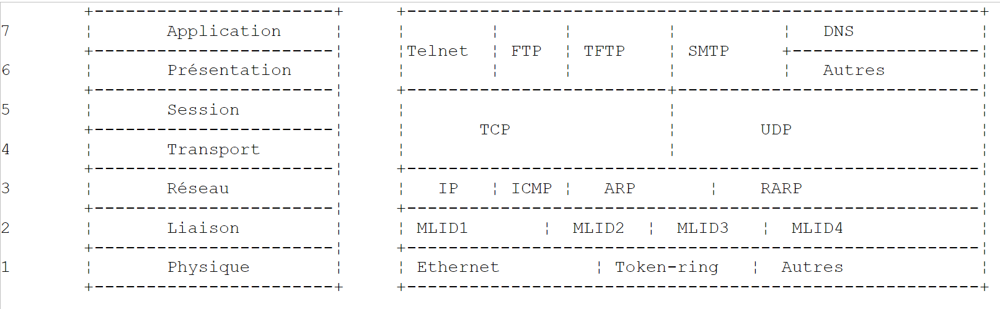
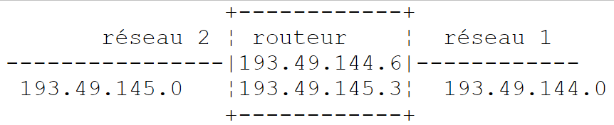
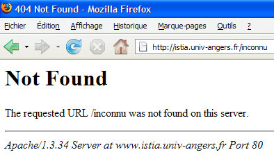
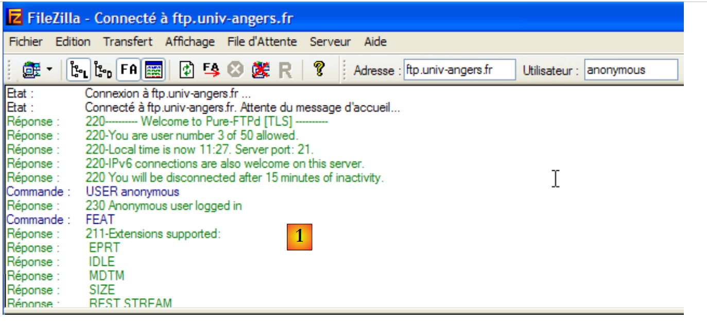
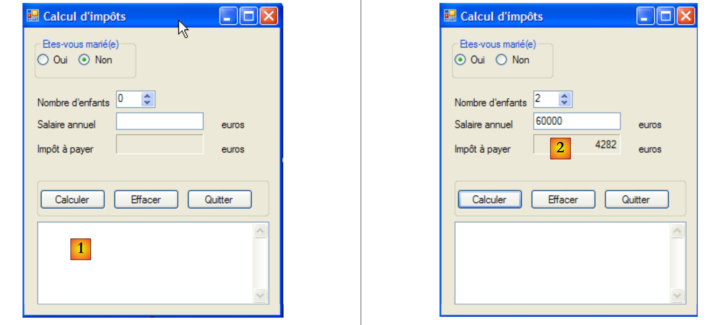

11. برمجة الإنترنت
11.1. عام
11.1.1. بروتوكولات الإنترنت
نقدم هنا مقدمة لبروتوكولات الاتصال عبر الإنترنت، والمعروفة أيضًا باسم مجموعة بروتوكولات TCP/IP (بروتوكول التحكم في النقل / بروتوكول الإنترنت)، والتي سُميت على اسم البروتوكولين الرئيسيين. قد يكون من المفيد للقارئ أن يكون لديه فهم عام لكيفية عمل الشبكات، ولا سيما بروتوكولات TCP/IP، قبل الشروع في بناء التطبيقات الموزعة. النص التالي هو ترجمة جزئية لنص موجود في الوثيقة "Lan Workplace for Dos - Administrator's Guide" من NOVELL، وهي وثيقة تعود إلى أوائل التسعينيات.
يأتي المفهوم العام لإنشاء شبكة من أجهزة الكمبيوتر غير المتجانسة من الأبحاث التي أجرتها وكالة DARPA (وكالة مشاريع الأبحاث المتقدمة للدفاع) في الولايات المتحدة الأمريكية. طورت وكالة DARPA مجموعة البروتوكولات المعروفة باسم TCP/IP، والتي تمكن الأجهزة غير المتجانسة من التواصل مع بعضها البعض. تم اختبار هذه البروتوكولات على شبكة تسمى ARPAnet، وهي الشبكة التي أصبحت فيما بعد الإنترنت. تحدد بروتوكولات TCP/IP تنسيقات وقواعد الإرسال والاستقبال التي تكون مستقلة عن تنظيم الشبكة والأجهزة المستخدمة.
الشبكة التي صممتها DARPA وتديرها بروتوكولات TCP/IP هي شبكة DARPA لتبديل الحزم. تنقل هذه الشبكة المعلومات عبر الشبكة، في أجزاء صغيرة تسمى الحزم. لذا، إذا أرسل جهاز كمبيوتر ملفًا كبيرًا، فسيتم تقسيمه إلى أجزاء أصغر، والتي سيتم إرسالها عبر الشبكة ليتم إعادة تجميعها في وجهتها. يحدد TCP/IP تنسيق هذه الحزم، أي:
- منشأ الحزمة
- الوجهة
- الطول
- النوع
11.1.2. نموذج OSI
تتبع بروتوكولات TCP/IP بشكل عام نموذج الشبكة المفتوحة المسمى OSI (نموذج مرجعي لربط الأنظمة المفتوحة) الذي حددته منظمة ISO (منظمة المعايير الدولية). يصف هذا النموذج شبكة مثالية حيث يمكن تمثيل الاتصال بين الأجهزة بنموذج مكون من سبع طبقات:
 |
تتلقى كل طبقة خدمات من الطبقة الأدنى وتقدم خدماتها الخاصة إلى الطبقة الأعلى. لنفترض أن تطبيقين على جهازين مختلفين A و B يرغبان في التواصل: فيقومان بذلك في طبقة التطبيق. ولا يحتاجان إلى معرفة كل تفاصيل كيفية عمل الشبكة: حيث يقوم كل تطبيق بتسليم المعلومات التي يرغب في إرسالها إلى الطبقة الأدنى: طبقة العرض. ويحتاج التطبيق فقط إلى معرفة قواعد التفاعل مع طبقة العرض.
بمجرد وصول المعلومات من "العرض التقديمي" إلى "الجلسة" وهكذا دواليك، حتى تصل إلى الوسيط المادي ويتم إرسالها فعليًا إلى الجهاز المستهدف. وهناك، تخضع لعملية معالجة معاكسة لتلك التي خضعت لها في الجهاز المرسل.
في كل طبقة، تقوم عملية الإرسال المسؤولة عن إرسال المعلومات بإرسالها إلى عملية استقبال على الجهاز الآخر الذي ينتمي إلى نفس الطبقة التي تنتمي إليها. وتقوم بذلك وفقًا لقواعد معينة تُعرف باسم طبقة البروتوكول. وهذا يعطينا مخطط الاتصال النهائي التالي:
 |
دور الطبقات المختلفة هو كما يلي:
تضمن نقل البتات عبر وسيط مادي. تشمل هذه الطبقة معدات طرفية لمعالجة البيانات (E.T.T.D.) مثل المحطة الطرفية أو الكمبيوتر، بالإضافة إلى معدات إنهاء دوائر البيانات (E.T.C.D.) مثل جهاز التضمين/التفكيك، أو جهاز التعدد، أو جهاز التجميع. النقاط المهمة في هذا المستوى هي:
| |
يخفي الخصائص المادية للطبقة المادية. يكتشف أخطاء الإرسال ويصححها. | |
تدير المسار الذي تسلكه المعلومات المرسلة عبر الشبكة. وهذا ما يُسمى بالتوجيه: تحديد المسار الذي يجب أن تسلكه معلومة ما للوصول إلى وجهتها. | |
يسمح بالاتصال بين تطبيقين، في حين أن الطبقات السابقة كانت تسمح فقط بالاتصال بين الأجهزة. إحدى الخدمات التي توفرها هذه الطبقة هي تعدد الإرسال: يمكن لطبقة النقل استخدام نفس اتصال الشبكة (من جهاز إلى جهاز) لنقل المعلومات الخاصة بعدة تطبيقات. | |
تحتوي هذه الطبقة على خدمات تمكّن التطبيق من فتح جلسة عمل والحفاظ عليها على جهاز بعيد. | |
الهدف منها هو توحيد طريقة عرض البيانات على أجهزة مختلفة. وبهذه الطريقة، سيتم "تجهيز" البيانات الواردة من الجهاز A بواسطة طبقة العرض من الجهاز A، بتنسيق قياسي، قبل إرسالها عبر الشبكة. وبمجرد وصولها إلى جهاز العرض B، الذي سيتعرف عليها بفضل تنسيقها القياسي، سيتم تجهيزها بطريقة أخرى حتى يتمكن تطبيق الجهاز B من التعرف عليها. | |
في هذا المستوى، نجد تطبيقات قريبة بشكل عام من المستخدم، مثل البريد الإلكتروني ونقل الملفات. |
11.1.3. نموذج TCP/IP
نموذج OSI هو نموذج مثالي لم يتم تحقيقه بعد. تقترب مجموعة بروتوكولات TCP/IP منه بالشكل التالي:
 |
الطبقة المادية
بالنسبة للشبكات المحلية، نستخدم عادةً إيثرنت أو توكن رينغ. ونعرض هنا تقنية إيثرنت فقط.
إيثرنت
هذا هو الاسم الذي أُطلق على تقنية الشبكات المحلية (LAN) التي تعمل بتبديل الحزم، والتي تم اختراعها في PARC Xerox في أوائل السبعينيات، وتم توحيد معاييرها من قبل Xerox و Intel و Digital Equipment في عام 1978. تتكون الشبكة مادياً من كابل متحد المحور يبلغ قطره حوالي 1.27 سم وطوله الأقصى 500 متر. ويمكن تمديدها باستخدام مكررات، ولا يمكن أن يفصل بين جهازين أكثر من مكررين. الكابل سلبي: جميع العناصر النشطة موجودة على الأجهزة المتصلة بالكابل. يتم توصيل كل جهاز بالكابل بواسطة بطاقة وصول إلى الشبكة تتكون من:
- جهاز إرسال (جهاز إرسال واستقبال) يكتشف وجود الإشارات على الكابل ويحول الإشارات التناظرية إلى رقمية والعكس صحيح.
- مقرن يستقبل الإشارات الرقمية من جهاز الإرسال وينقلها إلى الكمبيوتر للمعالجة، أو العكس.
الميزات الرئيسية لتقنية إيثرنت هي كما يلي:
- سعة 10 ميغابت/ثانية.
- توبولوجيا الناقل: جميع الأجهزة متصلة بنفس الكابل
 |
- شبكة البث - تقوم جهاز الإرسال بنقل المعلومات عبر الكابل مع عنوان الجهاز المقصود. ثم تستقبل جميع الأجهزة المتصلة هذه المعلومات، ولا يحتفظ بها سوى الجهاز الذي وجهت إليه
- وتتم طريقة الوصول على النحو التالي: يقوم جهاز الإرسال الراغب في الإرسال بالاستماع إلى الكابل - ثم يكتشف وجود أو عدم وجود موجة حاملة، مما يعني أن عملية إرسال جارية. وهذا ما يُعرف بـ CSMA (الوصول المتعدد باستشعار الموجة الحاملة). وفي حالة عدم وجود موجة حاملة، قد يقرر جهاز الإرسال الإرسال بدوره. قد يتخذ العديد من أجهزة الإرسال هذا القرار. يتم خلط الإشارات المرسلة: ونقول إن هناك تضاربًا. يكتشف جهاز الإرسال هذه الحالة: في نفس الوقت الذي يرسل فيه عبر الكابل، يستمع إلى ما يمر فعليًا عبره. إذا اكتشف أن المعلومات التي تمر عبر الكابل ليست هي التي أرسلها، يستنتج أن هناك تضاربًا ويتوقف عن الإرسال. وستفعل أجهزة الإرسال الأخرى الشيء نفسه. سيستأنف كل جهاز الإرسال بعد فترة زمنية عشوائية تعتمد على كل جهاز إرسال. تسمى هذه التقنية CD (Collision Detect). تسمى طريقة الوصول CSMA/CD.
- عنونة 48 بت. لكل جهاز عنوان، يُسمى هنا العنوان الفعلي، وهو مكتوب على البطاقة التي تربطه بالكابل. يُسمى هذا العنوان إيثرنت الجهاز.
طبقة الشبكة
تتضمن هذه الطبقة بروتوكولات IP و ICMP و ARP و RARP.
تنقل الحزم بين عقدتين في الشبكة | |
يتيح ICMP الاتصال بين برنامج بروتوكول IP في جهاز ما وبرنامج بروتوكول IP في جهاز آخر. وبالتالي، فهو بروتوكول لتبادل الرسائل ضمن بروتوكول IP. | |
يقوم بتعيين عنوان جهاز الإنترنت إلى عنوان الجهاز الفعلي | |
يربط عنوان الجهاز الفعلي بعنوان الجهاز على الإنترنت |
طبقات النقل/الجلسة
تتضمن هذه الطبقة البروتوكولات التالية:
يضمن نقل المعلومات بشكل موثوق بين عميلين | |
يضمن تسليم المعلومات بشكل غير موثوق بين عميلين |
طبقات التطبيق/العرض/الجلسة
توجد هنا بروتوكولات متنوعة:
محاكي طرفي يسمح للجهاز A بالاتصال بالجهاز B كطرف | |
يتيح نقل الملفات | |
يتيح نقل الملفات | |
يسمح بتبادل الرسائل بين مستخدمي الشبكة | |
يحول اسم الجهاز إلى عنوان جهاز على الإنترنت | |
تم إنشاؤه بواسطة شركة Sun Microsystems، ويحدد معيارًا لتمثيل البيانات بشكل مستقل عن الجهاز | |
الذي حددته شركة Sun أيضًا، وهو بروتوكول اتصال بين التطبيقات البعيدة، مستقل عن طبقة النقل. هذا البروتوكول مهم: فهو يعفي المبرمج من معرفة تفاصيل طبقة النقل ويجعل التطبيقات قابلة للنقل. يعتمد هذا البروتوكول على بروتوكول XDR | |
الذي تم تعريفه أيضًا بواسطة Sun، ويسمح هذا البروتوكول لجهاز واحد بـ"رؤية" نظام الملفات الخاص بجهاز آخر. وهو يعتمد على بروتوكول RPC السابق |
11.1.4. كيف تعمل بروتوكولات الإنترنت
تستخدم التطبيقات المطورة في بيئة TCP/IP عمومًا العديد من بروتوكولات هذه البيئة. يتواصل برنامج التطبيق مع أعلى طبقة بروتوكول. تنقل هذه الطبقة المعلومات إلى الطبقة التي تليها، وهكذا دواليك حتى تصل إلى الوسيط المادي. هنا، يتم نقل المعلومات ماديًا إلى الجهاز حيث تمر عبر الطبقات نفسها مرة أخرى، هذه المرة في الاتجاه المعاكس، حتى تصل إلى التطبيق الذي تم إرسال المعلومات إليه. يوضح الرسم البياني التالي مسار المعلومات:
 |
لنأخذ مثالاً: تطبيق FTP، المحدد في التطبيق الذي يتيح نقل الملفات بين الأجهزة.
- يقوم التطبيق بتسليم سلسلة من البايتات ليتم إرسالها إلى طبقة النقل.
- تقوم طبقة النقل بتقسيم سلسلة البايتات هذه إلى مقاطع TCP، وتضيف رقم المقطع إلى بداية كل مقطع. يتم تمرير المقاطع إلى طبقة الشبكة، التي تحكمها بروتوكول IP.
- تقوم طبقة IP بإنشاء حزمة تغلف مقطع TCP المستلم. وتضع في مقدمة هذه الحزمة عناوين الإنترنت لأجهزة المصدر والوجهة. كما تحدد العنوان الفعلي لجهاز الوجهة. يتم تمرير كل هذا إلى رابط البيانات والرابط الفعلي، أي بطاقة الشبكة التي تربط الجهاز بالشبكة الفعلية.
- هنا، يتم تغليف حزمة IP بدورها في إطار وإرسالها إلى مستلمها عبر الكابل.
- على الجهاز المستقبل، يقوم رابط البيانات والرابط المادي بالعكس: فهو يفك تغليف حزمة IP من الإطار المادي ويمررها إلى طبقة IP.
- تتحقق طبقة IP من صحة الحزمة: فهي تحسب مجموعًا استنادًا إلى البتات المستلمة (مجموع التحقق)، والذي يجب أن يوجد في رأس الحزمة. إذا لم يكن الأمر كذلك، يتم رفض الحزمة.
- إذا تم إعلان صحة الحزمة، تقوم طبقة IP بفك تغليف مقطع TCP الموجود فيها وتمريره إلى طبقة نقل IP.
- تفحص طبقة النقل، وهي طبقة TCP في مثالنا، رقم المقطع لاستعادة الترتيب الصحيح للمقاطع.
- كما تحسب مجموعًا اختباريًا لمقطع TCP. إذا تبين أنه صحيح، ترسل طبقة TCP إقرارًا بالاستلام إلى الجهاز المصدر، وإلا يتم رفض مقطع TCP.
- كل ما يتبقى لطبقة TCP هو نقل جزء البيانات من المقطع إلى التطبيق الوجهة في الطبقة أعلاه.
11.1.5. معالجة المشكلات في الإنترنت
يمكن أن تكون عقدة الشبكة جهاز كمبيوتر أو طابعة ذكية أو خادم ملفات، أو في الواقع أي شيء يمكنه الاتصال باستخدام بروتوكولات TCP/IP. لكل عقدة عنوان مادي يعتمد تنسيقه على نوع الشبكة. في شبكة إيثرنت، يتم ترميز العنوان المادي في 6 بايت. أما عنوان شبكة X25 فهو رقم مكون من 14 رقمًا.
عنوان الإنترنت للعقدة هو عنوان منطقي: فهو مستقل عن الأجهزة والشبكة المستخدمة. وهو عنوان مكون من 4 بايت يحدد كلاً من الشبكة المحلية والعقدة الموجودة على تلك الشبكة. عادةً ما يتم تمثيل عنوان الإنترنت بأربعة أرقام، وهي قيم البايتات الأربعة، مفصولة بنقطة. على سبيل المثال، عنوان جهاز Lagaffe في كلية العلوم في أنجيه هو 193.49.144.1، وعنوان جهاز Liny هو 193.49.144.9. نستنتج أن عنوان الإنترنت للشبكة المحلية هو 193.49.144.0. يمكن أن تضم هذه الشبكة ما يصل إلى 254 عقدة.
نظرًا لأن عناوين الإنترنت أو عناوين IP مستقلة عن الشبكة، يمكن لجهاز على الشبكة A التواصل مع جهاز على الشبكة B بغض النظر عن نوع الشبكة التي يعمل عليها: كل ما يحتاجه هو معرفة عنوان IP الخاص به. يتولى بروتوكول IP على كل شبكة تحويل عنوان IP <--> العنوان الفعلي، في كلا الاتجاهين.
يجب أن تكون جميع عناوين IP مختلفة. في فرنسا، يتولى معهد INRIA مسؤولية تخصيص عناوين IP. في الواقع، تصدر هذه المنظمة عنوانًا لشبكتك المحلية، على سبيل المثال 193.49.144.0 لشبكة كلية العلوم في أنجيه. يمكن لمسؤول الشبكة بعد ذلك تخصيص عناوين IP من 193.49.144.1 إلى 193.49.144.254 حسبما يراه مناسبًا. عادةً ما يتم تدوين هذا العنوان في ملف خاص على كل جهاز متصل بالشبكة.
11.1.5.1. فئات عناوين IP
عنوان IP هو تسلسل مكون من 4 بايت، يُشار إليه غالبًا بـ I1.I2.I3.I4، والذي يحتوي في الواقع على عنوانين:
- عنوان الشبكة
- عنوان عقدة في هذه الشبكة
اعتمادًا على حجم هذين الحقلين، تنقسم عناوين IP إلى 3 فئات: الفئات A و B و C.
الفئة A
عنوان IP: I1.I2.I3.I4 له الشكل R1.N1.N2.N3 حيث
R1 هو عنوان الشبكة
N1.N2.N3 هو عنوان جهاز في هذه الشبكة
وبشكل أكثر دقة، فإن شكل عنوان IP من الفئة A هو كما يلي:
يتكون عنوان الشبكة من 7 بتات وعنوان العقدة من 24 بتة. وبالتالي، يمكن أن يكون لدينا 127 شبكة من الفئة A، تحتوي كل منها على ما يصل إلى 224 عقدة.
الفئة ب
هنا، عنوان IP: I1.I2.I3.I4 له الشكل R1.R2.N1.N2 حيث
R1.R2 هو عنوان الشبكة
N1.N2 هو عنوان جهاز في هذه الشبكة
وبشكل أكثر دقة، فإن شكل عنوان IP من الفئة B هو كما يلي:
يتكون عنوان الشبكة من 2 بايت (14 بت بالضبط)، وكذلك عنوان العقدة. وبالتالي، يمكن أن يكون لدينا 2¹⁴ شبكة من الفئة B، تضم كل منها ما يصل إلى 2¹⁶ عقدة.
الفئة C
في هذه الفئة، يكون عنوان IP: I1.I2.I3.I4 على الشكل R1.R2.R3.N1 حيث
R1.R2.R3 هو عنوان الشبكة
N1 هو عنوان جهاز في هذه الشبكة
وبشكل أكثر دقة، فإن شكل عنوان IP من الفئة C هو كما يلي:
 |
يبلغ حجم عنوان الشبكة 3 بايت (ناقص 3 بتات) وعنوان العقدة 1 بايت. وبالتالي، يمكننا الحصول على 221 شبكة من الفئة C تضم ما يصل إلى 256 عقدة.
بما أن عنوان جهاز Lagaffe التابع لكلية العلوم في أنجيه هو 193.49.144.1، يمكننا أن نلاحظ أن البايت الأكثر أهمية هو 193، أي 11000001 بالثنائي. وهذا يعني أن الشبكة من الفئة C.
العناوين المحجوزة
- بعض عناوين IP هي عناوين شبكات وليست عناوين لعقد في الشبكة. هذه هي العناوين التي يتم فيها تعيين عنوان العقدة على 0. على سبيل المثال، العنوان 193.49.144.0 هو عنوان IP لشبكة كلية العلوم في أنجيه. وبالتالي، لا يمكن لأي عقدة في الشبكة أن يكون لها عنوان صفر.
- عندما يحتوي عنوان العقدة في عنوان IP على الرقم 1 فقط، يكون لدينا عنوان بث: هذا العنوان يشير إلى جميع عقد الشبكة.
- في شبكة من الفئة C، التي تسمح نظريًا بـ 28=256 عقدة، إذا أزلنا العنوانين المحظورين، يتبقى لدينا 254 عنوانًا مسموحًا به.
11.1.5.2. بروتوكولات التحويل عنوان الإنترنت <--> العنوان الفعلي
لقد رأينا أنه عندما يتم نقل المعلومات من جهاز إلى آخر، يتم تغليفها في حزم أثناء مرورها عبر طبقة IP. وتأخذ هذه الحزم الشكل التالي:
 |
وبالتالي، تحتوي حزمة IP على عناوين الإنترنت للجهازين المصدر والوجهة. وعندما يتم إرسال هذه الحزمة إلى الطبقة المسؤولة عن إرسالها على الشبكة المادية، تضاف إليها معلومات أخرى لتشكيل الإطار المادي الذي سيتم إرساله في النهاية على الشبكة. على سبيل المثال، يكون تنسيق الإطار على شبكة إيثرنت كما يلي:
 |
يحتوي الإطار النهائي على العناوين المادية لأجهزة المصدر والوجهة. كيف يتم الحصول عليها؟
يستطيع الجهاز المرسل، الذي يعرف عنوان IP للجهاز الذي يرغب في التواصل معه، الحصول على العنوان المادي لهذا الأخير باستخدام بروتوكول خاص يسمى ARP (بروتوكول تحليل العناوين).
- ترسل الجهاز نوعًا خاصًا من الحزم يُسمى حزمة ARP، تحتوي على عنوان IP للجهاز الذي نبحث عن عنوانه الفعلي. كما أنها حرصت على تضمين عنوان IP الخاص بها، بالإضافة إلى عنوانها الفعلي.
- يتم إرسال هذه الحزمة إلى جميع عقد الشبكة.
- وتتعرف هذه العقد على الطبيعة الخاصة للحزمة. وتستجيب العقدة التي تتعرف على عنوان IP الخاص بها في الحزمة بإرسال عنوانها الفعلي إلى مرسل الحزمة. كيف يمكنها القيام بذلك؟ لقد عثرت على عنواني IP والفعلي للمرسل في الحزمة.
- يتلقى المرسل العنوان الفعلي الذي كان يبحث عنه. ويخزنه في الذاكرة حتى يتمكن من استخدامه لاحقًا إذا احتاج إلى إرسال حزم أخرى إلى نفس المستلم.
عادةً ما يتم تسجيل عنوان IP للجهاز في أحد ملفاته، والذي يمكنه الرجوع إليه لمعرفة ما هو. يمكن تغيير هذا العنوان عن طريق تعديل الملف. من ناحية أخرى، يتم تخزين العنوان الفعلي في ذاكرة على بطاقة الشبكة ولا يمكن تغييره.
عندما يرغب المسؤول في تنظيم شبكته بطريقة مختلفة، قد يضطر إلى تغيير عناوين IP لجميع العقد وبالتالي تعديل ملفات التكوين المختلفة للعقد المختلفة. قد يكون هذا مملًا وعرضة للأخطاء إذا كان هناك عدد كبير من الأجهزة. تتمثل إحدى الطرق في عدم تخصيص عنوان IP للأجهزة: يتم كتابة رمز خاص في الملف الذي يجب أن تجد فيه الجهاز عنوان IP الخاص بها. وعندما تكتشف الآلة أنها لا تمتلك عنوان IP، تطلبه باستخدام بروتوكول يسمى RARP (بروتوكول تحليل العناوين العكسي). ثم ترسل حزمة خاصة على الشبكة، تسمى حزمة RARP، مشابهة لحزمة ARP المذكورة أعلاه، تضع فيها عنوانها المادي. يتم إرسال هذه الحزمة إلى جميع العقد، التي تتعرف بعد ذلك على حزمة RARP. تحتوي إحدى هذه العقد، والتي تسمى خادم RARP، على ملف يحتوي على العنوان الفعلي <--> عنوان IP لجميع العقد. ثم ترد على مرسل حزمة RARP، وترسل له عنوان IP الخاص به. يحتاج المسؤول الذي يرغب في إعادة تكوين شبكته ببساطة إلى تعديل ملف المراسلات الخاص بخادم RARP. يجب أن يكون لهذا الخادم عادةً عنوان IP ثابت، والذي يجب أن يتمكن من معرفته دون الحاجة إلى استخدام بروتوكول RARP بنفسه.
11.1.6. طبقة شبكة IP للإنترنت
يحدد بروتوكول IP (بروتوكول الإنترنت) الشكل الذي يجب أن تتخذه الحزم وكيفية التعامل معها عند إرسالها أو استلامها. يُسمى هذا النوع المعين من الحزم datagram IP. وقد قدمنا بالفعل:
 |
الشيء المهم هو أنه، بالإضافة إلى البيانات المراد إرسالها، تحتوي حزمة بيانات IP على عناوين الإنترنت لأجهزة المصدر والوجهة. وبهذه الطريقة، تعرف الجهاز المستقبل من الذي يرسل له الرسالة.
على عكس إطار الشبكة، الذي يتحدد طوله بالخصائص المادية للشبكة التي يمر عبرها، فإن طول داتاغرام IP يحدده البرنامج، وبالتالي سيكون هو نفسه على شبكات مادية مختلفة. كما رأينا، يتم تغليف داتاغرام IP في إطار مادي أثناء نزوله من طبقة الشبكة إلى الطبقة المادية. وقد قدمنا مثالاً على الإطار المادي لشبكة إيثرنت:
تنتقل الإطارات المادية من عقدة إلى أخرى في طريقها نحو وجهتها، التي قد لا تكون على نفس الشبكة المادية التي يوجد عليها الجهاز المرسل. وبالتالي، قد يتم تغليف حزمة IP تباعًا في إطارات مادية مختلفة عند العقد التي تربط بين نوعين مختلفين من الشبكات. ومن الممكن أيضًا أن تكون حزمة IP أكبر من أن يتم تغليفها في إطار مادي واحد. ثم يقوم برنامج IP الخاص بالعقدة التي تحدث فيها هذه المشكلة بتقسيم حزمة IP إلى أجزاء وفقًا لقواعد دقيقة، يتم إرسال كل منها عبر الشبكة المادية. ولا يتم إعادة تجميعها حتى تصل إلى وجهتها النهائية.
11.1.6.1. التوجيه
التوجيه هو طريقة توجيه حزم IP إلى وجهتها. هناك طريقتان: التوجيه المباشر والتوجيه غير المباشر.
التوجيه المباشر
يشير التوجيه المباشر إلى توجيه حزمة IP مباشرة من المرسل إلى المستلم داخل نفس الشبكة:
- يحتوي الجهاز الذي يرسل حزمة بيانات IP على عنوان IP للمستلم.
- ويحصل على العنوان المادي للأخير عبر بروتوكول ARP أو من جداوله، إذا كان هذا العنوان قد تم الحصول عليه بالفعل.
- ويقوم بإرسال الحزمة عبر الشبكة إلى هذا العنوان المادي.
التوجيه غير المباشر
يشير التوجيه غير المباشر إلى توجيه حزمة IP إلى وجهة على شبكة أخرى غير تلك التي ينتمي إليها المرسل. في هذه الحالة، تختلف أجزاء عنوان الشبكة في عناوين IP لأجهزة المصدر والوجهة. يتعرف الجهاز المصدر على هذه النقطة. ثم يرسل الحزمة إلى عقدة خاصة تسمى جهاز التوجيه (router)، وهي العقدة التي تربط الشبكة المحلية بشبكات أخرى ويجد عنوان IP الخاص بها في جداوله، وهو عنوان تم الحصول عليه في البداية إما في ملف أو في ذاكرة دائمة، أو عبر المعلومات المتداولة على الشبكة.
يتم توصيل جهاز التوجيه بشبكتين وله عنوان IP داخل هاتين الشبكتين.
 |
في المثال أعلاه:
. الشبكة رقم 1 لها عنوان الإنترنت 193.49.144.0 والشبكة رقم 2 لها عنوان 193.49.145.0.
. داخل الشبكة رقم 1، عنوان جهاز التوجيه هو 193.49.144.6، وداخل الشبكة رقم 2، عنوانه هو 193.49.145.3.
يتمثل دور جهاز التوجيه في وضع حزمة IP التي يستقبلها، والموجودة في إطار مادي نموذجي للشبكة رقم 1، في إطار مادي يمكنه الدوران على الشبكة رقم 2. إذا كان عنوان IP لمستلم الحزمة موجودًا في الشبكة رقم 2، فسيرسل جهاز التوجيه الحزمة إليه مباشرةً، وإلا فسيرسلها إلى جهاز توجيه آخر، يربط الشبكة رقم 2 بالشبكة رقم 3، وهكذا دواليك.
11.1.6.2. رسائل الخطأ والتحكم
لا يزال في طبقة الشبكة، على نفس مستوى بروتوكول IP، يوجد بروتوكول ICMP (بروتوكول رسائل التحكم في الإنترنت). ويستخدم لإرسال رسائل حول الأعمال الداخلية للشبكة: تعطل العقد، الازدحام في جهاز التوجيه، إلخ ... يتم تغليف رسائل ICMP في حزم IP وإرسالها عبر الشبكة. تتخذ طبقات IP للعقد المختلفة الإجراءات المناسبة وفقًا لرسائل ICMP التي تتلقاها. وبهذه الطريقة، لا يرى التطبيق نفسه أبدًا هذه المشكلات الخاصة بالشبكة.
ستستخدم العقدة معلومات ICMP لتحديث جداول التوجيه الخاصة بها.
11.1.7. طبقة النقل: بروتوكولا UDP و TCP
11.1.7.1. بروتوكول UDP: بروتوكول مخطط بيانات المستخدم
يتيح بروتوكول UDP تبادلًا غير موثوق به للبيانات بين نقطتين، أي أنه لا يضمن التوجيه الصحيح لحزمة البيانات إلى وجهتها. يمكن للتطبيق إدارة ذلك بنفسه، على سبيل المثال عن طريق انتظار إقرار بالاستلام بعد إرسال رسالة، قبل إرسال الرسالة التالية.
في الوقت الحالي، على مستوى الشبكة، كنا نتحدث عن عناوين IP للأجهزة. على الجهاز الواحد، يمكن أن تتعايش عمليات مختلفة في نفس الوقت، ويمكن لجميعها التواصل. عند إرسال رسالة، يجب عليك بالتالي تحديد ليس فقط عنوان IP للجهاز الوجهة، بل أيضًا "اسم" العملية الوجهة. هذا الاسم هو في الواقع رقم، يُسمى رقم المنفذ. بعض الأرقام محجوزة للتطبيقات القياسية: المنفذ 69 لبروتوكول tftp (بروتوكول نقل الملفات البسيط) على سبيل المثال.
تُسمى الحزم التي يديرها بروتوكول UDP أيضًا بالدياتاجرامات. وهي تأخذ الشكل التالي:
يتم تغليف هذه المخططات البياناتية في حزم IP، ثم في إطارات مادية.
11.1.7.2. بروتوكول TCP: بروتوكول التحكم في النقل
بالنسبة للاتصالات الآمنة، لا يكفي بروتوكول UDP: يجب على مطور التطبيق تطوير بروتوكوله الخاص للتحقق من التوجيه الصحيح للحزم. يتجنب بروتوكول TCP (بروتوكول التحكم في النقل) هذه المشاكل. وفيما يلي ميزاته:
- تقوم العملية التي ترغب في الإرسال أولاً بإنشاء اتصال مع العملية التي ستتلقى المعلومات التي سترسلها. يتم إجراء هذا الاتصال بين منفذ على الجهاز المرسل ومنفذ على الجهاز المستقبل. وبذلك يتم إنشاء مسار افتراضي بين المنفذين، والذي سيتم حجزه للعمليتين اللتين قامتا بإجراء الاتصال.
- تتبع جميع الحزم المرسلة من قبل العملية المصدر هذا المسار الافتراضي وتصل بالترتيب الذي تم إرسالها به، وهو ما لم يكن مضمونًا في بروتوكول UDP، حيث يمكن أن تتبع الحزم مسارات مختلفة.
- المعلومات المرسلة مستمرة. ترسل العملية المرسلة المعلومات وفقًا لسرعتها الخاصة. لا يتم إرسال هذه المعلومات بالضرورة على الفور: ينتظر بروتوكول TCP حتى يتوفر لديه ما يكفي من المعلومات لإرسالها. يتم تخزينها في بنية تسمى مقطع TCP. بمجرد اكتمالها، يتم إرسال هذا المقطع إلى طبقة IP، حيث يتم تغليفها في حزمة IP.
- يتم ترقيم كل جزء يتم إرساله بواسطة بروتوكول TCP. ويتحقق بروتوكول TCP المستقبل من استلام الأجزاء بالترتيب الصحيح. وبالنسبة لكل جزء يتم استلامه بشكل صحيح، يرسل إقرارًا بالاستلام إلى المرسل.
- وعندما يتلقى المرسل هذا الإقرار، يقوم بإبلاغ عملية الإرسال. وهذا يعني أن عملية الإرسال تعلم أن المقطع قد وصل بأمان، وهو ما لم يكن ممكنًا مع بروتوكول UDP.
- إذا لم يتلق بروتوكول TCP الذي أرسل مقطعًا ما إقرارًا بالاستلام بعد فترة زمنية معينة، فإنه يعيد إرسال المقطع المعني، مما يضمن جودة خدمة توجيه المعلومات.
- الدائرة الافتراضية التي يتم إنشاؤها بين عمليتي الاتصال هي دائرة ثنائية الاتجاه: وهذا يعني أن المعلومات يمكن أن تتدفق في كلا الاتجاهين. وبهذه الطريقة، يمكن لعملية الوجهة إرسال إقرارات بالاستلام بينما تواصل عملية المصدر إرسال المعلومات. وهذا يسمح لبروتوكول TCP المصدر، على سبيل المثال، بإرسال عدة مقاطع دون انتظار إقرار بالاستلام. وإذا أدرك بعد فترة معينة أنه لم يتلق إقرارًا بالاستلام لمقطع معين رقم n، فسيستأنف بث المقطع عند هذه النقطة.
11.1.8. طبقة التطبيقات
فوق بروتوكولي UDP و TCP، توجد بروتوكولات قياسية متنوعة:
TELNET
يسمح هذا البروتوكول لمستخدم على الجهاز <bdi dir="ltr" class="odt-ltr-term">A</bdi> في الشبكة بالاتصال بالجهاز <bdi dir="ltr" class="odt-ltr-term">B</bdi> (الذي يُسمى غالبًا الجهاز المضيف). يقوم <bdi dir="ltr" class="odt-ltr-term">TELNET</bdi> بمحاكاة محطة طرفية عالمية على الجهاز <bdi dir="ltr" class="odt-ltr-term">A.</bdi> ثم يتصرف المستخدم كما لو كان لديه محطة طرفية متصلة بالجهاز <bdi dir="ltr" class="odt-ltr-term">B.</bdi> يعتمد <bdi dir="ltr" class="odt-ltr-term">Telnet</bdi> على بروتوكول <bdi dir="ltr" class="odt-ltr-term">TCP.</bdi>
FTP: (بروتوكول نقل الملفات)
يتيح هذا البروتوكول تبادل الملفات بين جهازين بعيدين، بالإضافة إلى عمليات معالجة الملفات مثل إنشاء الدلائل. وهو يعتمد على بروتوكول <bdi dir="ltr" class="odt-ltr-term">TCP.</bdi>
TFTP: (التحكم البسيط في نقل الملفات)
هذا البروتوكول هو أحد أشكال بروتوكول <bdi dir="ltr" class="odt-ltr-term">FTP.</bdi> وهو يعتمد على بروتوكول <bdi dir="ltr" class="odt-ltr-term">UDP</bdi> وهو أقل تعقيدًا من بروتوكول <bdi dir="ltr" class="odt-ltr-term">FTP.</bdi>
DNS: (نظام أسماء النطاقات)
عندما يرغب المستخدم في تبادل الملفات مع جهاز بعيد، عبر <bdi dir="ltr" class="odt-ltr-term">FTP</bdi> على سبيل المثال، فإنه يحتاج إلى معرفة عنوان الإنترنت لهذا الجهاز. على سبيل المثال، لإجراء <bdi dir="ltr" class="odt-ltr-term">FTP</bdi> على جهاز <bdi dir="ltr" class="odt-ltr-term">Lagaffe</bdi> في جامعة أنجيه، ستحتاج إلى تشغيل <bdi dir="ltr" class="odt-ltr-term">FTP</bdi> على النحو التالي: <bdi dir="ltr" class="odt-ltr-term">FTP 193.49.144.1</bdi>
وهذا يتطلب دليلًا يربط بين الجهاز <--> عنوان <bdi dir="ltr" class="odt-ltr-term">IP.</bdi> في هذا الدليل، من المحتمل أن يتم تعيين الأجهزة بأسماء رمزية مثل:
الجهاز <bdi dir="ltr" class="odt-ltr-term">DPX2/320</bdi> من جامعة أنجيه
جهاز <bdi dir="ltr" class="odt-ltr-term">sun</bdi> من <bdi dir="ltr" class="odt-ltr-term">ISERPA</bdi> في أنجيه
من الواضح أنه سيكون من الأفضل الإشارة إلى الجهاز بالاسم بدلاً من عنوان <bdi dir="ltr" class="odt-ltr-term">IP</bdi> الخاص به. ثم هناك مشكلة تفرد الاسم: فهناك ملايين الأجهزة المتصلة ببعضها البعض. يمكننا أن نتخيل هيئة مركزية تقوم بتخصيص الأسماء. سيكون هذا بلا شك أمرًا مرهقًا إلى حد ما. في الواقع، تم توزيع التحكم في الأسماء على **مجالات**. يتم إدارة كل مجال من قبل منظمة صغيرة جدًا، والتي لها الحرية في اختيار أسماء أجهزتها. على سبيل المثال، تنتمي الأجهزة في فرنسا إلى المجال **<bdi dir="ltr" class="odt-ltr-term">en</bdi>**، الذي تديره <bdi dir="ltr" class="odt-ltr-term">Inria</bdi> في باريس. لتبسيط الأمور ، نقوم بتوزيع التحكم بشكل أكبر: يتم إنشاء النطاقات داخل **<bdi dir="ltr" class="odt-ltr-term">en</bdi>**. تنتمي جامعة أنجيه إلى **<bdi dir="ltr" class="odt-ltr-term">univ-Angers</bdi>**. ويتمتع القسم الذي يدير هذا النطاق بحرية تسمية الأجهزة الموجودة على شبكة <bdi dir="ltr" class="odt-ltr-term">Université d</bdi>'<bdi dir="ltr" class="odt-ltr-term">Angers.</bdi> في الوقت الحالي، لم يتم تقسيم هذا النطاق إلى أقسام فرعية. ولكن في جامعة كبيرة بها العديد من الأجهزة المتصلة بالشبكة، قد يتم تقسيمه.
تم تسمية جهاز <bdi dir="ltr" class="odt-ltr-term">DPX2/320</bdi> في جامعة أنجيه *باسم <bdi dir="ltr" class="odt-ltr-term">Lagaffe</bdi>* بينما تم تسمية جهاز <bdi dir="ltr" class="odt-ltr-term">PC</bdi> 486DX50 *باسم <bdi dir="ltr" class="odt-ltr-term">liny</bdi>*. كيف يمكنك الإشارة إلى هذه الأجهزة من الخارج؟ عن طريق تحديد التسلسل الهرمي للمجال الذي تنتمي إليه. على سبيل المثال، سيكون الاسم الكامل لجهاز <bdi dir="ltr" class="odt-ltr-term">Lagaffe</bdi> هو:
**<bdi dir="ltr" class="odt-ltr-term">Lagaffe.univ-Angers.fr</bdi>**
يمكن استخدام الأسماء النسبية داخل المجالات. وبالتالي، داخل المجال **<bdi dir="ltr" class="odt-ltr-term">en</bdi>** وخارج المجال <bdi dir="ltr" class="odt-ltr-term">univ-Angers</bdi>، يمكن الإشارة إلى جهاز <bdi dir="ltr" class="odt-ltr-term">Lagaffe</bdi> بواسطة
**<bdi dir="ltr" class="odt-ltr-term">Lagaffe.univ-Angers</bdi>**
وأخيرًا، داخل *<bdi dir="ltr" class="odt-ltr-term">univ</bdi>*-<bdi dir="ltr" class="odt-ltr-term">Ang</bdi>*<bdi dir="ltr" class="odt-ltr-term">ers</bdi>*، يمكن الإشارة إليها ببساطة بـ
**<bdi dir="ltr" class="odt-ltr-term">Lagaffe</bdi>**
وبالتالي، يمكن للتطبيق الإشارة إلى جهاز ما بالاسم. في نهاية المطاف، لا تزال بحاجة إلى الحصول على عنوان الإنترنت الخاص بالجهاز. كيف يتم تحقيق ذلك؟ لنفترض أنك تريد الاتصال من الجهاز <bdi dir="ltr" class="odt-ltr-term">A</bdi> إلى الجهاز <bdi dir="ltr" class="odt-ltr-term">B.</bdi>
- إذا كان الجهاز B ينتمي إلى نفس المجال مثل الجهاز A، فسنجد على الأرجح عنوان IP الخاص به في ملف على الجهاز A.
- وإلا، فسيجد الجهاز A قائمة ببعض خوادم الأسماء مع عناوين IP الخاصة بها. خادم الأسماء مسؤول عن ربط اسم الجهاز بعنوان IP الخاص به. سيرسل الجهاز A طلبًا خاصًا إلى أول خادم أسماء في قائمته، يُسمى طلب DNS، يتضمن اسم الجهاز الذي يبحث عنه. إذا كان الخادم المستفسر عنه يحتوي على هذا الاسم في سجلاته، فسيرسل إلى الجهاز A عنوان IP المقابل. وإذا لم يكن موجودًا، فسيبحث الخادم أيضًا عن قائمة بخوادم الأسماء في ملفاته، والتي سيرسلها إلى الجهاز A ليقوم بالاستعلام عنها. ثم يقوم بذلك. وبهذه الطريقة، سيتم الاستعلام عن عدد من خوادم الأسماء، ليس بشكل عشوائي، بل بطريقة تقلل من عدد الاستعلامات. وإذا تم العثور على الجهاز أخيرًا، فستعود الإجابة إلى الجهاز A.
XDR: (تمثيل البيانات الخارجية)
تم إنشاء هذا البروتوكول بواسطة شركة <bdi dir="ltr" class="odt-ltr-term">Sun Microsystems</bdi>، وهو يحدد تمثيلاً قياسياً للبيانات مستقلاً عن الجهاز.
RPC: (استدعاء الإجراءات عن بُعد)
تم تعريفه أيضًا بواسطة <bdi dir="ltr" class="odt-ltr-term">Sun</bdi>، وهو بروتوكول اتصال بين التطبيقات البعيدة، مستقل عن طبقة النقل. هذا البروتوكول مهم: فهو يعفي المبرمج من معرفة تفاصيل طبقة النقل ويجعل التطبيقات قابلة للنقل. يعتمد هذا البروتوكول على بروتوكول <bdi dir="ltr" class="odt-ltr-term">XDR</bdi>
NFS: نظام ملفات الشبكة
يُعرف هذا البروتوكول أيضًا بواسطة <bdi dir="ltr" class="odt-ltr-term">Sun</bdi>، ويتيح لجهاز واحد "رؤية" نظام الملفات الخاص بجهاز آخر. وهو يعتمد على بروتوكول <bdi dir="ltr" class="odt-ltr-term">RPC</bdi> السابق.
11.1.9. الخلاصة
في هذه المقدمة، قدمنا بعض الخطوط العريضة لبروتوكولات الإنترنت. ولإلقاء نظرة أكثر تعمقًا على هذا المجال، اقرأ الكتاب الممتاز الذي ألفه دوغلاس كومر:
العنوان TCP/IP: الهندسة المعمارية والبروتوكولات والتطبيقات.
المؤلف دوغلاس كومر
الناشر InterEditions
11.2. فئات .NET لإدارة عناوين IP
يتم تعريف أي جهاز على شبكة الإنترنت بشكل فريد بواسطة عنوان IP (بروتوكول الإنترنت)، والذي يمكن أن يتخذ شكلين:
- IPv4 : مشفر بـ 32 بت ويتم تمثيله بسلسلة من النوع "I1.I2.I3.I4" حيث In هو رقم بين 1 و 254. هذه هي عناوين IP الأكثر شيوعًا حاليًا.
- IPv6: مشفرة بـ 128 بت وممثلة بسلسلة من النوع "[I1.I2.I3.I4.I5.I6.I7.I8]" حيث In عبارة عن سلسلة من 4 أرقام سداسية عشرية. في هذا المستند، لن نستخدم عناوين IPv6.
يمكن أيضًا تعريف الجهاز باسم فريد بنفس القدر. هذا الاسم ليس إلزاميًا، حيث إن التطبيقات تستخدم دائمًا عناوين IP للأجهزة. على سبيل المثال، من الأسهل طلب عنوان URL من متصفح http://www.ibm.com بدلاً من عنوان URL http://129.42.17.99 على الرغم من أن كلا الطريقتين ممكنتان.
يمكن أن يكون للجهاز عدة عناوين IP إذا كان متصلاً فعلياً بعدة شبكات في نفس الوقت. وعندها يكون له عنوان IP على كل شبكة.
يمكن تمثيل عنوان IP بطريقتين في .NET :
- كسلسلة "I1.I2.I3.I4" أو "[I1.I2.I3.I4.I5.I6.I7.I8]"
- في شكل IPAddress
فئة IPAddress
من بين طرق M وخصائص P وثوابت C الخاصة بـ IPAddress، ما يلي:
P | عائلة العناوين IP. النوع AddressFamily هو تعداد. القيمتان الأكثر شيوعًا هما: AddressFamily.InterNetwork : لعنوان IPv4 AddressFamily.InterNetworkV6: لعنوان IPv6 | |
C | عنوان IP "0.0.0.0". عندما ترتبط خدمة بهذا العنوان، فهذا يعني أنها تقبل العملاء على جميع عناوين IP للجهاز الذي تعمل عليه. | |
C | عنوان IP "127.0.0.1". يُعرف باسم "عنوان loopback". عندما ترتبط خدمة بهذا العنوان، فهذا يعني أنها تقبل فقط العملاء الموجودين على نفس الجهاز الذي تعمل عليه. | |
C | عنوان IP "255.255.255.255". عندما ترتبط خدمة بهذا العنوان، فهذا يعني أنها لا تقبل أي عملاء. | |
M | يحاول تمرير عنوان IP ipString من "I1.I2.I3.I4" في شكل عنوان IPAddress. يجعل القيمة true إذا نجحت العملية. | |
M | تُرجع القيمة true إذا كان عنوان IP هو "127.0.0.1" | |
M | يعرض عنوان IP على النحو التالي: "I1.I2.I3.I4" أو "[I1.I2.I3.I4.I5.I6.I7.I8]" |
يتم توفير الارتباط بين عنوان IP واسم الجهاز من خلال خدمة إنترنت موزعة تُعرف باسم نظام أسماء النطاقات (DNS). وتقوم الطرق الثابتة في نظام DNS بإنشاء الارتباط بين عنوان IP واسم الجهاز:
تُرجع عنوان IPHostEntry من عنوان IP كسلسلة أو من اسم جهاز. ترمي استثناءً إذا تعذر العثور على الجهاز. | |
تُرجع عنوان IPHostEntry من عنوان IP من النوع IPAddress. ترمي استثناءً إذا تعذر العثور على الجهاز. | |
تُرجع اسم الجهاز الذي يشغل البرنامج الذي ينفذ هذه التعليمات | |
تُرجع عناوين IP للجهاز الذي تم تحديده بواسطة اسمه أو أحد عناوين IP الخاصة به. |
تغلف مثيل IPHostEntry عناوين IP والأسماء المستعارة وأسماء الأجهزة. النوع IPHostEntry هو كما يلي:
P | جدول لعناوين IP للأجهزة | |
P | الأسماء المستعارة لـ DNS الخاص بالجهاز. هذه هي الأسماء المطابقة لعناوين IP المختلفة للجهاز. | |
P | اسم المضيف الرئيسي للجهاز |
انظر إلى البرنامج التالي الذي يعرض اسم الجهاز الذي يعمل عليه، ثم يقدم بشكل تفاعلي التوافقات بين العناوين IP <--> اسم الجهاز :
using System;
using System.Net;
namespace Chap9 {
class Program {
static void Main(string[] args) {
// displays the name of the local machine
// then interactively provides information on network machines
// identified by name or address IP
// local machine
Console.WriteLine("Machine Locale= {0}" ,Dns.GetHostName());
// interactive Q&A
string machine;
IPHostEntry ipHostEntry;
while (true) {
// enter the name or IP address of the machine you are looking for
Console.Write("Machine recherchée (rien pour arrêter) : ");
machine = Console.ReadLine().Trim().ToLower();
// finished?
if (machine == "") return;
// management exception
try {
// machine search
ipHostEntry = Dns.GetHostEntry(machine);
// machine name
Console.WriteLine("Machine : " + ipHostEntry.HostName);
// the machine's IP addresses
Console.Write("Adresses IP : {0}" , ipHostEntry.AddressList[0]);
for (int i = 1; i < ipHostEntry.AddressList.Length; i++) {
Console.Write(", {0}" , ipHostEntry.AddressList[i]);
}
Console.WriteLine();
// machine aliases
if (ipHostEntry.Aliases.Length != 0) {
Console.Write("Alias : {0}" , ipHostEntry.Aliases[0]);
for (int i = 1; i < ipHostEntry.Aliases.Length; i++) {
Console.Write(", {0}" , ipHostEntry.Aliases[i]);
}
Console.WriteLine();
}
} catch {
// the machine doesn't exist
Console.WriteLine("Impossible de trouver la machine [{0}]",machine);
}
}
}
}
}
يؤدي التنفيذ إلى النتائج التالية:
11.3. أساسيات البرمجة على الإنترنت
11.3.1. عام
لنفترض وجود اتصال بين جهازين بعيدين A و B :
 |
عندما يرغب تطبيق AppA على الجهاز A في التواصل مع تطبيق AppB على الجهاز B عبر الإنترنت، فإنه يحتاج إلى معرفة عدة أمور:
- عنوان IP أو اسم الجهاز B
- رقم المنفذ الذي يعمل عليه التطبيق AppB. يمكن للجهاز B دعم عدد كبير من التطبيقات التي تعمل على الإنترنت. وعندما يتلقى معلومات من الشبكة، فإنه يحتاج إلى معرفة التطبيق الذي تستهدفه هذه المعلومات. تتمتع تطبيقات الجهاز B بإمكانية الوصول إلى الشبكة عبر نوافذ، تُعرف أيضًا باسم منافذ الاتصال. وترد هذه المعلومات في الحزمة التي يتلقاها الجهاز B حتى يمكن توصيلها إلى التطبيق الصحيح.
- بروتوكولات الاتصال التي يفهمها الجهاز B. في دراستنا، سنستخدم بروتوكولات TCP-IP فقط.
- بروتوكول الحوار الذي يقبله التطبيق AppB. في الواقع، ستقوم الجهازان A و B بـ "التحدث" مع بعضهما البعض. يتم تغليف ما يقولانه في بروتوكولات TCP-IP. ومع ذلك، في نهاية السلسلة، سيتلقى التطبيق AppB المعلومات المرسلة من التطبيق AppA، ويجب أن يكون قادرًا على تفسيرها. وهذا مشابه للحالة التي يتواصل فيها شخصان، A و B، عبر الهاتف: حيث يتم نقل حوارهما عبر الهاتف. يتم ترميز الكلام في شكل إشارة بواسطة الهاتف A، ويتم نقله عبر خطوط الهاتف ، ويصل إلى الهاتف B ليتم فك ترميزه. ثم يسمع الشخص B الكلام. وهنا يأتي دور مفهوم بروتوكول الحوار: إذا كان A يتحدث الفرنسية و B لا يفهم هذه اللغة، فلن يتمكن A و B من إجراء حوار فعال.
لذلك، يجب أن يتفق التطبيقان المتواصلان على نوع الحوار الذي سيتبنيانه. على سبيل المثال، الحوار مع بروتوكول نقل الملفات (ftp) يختلف عن الحوار مع خدمة بوب (pop): هاتان الخدمتان لا تقبلان نفس الأوامر. لديهما بروتوكول حوار مختلف.
11.3.2. خصائص بروتوكول TCP
سنقوم هنا بدراسة اتصالات الشبكة التي تستخدم بروتوكول النقل TCP فقط. دعونا نستذكر هنا خصائصه:
- يقوم العملية التي ترغب في الإرسال أولاً بإنشاء اتصال مع العملية التي ستستقبل المعلومات التي سترسلها. يتم هذا الاتصال بين منفذ على الجهاز المرسل ومنفذ على الجهاز المستقبل. وبذلك يتم إنشاء مسار افتراضي بين المنفذين، والذي سيتم حجزه للعمليتين اللتين قامتا بالاتصال.
- تتبع جميع الحزم التي ترسلها العملية المصدر هذا المسار الافتراضي وتصل بالترتيب الذي أُرسلت به
- المعلومات المرسلة متواصلة. ترسل العملية المرسلة المعلومات وفقًا لسرعتها الخاصة. لا يتم إرسال هذه المعلومات بالضرورة على الفور: ينتظر بروتوكول TCP حتى يتوفر لديه ما يكفي من المعلومات لإرسالها. يتم تخزينها في بنية تسمى مقطع TCP. بمجرد اكتمالها، يتم إرسال هذا المقطع إلى طبقة IP، حيث يتم تغليفها في حزمة IP.
- يتم ترقيم كل مقطع يرسله بروتوكول TCP. يتحقق بروتوكول TCP المستقبل من استلام المقاطع بالتسلسل. لكل مقطع يتم استلامه بشكل صحيح، يرسل إقرارًا بالاستلام إلى المرسل.
- وعندما يتلقى المرسل هذا الإقرار، يقوم بإبلاغ عملية الإرسال بذلك. وهذا يعني أن عملية الإرسال تعلم أن المقطع قد وصل بأمان.
- إذا لم يتلق بروتوكول TCP الذي أرسل المقطع إقرارًا بالاستلام بعد فترة زمنية معينة، فإنه يعيد إرسال المقطع المعني، مما يضمن جودة خدمة توجيه المعلومات.
- الدائرة الافتراضية التي يتم إنشاؤها بين عمليتي الاتصال هي دائرة ثنائية الاتجاه: وهذا يعني أن المعلومات يمكن أن تتدفق في كلا الاتجاهين. وبهذه الطريقة، يمكن لعملية الوجهة إرسال إقرارات بالاستلام بينما تواصل عملية المصدر إرسال المعلومات. وهذا يسمح لبروتوكول TCP المصدر، على سبيل المثال، بإرسال عدة مقاطع دون انتظار إقرار بالاستلام. وإذا أدرك، بعد فترة زمنية معينة، أنه لم يتلق إقرارًا بالاستلام لمقطع معين، رقم n، فسيستأنف بث المقطع عند هذه النقطة.
11.3.3. العلاقة بين العميل والخادم
غالبًا ما تكون الاتصالات عبر الإنترنت غير متماثلة: تبدأ الآلة A اتصالاً لطلب خدمة من الآلة B: تحدد أنها تريد فتح اتصال مع خدمة SB1 الخاصة بالآلة B. يقبل الجهاز B أو يرفض. إذا قبل، يمكن للجهاز A إرسال طلباته إلى خدمة SB1. يجب أن تتوافق هذه الطلبات مع بروتوكول الحوار الذي تفهمه خدمة SB1. وبالتالي، يتم إنشاء حوار طلب-استجابة بين الجهاز A، الذي نسميه جهاز العميل، والجهاز B، الذي نسميه الخادم. سيقوم أحد الشريكين بإغلاق الاتصال.
11.3.4. بنية العميل
ستكون بنية برنامج الشبكة الذي يطلب خدمات تطبيق الخادم كما يلي:
ouvrir la connexion avec le service SB1 de la machine B
si réussite alors
tant que ce n'est pas fini
préparer une demande
l'émettre vers la machine B
attendre et récupérer la réponse
la traiter
fin tant que
finsi
fermer la connexion
11.3.5. بنية الخادم
ستكون بنية البرنامج الذي يقدم الخدمات على النحو التالي:
ouvrir le service sur la machine locale
tant que le service est ouvert
se mettre à l'écoute des demandes de connexion sur un port dit port d'écoute
lorsqu'il y a une demande, la faire traiter par une autre tâche sur un autre port dit port de service
fin tant que
يعالج برنامج الخادم طلب الاتصال الأولي للعميل بشكل مختلف عن طلباته اللاحقة للحصول على الخدمة. لا يقدم البرنامج الخدمة بنفسه. لو فعل ذلك، فلن يستمع إلى طلبات الاتصال خلال فترة الخدمة، ولن يتم تقديم الخدمة للعملاء. لذلك، يتصرف البرنامج بطريقة مختلفة: بمجرد استلام طلب اتصال على منفذ الاستماع وقبوله، يقوم الخادم بإنشاء مهمة مسؤولة عن تقديم الخدمة التي طلبها العميل. يتم تقديم هذه الخدمة على منفذ آخر على جهاز الخادم، يُسمى منفذ الخدمة. وهذا يعني أنه يمكنك خدمة عدة عملاء في نفس الوقت.
ستكون مهمة الخدمة بالهيكل التالي:
tant que le service n'a pas été rendu totalement
attendre une demande sur le port de service
lorsqu'il y en a une, élaborer la réponse
transmettre la réponse via le port de service
fin tant que
libérer le port de service
11.4. اكتشف بروتوكولات الاتصال الخاصة بـ " " على الإنترنت
11.4.1. مقدمة
بمجرد اتصال العميل بالخادم، يتم إنشاء حوار بينهما. وتشكل طبيعة هذا الحوار ما يُعرف ببروتوكول اتصال الخادم. ومن بين بروتوكولات الإنترنت الأكثر شيوعًا ما يلي:
- HTTP: بروتوكول نقل النص التشعبي - بروتوكول الحوار مع خادم الويب (خادم HTTP)
- SMTP: بروتوكول نقل البريد البسيط - بروتوكول الاتصال بخادم البريد الإلكتروني (خادم SMTP)
- POP: بروتوكول مكتب البريد - بروتوكول الحوار مع خادم تخزين البريد الإلكتروني (خادم POP). والغرض منه هو استرداد رسائل البريد الإلكتروني الواردة، وليس إرسالها.
- FTP : بروتوكول نقل الملفات - البروتوكول المستخدم للتواصل مع خادم تخزين الملفات (خادم FTP).
تتميز جميع هذه البروتوكولات بكونها بروتوكولات تعتمد على أسطر النص: حيث يتبادل العميل والخادم أسطرًا نصية. إذا كان لدينا عميل قادر على:
- إنشاء اتصال بخادم Tcp
- عرض أسطر النص المرسلة من الخادم على وحدة التحكم
- إرسال أسطر نصية أدخلها المستخدم إلى الخادم
فستتمكن من التواصل مع خادم Tcp باستخدام بروتوكول سطر نصي، شريطة أن تكون على دراية بقواعد هذا البروتوكول.
يعد برنامج telnet الموجود على أجهزة Unix أو Windows أحد هذه البرامج العميلة. على أجهزة Windows، توجد أيضًا أداة تسمى putty وسنستخدمها هنا. يمكن تنزيل putty من [http://www.putty.org/]. وهو ملف قابل للتنفيذ (.exe) يمكن استخدامه مباشرة. سنقوم بتكوينه على النحو التالي:
 |
- [1]: عنوان IP لخادم Tcp الذي تريد الاتصال به، أو اسمه
- [2]: منفذ الاستماع لخادم Tcp
- [3]: اختر الوضع Raw الذي يشير إلى اتصال Tcp خام.
- [4]: استخدم الوضع Never لمنع إغلاق نافذة العميل putty إذا أغلق الخادم الاتصال.
- [6،7]: عدد أعمدة/صفوف وحدة التحكم
- [5]: الحد الأقصى لعدد الأسطر المخزنة في الذاكرة. يمكن لخادم HTTP إرسال الكثير من الأسطر. يجب أن تكون قادرًا على "التمرير" عليها.
 |
- [8،9]: للاحتفاظ بالإعدادات السابقة، قم بتسمية التكوين [8] وحفظه [9].
- [11،12]: لاسترداد تكوين محفوظ، حدده [11] وقم بتحميله [12].
وبعد تكوين هذه الأداة، دعونا نلقي نظرة على بعض بروتوكولات TCP.
11.4.2. بروتوكول HTTP (بروتوكول نقل النص التشعبي)
دعونا نربط [1] عميل TCP الخاص بنا بخادم الويب على الجهاز istia.univ-angers.fr [2]، المنفذ 80 [3]:
 |
في برنامج putty، نقوم بإنشاء اتصال HTTP التالي:
- الأسطر 1-4 هي طلب العميل، الذي تمت كتابته على لوحة المفاتيح
- الأسطر 5-19 هي استجابة الخادم
- السطر 1: صيغة GET UrlDocument HTTP/1.1 - نطلب عنوان URL /، أي جذر موقع الويب [istia.univ-angers.fr].
- السطر 2: صيغة Host: machine:port
- السطر 3: صيغة Connection: [وضع الاتصال]. يطلب وضع [close] من الخادم إغلاق الاتصال بمجرد إرسال استجابته. يطلب وضع [Keep-Alive] من الخادم ترك الاتصال مفتوحًا.
- السطر 4: سطر فارغ. تسمى الأسطر 1-3 برؤوس HTTP. قد تكون هناك رؤوس أخرى غير تلك الموضحة هنا. يُشار إلى نهاية رؤوس HTTP بسطر فارغ.
- الأسطر 5-13: رؤوس HTTP في رد الخادم - تنتهي مرة أخرى بسطر فارغ.
- الأسطر 14-19: المستند المرسل من الخادم، وهو هنا مستند HTML
- السطر 5: صيغة رمز رسالة HTTP/1.1 - يشير الرمز 200 إلى أنه تم العثور على المستند المطلوب.
- السطر 6: تاريخ ووقت الخادم
- السطر 7: تعريف البرنامج لخدمة الويب - هنا خادم Apache على Linux / Debian
- السطر 8: تم إنشاء المستند ديناميكيًا بواسطة PHP
- السطر 9: ملف تعريف العميل cookie - إذا أراد العميل أن يتم التعرف عليه عند اتصاله التالي، يجب عليه إعادة هذا الملف في رؤوس HTTP الخاصة به.
- السطر 10: يشير إلى أنه بعد تقديم المستند المطلوب، سيقوم الخادم بإغلاق الاتصال
- السطر 11: سيتم إرسال المستند على شكل أجزاء (مقسمة) بدلاً من كتلة واحدة.
- السطر 12: نوع المستند: هنا مستند HTML
- السطر 13: السطر الفارغ الذي يشير إلى نهاية رؤوس HTTP الخاصة بالخادم
- السطر 14: رقم سداسي عشري يشير إلى عدد الأحرف في الكتلة الأولى من المستند. عندما يساوي هذا الرقم 0 (السطر 19)، سيعرف العميل أنه قد تلقى المستند بالكامل.
- الأسطر 15-18: جزء من المستند المستلم.
تم إغلاق الاتصال وأصبح برنامج Putty الخاص بالعميل غير نشط. دعونا نعيد الاتصال [1] ونمسح الشاشة من العروض السابقة [2،3]:
 |
الحوار هذه المرة كما يلي:
- السطر 1: تم طلب مستند غير موجود
- السطر 5: استجاب خادم HTTP برمز 404، مما يعني أنه لم يتم العثور على المستند المطلوب.
إذا طلبت هذا المستند باستخدام متصفح Firefox :

إذا طلبنا عرض شفرة المصدر [عرض/شفرة المصدر]:
نحصل على الأسطر 13-22 التي استقبلها عميلنا putty. وتتمثل ميزة ذلك في أنه يعرض لنا أيضًا رؤوس HTTP الخاصة بالاستجابة. ومن الممكن أيضًا الحصول عليها باستخدام Firefox.
11.4.3. بروتوكول SMTP (بروتوكول نقل البريد البسيط)
 |
تعمل خوادم SMTP عمومًا على المنفذ 25 [2]. نتصل بالخادم [1]. بالنسبة لخوادم Ici، ستحتاج عمومًا إلى
تنتمي إلى نفس مجال IP الخاص بالجهاز، حيث أن معظم خوادم SMTP مكونة لقبول الطلبات فقط من الأجهزة التي تنتمي إلى نفس المجال الذي تنتمي إليه. في كثير من الأحيان، يتم تكوين جدران الحماية أو برامج مكافحة الفيروسات على الأجهزة الشخصية لعدم قبول الاتصالات بالمنفذ 25 من جهاز خارجي. قد يكون من الضروري عندئذ إعادة تكوين [3] جدار الحماية أو برنامج مكافحة الفيروسات هذا.
يبدو مربع حوار SMTP في نافذة عميل putty كما يلي:
فيما يلي (D) طلب العميل، و(R) استجابة الخادم.
- السطر 1: (R) تحية الخادم SMTP
- السطر 2: (D) الأمر HELO للتحية
- السطر 3: (R) استجابة الخادم
- السطر 4: (D) عنوان المرسل، على سبيل المثال البريد من: someone@gmail.com
- السطر 5: (R) استجابة الخادم
- السطر 6: (D) عنوان المستلم، على سبيل المثال rcpt to: someoneelse@gmail.com
- السطر 7: (R) استجابة الخادم
- السطر 8: (D) يشير إلى بداية الرسالة
- السطر 9: (R) استجابة الخادم
- الأسطر 10-12: (D) الرسالة المراد إرسالها تنتهي بسطر يحتوي على نقطة فقط.
- السطر 13: (R) استجابة الخادم
- السطر 14: (D) يشير العميل إلى أنه انتهى
- السطر 15: (R) استجابة من الخادم، الذي يقوم بعد ذلك بإغلاق الاتصال
11.4.4. بروتوكول POP (بروتوكول مكتب البريد)
 |
تعمل خوادم POP عمومًا على المنفذ 110 [2]. نتصل بالخادم [1]. يبدو مربع حوار POP في نافذة العميل putty كما يلي:
- السطر 1: (R) رسالة ترحيب الخادم POP
- السطر 2: (D) يقدم العميل معرّفه POP، أي اسم المستخدم الذي يستخدمه لقراءة بريده
- السطر 3: (R) رد الخادم
- السطر 4: (D) كلمة مرور العميل
- السطر 5: (R) رد الخادم
- السطر 6: (D) يطلب العميل قائمة برسائله
- الأسطر 7-12: (R) قائمة الرسائل الموجودة في صندوق بريد العميل، بالصيغة [رقم الرسالة حجم الرسالة بالبايت]
- السطر 13: (D) طلب الرسالة رقم 64
- الأسطر 14-25: (R) الرسالة رقم 64 مع الأسطر 15-22، وهي رؤوس الرسائل، والأسطر 23-24، وهي نص الرسالة.
- السطر 26: (D) يقول العميل إنه انتهى
- السطر 27: (R) رد من الخادم، الذي يقوم بعد ذلك بإغلاق الاتصال.
11.4.5. بروتوكول FTP (بروتوكول نقل الملفات)
بروتوكول FTP أكثر تعقيدًا من البروتوكولات المذكورة أعلاه. لاكتشاف أسطر النص المتبادلة بين العميل والخادم، يمكنك استخدام أداة مثل FileZilla [http://www.filezilla.fr/].
 |
FileZilla هو عميل FTP يوفر واجهة Windows لنقل الملفات. تُترجم إجراءات المستخدم على واجهة Windows إلى أوامر FTP، والتي يتم تسجيلها في [1]. هذه طريقة جيدة لاكتشاف أوامر بروتوكول FTP.
11.5. فئات .NET لبرمجة الإنترنت
11.5.1. اختيار الفئة المناسبة
يوفر إطار عمل .NET فئات متنوعة للعمل مع:
 |
- تُعد فئة Socket هي الأقرب إلى الشبكة من حيث طريقة عملها. فهي تتيح إدارة دقيقة للاتصال الشبكي. يشير مصطلح «socket» إلى مقبس الكهرباء. وقد تم توسيع نطاق هذا المصطلح ليشير إلى مقبس الشبكة البرمجي. في اتصال TCP-IP بين جهازين A و B، يوجد مقبسان يتواصلان مع بعضهما البعض. يمكن للتطبيق أن يعمل مباشرة مع المقابس. وهذا هو الحال بالنسبة للتطبيق A المذكور أعلاه. يمكن أن يكون المقبس عميلاً أو خادماً.
- إذا كنت ترغب في العمل على مستوى أقل من مستوى فئة Socket، يمكنك استخدام
- TcpClient لإنشاء عميل Tcp
- TcpListener لإنشاء خادم Tcp
توفر هاتان الفئتان للتطبيق الذي يستخدمهما رؤية أبسط للاتصال الشبكي، حيث تديران التفاصيل الفنية لإدارة المقابس نيابة عنه.
- توفر .NET فئات محددة لبروتوكولات معينة:
- فئة SmtpClient لإدارة بروتوكول SMTP للتواصل مع خادم SMTP لإرسال رسائل البريد الإلكتروني
- فئة WebClient لإدارة بروتوكولات HTTP أو FTP للتواصل مع خادم الويب.
يكفي Socket بمفرده للتعامل مع جميع اتصالات tcp-ip، لكننا سنركز على استخدام الفئات ذات المستوى الأعلى لتسهيل كتابة تطبيق tcp-ip.
11.5.2. فئة TcpClient
تعد TcpClient هي الفئة الأنسب لإنشاء عميل لخدمة TCP. تتضمن منشآت C وأساليب M وخصائص P الخاصة بها ما يلي:
C | ينشئ رابط tcp مع الخدمة التي تعمل على المنفذ المحدد (port) للجهاز المشار إليه (hostname). على سبيل المثال new TcpClient("istia.univ-angers.fr",80) للاتصال بالمنفذ 80 للجهاز istia.univ-angers.fr | |
P | المقبس الذي يستخدمه العميل للتواصل مع الخادم. | |
M | يحصل على تدفق قراءة/كتابة إلى الخادم. هذا التدفق هو الذي يتيح التبادل بين العميل والخادم. | |
M | يغلق الاتصال. يتم أيضًا إغلاق Socket وتدفق NetworkStream | |
P | true إذا تم إنشاء الاتصال |
تمثل فئة NetworkStream تدفق الشبكة بين العميل والخادم. وهي مشتقة من فئة Stream. تتبادل العديد من تطبيقات العميل-الخادم أسطر نصية تنتهي بأحرف نهاية السطر "\r\n". ولهذا السبب يُنصح باستخدام StreamReader و StreamWriter لقراءة وكتابة هذه الأسطر في تدفق الشبكة. لذا، إذا أقامت آلة M1 اتصالاً مع آلة M2 باستخدام كائن TcpClient customer1 وتبادلتا أسطر نصية، فيمكنها إنشاء تدفقات القراءة والكتابة على النحو التالي:
StreamReader in1=new StreamReader(client1.GetStream());
StreamWriter out1=new StreamWriter(client1.GetStream());
out1.AutoFlush=true;
تعليمات
يعني أن customer1 لن يمر عبر مخزن مؤقت وسيتجه مباشرة إلى الشبكة. هذه نقطة مهمة. بشكل عام، عندما يرسل customer1 سطر نص إلى شريكه، فإنه يتوقع رداً. لن يأتي الرد أبداً إذا تم تخزين السطر فعلياً في الجهاز M1 ولم يتم إرساله أبداً إلى الجهاز M2.
لإرسال سطر نصي إلى الجهاز M2، اكتب:
لقراءة إجابة M2، اكتب:
لدينا الآن العناصر اللازمة لكتابة البنية الأساسية لعميل إنترنت باستخدام بروتوكول الاتصال الأساسي التالي مع الخادم:
- يرسل العميل طلبًا مكونًا من سطر واحد
- يرسل الخادم استجابة مكونة من سطر واحد
using System;
using System.IO;
using System.Net.Sockets;
namespace ... {
class ... {
static void Main(string[] args) {
...
try {
// connect to the service
using (TcpClient tcpClient = new TcpClient(serveur, port)) {
using (NetworkStream networkStream = tcpClient.GetStream()) {
using (StreamReader reader = new StreamReader(networkStream)) {
using (StreamWriter writer = new StreamWriter(networkStream)) {
// unbuffered output stream
writer.AutoFlush = true;
// request-response loop
while (true) {
// demand comes from the keyboard
Console.Write("Demande (bye pour arrêter) : ");
demande = Console.ReadLine();
// finished?
if (demande.Trim().ToLower() == "bye")
break;
// send the request to the server
writer.WriteLine(demande);
// we read the server response
réponse = reader.ReadLine();
// the answer is processed
...
}
}
}
}
}
} catch (Exception e) {
// error
...
}
}
}
}
- السطر 11: إنشاء تسجيل دخول العميل - تضمن عبارة "using" تحرير الموارد ذات الصلة عند استخدامها.
- السطر 12: فتح تدفق الشبكة في جملة using
- السطر 13: إنشاء وتشغيل تدفق القراءة في جملة using
- السطر 14: إنشاء وتشغيل تدفق الكتابة في جملة using
- السطر 16: عدم تخزين دفق الإخراج مؤقتًا
- الأسطر 18-31: دورة طلب العميل/استجابة الخادم
- السطر 26: يرسل العميل طلبه إلى الخادم
- السطر 28: ينتظر العميل استجابة الخادم. هذه عملية حجب، مثل القراءة من لوحة المفاتيح. ينتهي الانتظار بوصول سلسلة تنتهي بـ "\n" أو بنهاية التدفق. يحدث هذا الأخير إذا أغلق الخادم الاتصال الذي فتحه مع العميل.
11.5.3. فئة TcpListener
تعد فئة TcpListener هي الفئة الأنسب لإنشاء خدمة TCP. تتضمن منشئاتها C وطرقها M وخصائصها P ما يلي:
C | تنشئ خدمة TCP التي ستنتظر (تستمع) لطلبات العملاء على منفذ تم تمريره كمعلمة (port) يُسمى منفذ الاستماع. إذا كان الجهاز متصلاً بعدة شبكات IP، فإن الخدمة تستمع على كل شبكة. | |
C | كما سبق، ولكن الاستماع يحدث فقط على عنوان IP المحدد. | |
M | يستمع إلى طلبات العملاء | |
M | يقبل طلب العميل. ثم يفتح اتصالاً جديداً مع العميل، يُسمى اتصال الخدمة. المنفذ المستخدم على جانب الخادم عشوائي ويتم اختياره بواسطة النظام. يُسمى منفذ الخدمة. ينتج عن AcceptTcpClient الكائن TcpClient المرتبط باتصال الخدمة على جانب الخادم. | |
M | توقف الاستماع إلى طلبات العملاء | |
P | مقبس الاستماع الخاص بالخادم |
الهيكل الأساسي لخادم TCP الذي يتبادل البيانات مع عملائه باستخدام البروتوكول التالي:
- يرسل العميل طلبًا مكونًا من سطر واحد
- يرسل الخادم استجابة موجودة في سطر واحد
قد يبدو كما يلي:
using System;
using System.IO;
using System.Net.Sockets;
using System.Threading;
using System.Net;
namespace ... {
public class ... {
...
// we create the listening service
TcpListener ecoute = null;
try {
// create the service - it will listen on all the machine's network interfaces
ecoute = new TcpListener(IPAddress.Any, port);
// launch it
ecoute.Start();
// service loop
TcpClient tcpClient = null;
// infinite loop - will be stopped by Ctrl-C
while (true) {
// waiting for a customer
tcpClient = ecoute.AcceptTcpClient();
// the service is provided by another task
ThreadPool.QueueUserWorkItem(Service, tcpClient);
// next customer
}
} catch (Exception ex) {
// on signale l'erreur
...
} finally {
// end of service
ecoute.Stop();
}
}
// -------------------------------------------------------
// provides service to a customer
public static void Service(Object infos) {
// the customer is picked up and served
Client client = infos as Client;
// operation link TcpClient
try {
using (TcpClient tcpClient = client.CanalTcp) {
using (NetworkStream networkStream = tcpClient.GetStream()) {
using (StreamReader reader = new StreamReader(networkStream)) {
using (StreamWriter writer = new StreamWriter(networkStream)) {
// unbuffered output stream
writer.AutoFlush = true;
// loop read request/write response
bool fini=false;
while (! fini) != null) {
// waiting for customer request - blocking operation
demande=reader.ReadLine();
// response preparation
réponse=...;
// reply to customer
writer.WriteLine(réponse);
// next request
}
}
}
}
}
} catch (Exception e) {
// error
...
} finally {
// end customer
...
}
}
}
}
- السطر 14: يتم إنشاء خدمة الاستماع لمنفذ معين وعنوان IP معين. تذكر هنا أن الجهاز لديه عنوانين IP على الأقل: العنوان "127.0.0.1"، وهو عنوان الارتداد الداخلي الخاص به، والعنوان "I1.I2.I3.I4" الذي يمتلكه على الشبكة التي يتصل بها. يمكن أن يكون له عناوين IP أخرى إذا كان متصلاً بعدة شبكات IP. IPAddress.Any يشير إلى جميع عناوين IP الخاصة بجهاز ما.
- السطر 16: تبدأ خدمة الاستماع. في السابق، تم إنشاؤها ولكنها لم تكن تستمع بعد. الاستماع يعني انتظار طلبات العملاء.
- الأسطر 20-26: تتكرر حلقة انتظار طلب العميل / خدمة العميل لكل عميل جديد
- السطر 22: يتم قبول طلب العميل. يقوم AcceptTcpClient بإنشاء مثيل TcpClient يسمى خدمة:
- قدم العميل طلبه باستخدام سلطة TcpClient الخاصة به من جانب العميل، والتي سنسميها TcpClientDemande
- يقبل الخادم هذا الطلب باستخدام AcceptTcpClient. تنشئ هذه الطريقة مثيل TcpClient على جانب الخادم، والذي سنسميه TcpClientService. عندئذٍ يكون لدينا اتصال Tcp مفتوح مع صلاحيات على كلا الطرفين TcpClientDemande <--> TcpClientService.
- تتم الاتصالات اللاحقة بين العميل والخادم عبر هذا الاتصال. لم تعد خدمة الاستماع متورطة.
- السطر 24: حتى يتمكن الخادم من التعامل مع عدة عملاء في وقت واحد، يتم توفير الخدمة بواسطة مؤشرات ترابط، مؤشر ترابط واحد لكل عميل.
- السطر 32: إغلاق خدمة الاستماع
- السطر 38: الطريقة التي ينفذها مؤشر ترابط خدمة العميل. يتلقى مثيل TcpClient المتصل بالفعل بالعميل المراد خدمته.
- الأسطر 38-71: كود مشابه لكود عميل Tcp الأساسي الذي تمت دراسته أعلاه.
11.6. أمثلة على عملاء / خوادم TCP
11.6.1. خادم الصدى
نقترح كتابة خادم إيكو يتم تشغيله من نافذة DOS باستخدام الأمر:
ServeurEcho port
يعمل الخادم على المنفذ الذي يتم تمريره كمعلمة. وهو ببساطة يعيد إرسال الطلب إلى العميل. البرنامج كالتالي:
using System;
using System.IO;
using System.Net.Sockets;
using System.Threading;
using System.Net;
// call: serveurEcho port
// echo server
// returns the line sent to the customer
namespace Chap9 {
public class ServeurEcho {
public const string syntaxe = "Syntaxe : [serveurEcho] port";
// main program
public static void Main(string[] args) {
// is there an argument?
if (args.Length != 1) {
Console.WriteLine(syntaxe);
return;
}
// this argument must be integer >0
int port = 0;
if (!int.TryParse(args[0], out port) || port<=0) {
Console.WriteLine("{0} : {1}Port incorrect", syntaxe, Environment.NewLine);
return;
}
// we create the listening service
TcpListener ecoute = null;
int numClient = 0; // next customer no
try {
// create the service - it will listen on all the machine's network interfaces
ecoute = new TcpListener(IPAddress.Any, port);
// launch it
ecoute.Start();
// follow-up
Console.WriteLine("Serveur d'écho lancé sur le port {0}", ecoute.LocalEndpoint);
// service threads
ThreadPool.SetMinThreads(10, 10);
ThreadPool.SetMaxThreads(10, 10);
// service loop
TcpClient tcpClient = null;
// infinite loop - will be stopped by Ctrl-C
while (true) {
// waiting for a customer
tcpClient = ecoute.AcceptTcpClient();
// the service is provided by another task
ThreadPool.QueueUserWorkItem(Service, new Client() { CanalTcp = tcpClient, NumClient = numClient });
// next customer
numClient++;
}
} catch (Exception ex) {
// on signale l'erreur
Console.WriteLine("L'erreur suivante s'est produite sur le serveur : {0}", ex.Message);
} finally {
// end of service
ecoute.Stop();
}
}
// -------------------------------------------------------
// provides service to an echo server client
public static void Service(Object infos) {
// the customer is picked up and served
Client client = infos as Client;
// renders service to the customer
Console.WriteLine("Début de service au client {0}", client.NumClient);
// operation link TcpClient
try {
using (TcpClient tcpClient = client.CanalTcp) {
using (NetworkStream networkStream = tcpClient.GetStream()) {
using (StreamReader reader = new StreamReader(networkStream)) {
using (StreamWriter writer = new StreamWriter(networkStream)) {
// unbuffered output stream
writer.AutoFlush = true;
// loop read request/write response
string demande = null;
while ((demande = reader.ReadLine()) != null) {
// console monitoring
Console.WriteLine("<--- Client {0} : {1}", client.NumClient, demande);
// echo from demand to customer
writer.WriteLine("[{0}]", demande);
// console monitoring
Console.WriteLine("---> Client {0} : {1}", client.NumClient, demande);
// service stops when customer sends "bye
if (demande.Trim().ToLower() == "bye")
break;
}
}
}
}
}
} catch (Exception e) {
// error
Console.WriteLine("L'erreur suivante s'est produite lors du service au client {0} : {1}", client.NumClient, e.Message);
} finally {
// end customer
Console.WriteLine("Fin du service au client {0}", client.NumClient);
}
}
}
// customer info
internal class Client {
public TcpClient CanalTcp { get; se t; } // customer liaison
public int NumClient { get; se t; } // customer no
}
}
تتوافق بنية خادم echo مع بنية خادم Tcp الأساسية الموضحة أعلاه. سنعلق فقط على جزء "خدمة العملاء":
- السطر 79: يتم قراءة طلب العميل
- السطر 83: يتم إرجاعه إلى العميل محاطًا بأقواس مربعة
- السطر 79: تتوقف الخدمة عندما يغلق العميل الاتصال
في نافذة DOS، نستخدم الملف القابل للتنفيذ لمشروع C#:
ثم نقوم بتشغيل عميلين من برنامج Putty ونقوم بتوصيلهما بمنفذ 100 على المضيف المحلي للجهاز:
 |
تتغير شاشة وحدة التحكم في خادم echo إلى:
يرسل العميل 1 ثم العميل 0 النصوص التالية:
 |
- [1]: العميل رقم 1
- [2]: العميل رقم 0
- [3]: وحدة تحكم خادم الإيكو
 |
- في [4]: العميل 1 ينفصل باستخدام الأمر bye.
- في [5]: يكتشف الخادم ذلك
يمكن إيقاف الخادم بالضغط على Ctrl-C. ثم يكتشف العميل 0 ذلك [6].
11.6.2. عميل لخادم echo
سنكتب الآن عميلاً للخادم السابق. سيتم استدعاؤه على النحو التالي:
ClientEcho اسم_الخادم المنفذ
يتصل الجهاز بـ nomServeur على المنفذ port ثم يرسل أسطر نصية إلى الخادم، الذي يعيد إرسالها.
using System;
using System.IO;
using System.Net.Sockets;
namespace Chap9 {
// connects to an echo server
// any line typed on the keyboard is received as an echo
class ClientEcho {
static void Main(string[] args) {
// syntax
const string syntaxe = "pg machine port";
// number of arguments
if (args.Length != 2) {
Console.WriteLine(syntaxe);
return;
}
// note the server name
string serveur = args[0];
// port must be integer >0
int port = 0;
if (!int.TryParse(args[1], out port) || port <= 0) {
Console.WriteLine("{0}{1}port incorrect", syntaxe, Environment.NewLine);
return;
}
// on peut travailler
string demande = nu ll; // customer request
string réponse = nu ll; // server response
try {
// connect to the service
using (TcpClient tcpClient = new TcpClient(serveur, port)) {
using (NetworkStream networkStream = tcpClient.GetStream()) {
using (StreamReader reader = new StreamReader(networkStream)) {
using (StreamWriter writer = new StreamWriter(networkStream)) {
// unbuffered output stream
writer.AutoFlush = true;
// request-response loop
while (true) {
// demand comes from the keyboard
Console.Write("Demande (bye pour arrêter) : ");
demande = Console.ReadLine();
// finished?
if (demande.Trim().ToLower() == "bye")
break;
// send the request to the server
writer.WriteLine(demande);
// we read the server response
réponse = reader.ReadLine();
// the answer is processed
Console.WriteLine("Réponse : {0}", réponse);
}
}
}
}
}
} catch (Exception e) {
// error
Console.WriteLine("L'erreur suivante s'est produite : {0}", e.Message);
}
}
}
}
يتوافق هيكل هذا العميل مع البنية العامة الأساسية المقترحة لـ Tcp. فيما يلي النتائج التي تم الحصول عليها باستخدام التكوين التالي:
- يتم تشغيل الخادم على المنفذ 100 في نافذة Dos
- على نفس الجهاز، يتم تشغيل عميلين في نافذتي Dos مختلفتين
تعرض نافذة العميل A (رقم 0) المعلومات التالية:
في العميل ب (رقم 1):
على الخادم:
انقطاع اتصال العميل رقم 0:
وحدة التحكم في الخادم:
11.6.3. عميل TCP عام
سنكتب عميل TCP عامًا سيتم تشغيله على النحو التالي: ClientTcpGenerique server port. سيعمل بطريقة مشابهة لعميل putty، ولكنه سيحتوي على واجهة وحدة تحكم ولن يحتوي على خيارات تكوين.
في التطبيق السابق، كان بروتوكول الحوار معروفًا: أرسل العميل سطرًا واحدًا ورد الخادم بسطر واحد. لكل خدمة بروتوكولها الخاص، ويمكن أيضًا أن تحدث الحالات التالية:
- يتعين على العميل إرسال عدة أسطر من النص قبل الحصول على رد
- قد يتضمن رد الخادم عدة أسطر من النص
لذا فإن دورة إرسال سطر واحد إلى الخادم وتلقي سطر واحد من الخادم ليست مناسبة دائمًا. للتعامل مع بروتوكولات أكثر تعقيدًا من بروتوكول الصدى، سيكون للعميل Tcp العام خيطان:
- يقوم الخيط الرئيسي بقراءة أسطر النص المكتوبة على لوحة المفاتيح وإرسالها إلى الخادم.
- سيعمل الخيط الثانوي بالتوازي، حيث يقرأ أسطر النص المرسلة من الخادم. وبمجرد استلامه لأحدها، يعرضها على وحدة التحكم. ولا يتوقف الخيط حتى يقوم الخادم بإغلاق الاتصال. وبالتالي، فهو يعمل بشكل مستمر.
والكود هو كما يلي:
using System;
using System.IO;
using System.Net.Sockets;
using System.Threading;
namespace Chap9 {
// receives the characteristics of a service as a parameter in the form: server port
// connects to the service
// sends each line typed on the keyboard to the server
// creates a thread to continuously read text lines sent by the server
class ClientTcpGenerique {
static void Main(string[] args) {
// syntax
const string syntaxe = "pg serveur port";
// number of arguments
if (args.Length != 2) {
Console.WriteLine(syntaxe);
return;
}
// note the server name
string serveur = args[0];
// port must be integer >0
int port = 0;
if (!int.TryParse(args[1], out port) || port <= 0) {
Console.WriteLine("{0}{1}port incorrect", syntaxe, Environment.NewLine);
return;
}
// connect to the service
TcpClient tcpClient = null;
try {
tcpClient = new TcpClient(serveur, port);
} catch (Exception ex) {
// error
Console.WriteLine("Impossible de se connecter au service ({0},{1}) : erreur {2}", serveur, port, ex.Message);
// end
return;
}
// launch a separate thread to read the text lines sent by the server
ThreadPool.QueueUserWorkItem(Receive, tcpClient);
// keyboard commands are read in the main thread
Console.WriteLine("Tapez vos commandes (bye pour arrêter) : ");
string demande = nu ll; // customer request
try {
// operate the customer connection
using (tcpClient) {
// create a write stream to the server
using (NetworkStream networkStream = tcpClient.GetStream()) {
using (StreamWriter writer = new StreamWriter(networkStream)) {
// unbuffered output stream
writer.AutoFlush = true;
// request-response loop
while (true) {
demande = Console.ReadLine();
// finished?
if (demande.Trim().ToLower() == "bye")
break;
// send the request to the server
writer.WriteLine(demande);
}
}
}
}
} catch (Exception e) {
// error
Console.WriteLine("L'erreur suivante s'est produite dans le thread principal : {0}", e.Message);
}
}
// client read thread <-- server
public static void Receive(object infos) {
// local data
string réponse = nu ll; // server response
// input flow creation
try {
using (TcpClient tcpClient = infos as TcpClient) {
using (NetworkStream networkStream = tcpClient.GetStream()) {
using (StreamReader reader = new StreamReader(networkStream)) {
// loop continuous reading of text lines in the input stream
while ((réponse = reader.ReadLine()) != null) {
// console display
Console.WriteLine("<-- {0}", réponse);
}
}
}
}
} catch (Exception ex) {
// error
Console.WriteLine("Flux de lecture : l'erreur suivante s'est produite : {0}", ex.Message);
} finally {
// signals the end of the read thread
Console.WriteLine("Fin du thread de lecture des réponses du serveur. Si besoin est, arrêtez le thread de lecture console avec la commande bye.");
}
}
}
}
- السطر 34: يتصل العميل بالخادم
- السطر 43: يتم بدء مؤشر ترابط لقراءة أسطر النص من الخادم. يجب أن ينفذ الأمر Receive في السطر 73. نمرر المثيل TcpClient الذي تم توصيله بالخادم.
- الأسطر 57-64: حلقة إدخال أوامر لوحة المفاتيح / إرسال الأوامر إلى الخادم. يتم التعامل مع إدخال أوامر لوحة المفاتيح بواسطة الخيط الرئيسي.
- الأسطر 75-98: يتم تنفيذ الأسلوب Receive بواسطة مؤشر الترابط الخاص بقراءة الأسطر النصية. يستقبل هذا الأسلوب المثيل TcpClient الذي تم توصيله بالخادم.
- الأسطر 84-87: الحلقة المستمرة لقراءة أسطر النص المرسلة من الخادم. تتوقف فقط عندما يغلق الخادم الاتصال المفتوح مع العميل.
فيما يلي بعض الأمثلة المستندة إلى تلك المستخدمة مع برنامج putty الخاص بالعميل في الفقرة 11.4. يتم تشغيل العميل في وحدة تحكم Dos.
بروتوكول HTTP
ندعو القارئ إلى إعادة قراءة التفسيرات الواردة في الفقرة 11.4.2. ونحن نعلق فقط على ما يخص التطبيق تحديدًا:
- السطر 28: بعد إرسال السطر 27، أغلق خادم HTTP الاتصال، مما أدى إلى إنهاء مؤشر الترابط القارئ. لا يزال مؤشر الترابط الرئيسي الذي يقرأ أوامر لوحة المفاتيح نشطًا. ويوقفه الأمر الموجود في السطر 29، الذي تمت كتابته من لوحة المفاتيح.
بروتوكول SMTP
ندعو القارئ إلى إعادة قراءة التفسيرات الواردة في الفقرة 11.4.3 واختبار أمثلة أخرى مستخدمة مع برنامج putty الخاص بالعميل.
11.6.4. خادم Tcp عام
نحن مهتمون الآن بخادم
- يعرض على الشاشة الطلبات المرسلة من قبل عملائه
- ويرسل إليهم الأسطر النصية التي يكتبها المستخدم. يقوم المستخدم بدور الخادم.
يتم تشغيل البرنامج في نافذة DOS بواسطة: ServeurTcpGenerique portEcoute، حيث portEcoute هو المنفذ الذي يجب على العملاء الاتصال به. سيتم توفير الخدمة للعميل بواسطة خيطين:
- الخيط الرئيسي الذي:
- سيعالج العملاء واحدًا تلو الآخر، وليس بشكل متوازٍ.
- الذي سيقرأ الأسطر التي كتبها المستخدم ويرسلها إلى العميل. سيرسل المستخدم الأمر bye الذي يغلق الاتصال مع العميل. نظرًا لأن وحدة التحكم لا يمكن استخدامها لعميلين في وقت واحد، فإن خادمنا يتعامل مع عميل واحد فقط في كل مرة.
- خيط ثانوي مخصص حصريًا لقراءة أسطر النص المرسلة من العميل
لا يتوقف الخادم أبدًا، إلا عندما يضغط المستخدم على Ctrl-C على لوحة المفاتيح.
لنلقِ نظرة على بعض الأمثلة. يتم تشغيل الخادم على المنفذ 100 ونستخدم العميل العام في الفقرة 11.6.3 للتواصل معه. تبدو نافذة العميل كما يلي:
السطور التي تبدأ بـ <-- هي تلك المرسلة من الخادم إلى العميل، أما البقية فهي من العميل إلى الخادم. نافذة الخادم هي كما يلي:
السطور التي تبدأ بـ <-- هي تلك المرسلة من العميل إلى الخادم، أما البقية فهي تلك المرسلة من الخادم إلى العميل. يشير السطر 9 إلى أن سلسلة قراءة طلبات العميل قد توقفت. لا تزال سلسلة الخادم الرئيسية في انتظار إرسال أوامر لوحة المفاتيح إلى العميل. للقيام بذلك، اكتب الأمر bye من السطر 10 للانتقال إلى العميل التالي. لا يزال الخادم نشطًا، بينما انتهى العميل 1. نقوم بتشغيل عميل ثانٍ لنفس الخادم:
تبدو نافذة الخادم عندئذٍ كما يلي:
بعد السطر 6 أعلاه، ينتظر الخادم عميلاً جديداً. يمكن إيقافه بالضغط على Ctrl-C.
لنحاكي الآن خادم ويب عن طريق تشغيل خادمنا العام على المنفذ 88 :
لنستخدم متصفحًا ونطلب عنوان URL http://localhost:88/exemple.html. سيتصل المتصفح عندئذٍ بالمنفذ 88 الخاص بجهاز localhost ثم يطلب الصفحة /exemple.html:
 |
دعونا نلقي نظرة على نافذة الخادم لدينا:
نكتشف رؤوس HTTP المرسلة من المتصفح. وهذا يسمح لنا باكتشاف رؤوس HTTP أخرى غير تلك التي تمت مواجهتها بالفعل. دعونا نضع استجابة لعميلنا. المستخدم الذي يجلس أمام لوحة المفاتيح هو هنا الخادم الحقيقي، ويمكنه وضع استجابة يدويًا. تذكر الاستجابة التي قدمها خادم الويب في المثال السابق:
دعونا نحاول تقديم إجابة مماثلة، مع الالتزام بالحد الأدنى:
في ردنا، اقتصرنا على رؤوس HTTP في الأسطر 1-4. نحن لا نحدد حجم المستند الذي سنرسله (Content-Length) بل نكتفي بالقول إننا سنغلق الاتصال (Connection: close) بعد إرساله. وهذا يكفي للمتصفح. فعندما يرى الاتصال مغلقًا، سيعرف أن رد الخادم قد اكتمل وسيعرض صفحة HTML التي تم إرسالها إليه. وهذه هي الصفحة المعروضة في الأسطر 6-9. ثم يقوم مستخدم لوحة المفاتيح بإغلاق الاتصال بالعميل عن طريق كتابة الأمر bye، السطر 10. عند هذا الأمر من لوحة المفاتيح، يقوم الخيط الرئيسي بإغلاق الاتصال بالعميل. وهذا يتسبب في الاستثناء في السطر 11. فقد تمت مقاطعة الخيط الذي يقرأ سطور نص العميل بشكل مفاجئ بسبب إغلاق الاتصال بالعميل وألقى باستثناء. بعد السطر 12، ينتظر الخادم عميلاً جديداً.
يعرض متصفح العميل الآن ما يلي:
 |
إذا قمنا أعلاه بإجراء Display/Source لمعرفة ما تلقّاه المتصفح، فسنحصل على [2]، أي بالضبط ما أرسلناه من الخادم العام.
فيما يلي كود خادم TCP العام:
using System;
using System.IO;
using System.Net;
using System.Net.Sockets;
using System.Threading;
namespace Chap9 {
public class ServeurTcpGenerique {
public const string syntaxe = "Syntaxe : ServeurGénérique Port";
// main program
public static void Main(string[] args) {
// is there an argument?
if (args.Length != 1) {
Console.WriteLine(syntaxe);
Environment.Exit(1);
}
// this argument must be integer >0
int port = 0;
if (!int.TryParse(args[0], out port) || port <= 0) {
Console.WriteLine("{0} : {1}Port incorrect", syntaxe, Environment.NewLine);
Environment.Exit(2);
}
// we create the listening service
TcpListener ecoute = null;
try {
// create the service
ecoute = new TcpListener(IPAddress.Any, port);
// launch it
ecoute.Start();
// follow-up
Console.WriteLine("Serveur générique lancé sur le port {0}", ecoute.LocalEndpoint);
while (true) {
// waiting for a customer
Console.WriteLine("Attente du client suivant...");
TcpClient tcpClient = ecoute.AcceptTcpClient();
Console.WriteLine("Client {0}", tcpClient.Client.RemoteEndPoint);
// launch a separate thread to read the lines of text sent by the client
ThreadPool.QueueUserWorkItem(Receive, tcpClient);
// keyboard commands are read in the main thread
Console.WriteLine("Tapez vos commandes (bye pour arrêter) : ");
string répon se = null; // server response
// operate the customer connection
using (tcpClient) {
// create a write flow to the client
using (NetworkStream networkStream = tcpClient.GetStream()) {
using (StreamWriter writer = new StreamWriter(networkStream)) {
// unbuffered output stream
writer.AutoFlush = true;
// keyboard response loop
while (true) {
réponse = Console.ReadLine();
// finished?
if (réponse.Trim().ToLower() == "bye")
break;
// we send the request to the customer
writer.WriteLine(réponse);
}
}
}
}
}
} catch (Exception ex) {
// on signale l'erreur
Console.WriteLine("Main : l'erreur suivante s'est produite : {0}", ex.Message);
} finally {
// end of listening
ecoute.Stop();
}
}
// read thread server <-- client
public static void Receive(object infos) {
// local data
string demande = nu ll; // customer request
string idClient =nu ll; // customer identity
// operation customer connection
try {
using (TcpClient tcpClient = infos as TcpClient) {
// customer identity
idClient = tcpClient.Client.RemoteEndPoint.ToString();
using (NetworkStream networkStream = tcpClient.GetStream()) {
using (StreamReader reader = new StreamReader(networkStream)) {
// loop continuous reading of text lines in the input stream
while ((demande = reader.ReadLine()) != null) {
// console display
Console.WriteLine("<-- {0}", demande);
}
}
}
}
} catch (Exception ex) {
// error
Console.WriteLine("Flux de lecture des lignes de texte du client {1} : l'erreur suivante s'est produite : {0}", ex.Message,idClient);
} finally {
// signals the end of the read thread
Console.WriteLine("Fin du thread de lecture des lignes de texte du client {0}. Si besoin est, arrêtez le thread de lecture console du serveur pour ce client, avec la commande bye.", idClient);
}
}
}
}
- السطر 29: تم إنشاء خدمة الاستماع ولكن لم يتم تشغيلها. وهي تستمع إلى جميع واجهات الشبكة الخاصة بالجهاز.
- السطر 31: يتم تشغيل خدمة الاستماع
- السطر 34: حلقة انتظار عميل لا نهائية. يقوم المستخدم بإيقاف الخادم باستخدام Ctrl-C.
- السطر 37: انتظار عميل - عملية حظر. عند وصول العميل، يمثل TcpClient الذي يتم عرضه بواسطة AcceptTcpClient جانب الخادم من اتصال مفتوح مع العميل.
- السطر 40: يتم قراءة طلبات العملاء بواسطة مؤشر ترابط منفصل.
- السطر 45: استخدام اتصال العميل في جملة باستخدام للتأكد من إغلاقه، مهما حدث.
- السطر 47: استخدام تدفق الشبكة في جملة using
- السطر 48: إنشاء في جملة باستخدام من دفق الكتابة إلى دفق الشبكة
- السطر 50: سيكون تيار الكتابة غير مخزن مؤقتًا
- الأسطر 52-59: حلقة إدخال لوحة المفاتيح للأوامر المراد إرسالها إلى العميل
- السطر 69: نهاية خدمة الاستماع. لن يتم تنفيذ هذه التعليمات هنا أبدًا لأن الخادم يتم إيقافه بواسطة Ctrl-C.
- السطر 78: الطريقة Receive التي تعرض باستمرار أسطر النص المرسلة من العميل على وحدة التحكم. وهذا هو نفسه بالنسبة لعميل TCP العام.
11.6.5. موقع ويب للعميل
في المثال السابق، رأينا بعض رؤوس HTTP المرسلة بواسطة:
سنقوم بكتابة عميل ويب، سنمرر إليه عنوان URL كمعلمة، وسيقوم بعرض النص المرسل من الخادم على الشاشة. سنفترض أن الخادم يدعم بروتوكول HTTP 1.1. من الرؤوس المذكورة أعلاه، سنستخدم فقط ما يلي:
- يشير الرأس الأول إلى المستند المطلوب
- والثاني هو الخادم المستعلم عنه
- والثالث يشير إلى أننا نريد من الخادم إغلاق الاتصال بعد الرد علينا.
إذا استبدلنا GET بـ HEAD فوق السطر 1، فسيقوم الخادم بإرسال رؤوس HTTP إلينا فقط وليس المستند المحدد في السطر 1.
سيُطلق على شبكة الويب الخاصة بالعميل الاسم التالي: ClientWeb URL cmd، حيث يمثل URL عنوان URL المطلوب، ويمثل cmd إحدى الكلمتين الرئيسيتين GET أو HEAD للإشارة إلى ما إذا كان المطلوب هو الرؤوس فقط (HEAD) أم محتوى الصفحة أيضًا (GET). لنلقِ نظرة على المثال الأول:
- السطر 1، نطلب فقط رؤوس HTTP (HEAD)
- الأسطر 2-9: استجابة الخادم
إذا استخدمنا GET بدلاً من HEAD في استدعاء عميل الويب، فسنحصل على نفس النتيجة التي نحصل عليها مع HEAD، بالإضافة إلى نص المستند المطلوب.
فيما يلي كود العميل على الويب:
using System;
using System.IO;
using System.Net.Sockets;
namespace Chap9 {
class ClientWeb {
static void Main(string[] args) {
// syntax
const string syntaxe = "pg URI GET/HEAD";
// number of arguments
if (args.Length != 2) {
Console.WriteLine(syntaxe);
return;
}
// note the URI required
string stringURI = args[0];
string commande = args[1].ToUpper();
// URI validity check
if(! stringURI.StartsWith("http://")){
Console.WriteLine("Indiquez une Url de la forme http://machine[:port]/document");
return;
}
Uri uri = null;
try {
uri = new Uri(stringURI);
} catch (Exception ex) {
// URI incorrect
Console.WriteLine("L'erreur suivante s'est produite : {0}", ex.Message);
return;
}
// order verification
if (commande != "GET" && commande != "HEAD") {
// incorrect order
Console.WriteLine("Le second paramètre doit être GET ou HEAD");
return;
}
try {
// connect to the service
using (TcpClient tcpClient = new TcpClient(uri.Host, uri.Port)) {
using (NetworkStream networkStream = tcpClient.GetStream()) {
using (StreamReader reader = new StreamReader(networkStream)) {
using (StreamWriter writer = new StreamWriter(networkStream)) {
// unbuffered output stream
writer.AutoFlush = true;
// request URL - send HTTP headers
writer.WriteLine(commande + " " + uri.PathAndQuery + " HTTP/1.1");
writer.WriteLine("Host: " + uri.Host + ":" + uri.Port);
writer.WriteLine("Connection: close");
writer.WriteLine();
// we read the answer
string réponse = null;
while ((réponse = reader.ReadLine()) != null) {
// the response is displayed on the console
Console.WriteLine(réponse);
}
}
}
}
}
} catch (Exception e) {
// on affiche l'exception
Console.WriteLine("L'erreur suivante s'est produite : {0}", e.Message);
}
}
}
}
الميزة الجديدة الوحيدة في هذا البرنامج هي استخدام Uri. يتلقى البرنامج عنوان URL (محدد موقع الموارد الموحد) أو URI (مُعرّف الموارد الموحد) بالصيغة http://server:port/cheminPageHTML?param1=val1;param2=val2;.... تسمح لنا فئة Uri بتقسيم سلسلة URL إلى عناصرها الفردية.
- الأسطر 26-33: يتم إنشاء كائن Uri من السلسلة stringURI المستلمة كمعلمة. إذا كانت سلسلة URI المستلمة كمعلمة ليست URI صالحة (عدم وجود بروتوكول، خادم، إلخ)، يتم إلقاء استثناء. وهذا يسمح لنا بالتحقق من صحة المعلمة المستلمة. بمجرد إنشاء Uri، يمكننا الوصول إلى العناصر المختلفة لهذا Uri. لذا، إذا تم إنشاء uri في الكود السابق من السلسلة http://server:port/document?param1=val1¶m2=val2;...، فسيكون لدينا:
- uri.Host=server،
- uri.Port=port،
- uri.Path=document،
- uri.Query=param1=val1¶m2=val2;...,
- uri.pathAndQuery= cheminPageHTML?param1=val1¶m2=val2;...,
- uri.Scheme=http.
11.6.6. عميل ويب لإدارة عمليات إعادة التوجيه
لا يتعامل عميل الويب السابق مع أي إعادة توجيه لعنوان URL الذي طلبه. إليك مثال على ذلك:
- السطر 2: يشير الرمز 302 Found إلى إعادة توجيه. العنوان الذي يجب أن يعيد المتصفح التوجيه إليه موجود في نص المستند، السطر 16.
مثال ثانٍ:
- السطر 2: يشير الرمز 301 Moved Permanently إلى إعادة توجيه. ويرد العنوان الذي يجب على المتصفح إعادة التوجيه إليه في السطر 6، ضمن رأس HTTP "Rental".
مثال ثالث:
- السطر 2: يشير الرمز 302 Moved Temporarily إلى إعادة توجيه. يشار إلى العنوان الذي يجب على المتصفح إعادة التوجيه إليه في السطر 5، في رأس HTTP Rental.
مثال رابع مع خادم IIS محلي على:
- السطر 2: يشير الرمز 302 Object moved إلى إعادة توجيه. يشار إلى العنوان الذي يجب على المتصفح إعادة التوجيه إليه في السطر 5، في رأس HTTP Rental. لاحظ أنه على عكس الأمثلة السابقة، فإن عنوان إعادة التوجيه نسبي. العنوان الكامل هو في الواقع http://localhost/localstart.asp.
نقترح إدارة عمليات إعادة التوجيه عندما يحتوي السطر الأول من رؤوس HTTP على الكلمة الرئيسية moved (بغض النظر عن حالة الأحرف) وعندما يكون عنوان إعادة التوجيه موجودًا في رأس HTTP Rental.
إذا أخذنا الأمثلة الثلاثة الأخيرة، نحصل على النتائج التالية:
عنوان URL: http://www.bull.com
- السطر 11: إعادة التوجيه إلى العنوان الموجود في السطر 6
عنوان URL: http://www.gouv.fr
- السطر 11: إعادة التوجيه إلى العنوان الموجود في السطر 6
رابط الموقع: http://localhost
- السطر 13: إعادة التوجيه إلى العنوان الموجود في السطر 6
- السطر 15: تم رفض الوصول إلى الصفحة http://localhost/localstart.asp.
البرنامج الذي يتولى عملية إعادة التوجيه هو كما يلي:
using System;
using System.IO;
using System.Net.Sockets;
using System.Text.RegularExpressions;
namespace Chap9 {
class ClientWebAvecRedirection {
static void Main(string[] args) {
// syntax
const string syntaxe = "pg URI GET/HEAD";
// number of arguments
if (args.Length != 2) {
Console.WriteLine(syntaxe);
return;
}
// note the URI required
string stringURI = args[0];
string commande = args[1].ToUpper();
// URI validity check
if (!stringURI.StartsWith("http://")) {
Console.WriteLine("Indiquez une Url de la forme http://machine[:port]/document");
return;
}
Uri uri = null;
try {
uri = new Uri(stringURI);
} catch (Exception ex) {
// URI incorrect
Console.WriteLine("L'erreur suivante s'est produite : {0}", ex.Message);
return;
}
// order verification
if (commande != "GET" && commande != "HEAD") {
// incorrect order
Console.WriteLine("Le second paramètre doit être GET ou HEAD");
return;
}
const int nbRedirsMa x = 1; // no more than one redirection accepted
int nbRedirs = 0; // number of redirects in progress
// regular expression to find a URL redirect
Regex location = new Regex(@"^Location: (.+?)$");
try {
// you may have several URL to request if there are redirections
while (nbRedirs <= nbRedirsMax) {
// redirection management
bool redir = false;
bool locationFound = false;
string locationString = null;
// connect to the service
using (TcpClient tcpClient = new TcpClient(uri.Host, uri.Port)) {
using (StreamReader reader = new StreamReader(tcpClient.GetStream())) {
using (StreamWriter writer = new StreamWriter(tcpClient.GetStream())) {
// unbuffered output stream
writer.AutoFlush = true;
// request URL - send HTTP headers
writer.WriteLine(commande + " " + uri.PathAndQuery + " HTTP/1.1");
writer.WriteLine("Host: " + uri.Host + ":" + uri.Port);
writer.WriteLine("Connection: close");
writer.WriteLine();
// read the first line of the answer
string premièreLigne = reader.ReadLine();
// screen echo
Console.WriteLine(premièreLigne);
// redirection?
if (Regex.IsMatch(premièreLigne.ToLower(), @"\s+moved\s*")) {
// there is a redirection
redir = true;
nbRedirs++;
}
// next HTTP headers until you find the empty line signalling the end of the headers
string réponse = null;
while ((réponse = reader.ReadLine()) != "") {
// the answer is displayed
Console.WriteLine(réponse);
// if there is a redirection, we search for the Location header
if (redir && !locationFound) {
// compare the current line with the relational expression location
Match résultat = location.Match(réponse);
if (résultat.Success) {
// if found, note the URL of redirection
locationString = résultat.Groups[1].Value;
// we note that we found
locationFound = true;
}
}
}
// the HTTP headers have been used up - write the empty line
Console.WriteLine(réponse);
// then move on to the body of the document
while ((réponse = reader.ReadLine()) != null) {
Console.WriteLine(réponse);
}
}
}
}
// a-t-on fini ?
if (!locationFound || nbRedirs > nbRedirsMax)
break;
// there is a redirection to be made - we build the new Uri
try {
if (locationString.StartsWith("http")) {
// full http address
uri = new Uri(locationString);
} else {
// http address relative to current uri
uri = new Uri(uri, locationString);
}
// log console
Console.WriteLine("\n<--Redirection vers l'URL {0}-->\n", uri);
} catch (Exception ex) {
// pb with Uri
Console.WriteLine("\n<--L'adresse de redirection {0} n'a pas été comprise : {1} -->\n", locationString, ex.Message);
}
}
} catch (Exception e) {
// on affiche l'exception
Console.WriteLine("L'erreur suivante s'est produite : {0}", e.Message);
}
}
}
}
بالمقارنة مع الإصدار السابق، فإن التغييرات هي كما يلي:
- السطر 46: التعبير العادي لاسترداد عنوان إعادة التوجيه في عنوان HTTP Location:.
- السطر 49: يمكن الآن تنفيذ الكود الذي كان يُنفذ سابقًا لعنوان Uri واحد بشكل متتالي لعدة عناوين Uri.
- السطر 66: يقرأ السطر الأول من رؤوس HTTP المرسلة من الخادم. ويحتوي على الكلمة الرئيسية moved إذا تم نقل المستند المطلوب.
- الأسطر 71-75: التحقق مما إذا كان السطر الأول يحتوي على الكلمة الرئيسية moved. إذا كان الأمر كذلك، فسنقوم بتدوين ذلك.
- الأسطر 79-93: قراءة رؤوس HTTP الأخرى حتى الوصول إلى السطر الفارغ الذي يشير إلى نهايتها. إذا أعلن السطر الأول عن إعادة توجيه، فإننا نركز بعد ذلك على عنوان رأس HTTP Location: لتخزين عنوان إعادة التوجيه في locationString.
- الأسطر 98-100: يتم عرض بقية استجابة خادم HTTP على وحدة التحكم.
- الأسطر 105-106: تم تقييم عنوان Uri المطلوب بالكامل وعرضه. إذا لم تكن هناك عمليات إعادة توجيه يجب إجراؤها، أو إذا تم تجاوز عدد عمليات إعادة التوجيه المسموح بها، يتم الخروج من البرنامج.
- الأسطر 108-122: إذا كان هناك إعادة توجيه، فإننا نحسب عنوان Uri الجديد المطلوب. يتطلب ذلك بعض العمليات المعقدة، اعتمادًا على ما إذا كان عنوان إعادة التوجيه الذي تم العثور عليه مطلقًا (السطر 111) أو نسبيًا (السطر 114).
11.7. فئات .NET المتخصصة في بروتوكول إنترنت معين
في الأمثلة السابقة لعميل الويب، تمت إدارة بروتوكول HTTP باستخدام عميل TCP. لذلك كان علينا إدارة بروتوكول الاتصال المحدد بأنفسنا. وبالمثل، كان بإمكاننا إنشاء عميل SMTP أو POP. يوفر إطار عمل .NET فئات متخصصة لبروتوكولي HTTP و SMTP. تعرف هذه الفئات بروتوكول الاتصال بين العميل والخادم، وتوفر على المطور عناء إدارة هذه البروتوكولات. نقدمها الآن.
11.7.1. فئة WebClient
هناك WebClient يمكنه التواصل مع خادم ويب. لنأخذ مثال عميل الويب في الفقرة 11.6.5، الذي تمت معالجته هنا باستخدام فئة WebClient.
using System;
using System.IO;
using System.Net;
namespace Chap9 {
public class Program {
public static void Main(string[] args) {
// syntax: [prog] Uri
const string syntaxe = "pg URI";
// number of arguments
if (args.Length != 1) {
Console.WriteLine(syntaxe);
return;
}
// note the URI required
string stringURI = args[0];
// URI validity check
if (!stringURI.StartsWith("http://")) {
Console.WriteLine("Indiquez une Url de la forme http://machine[:port]/document");
return;
}
Uri uri = null;
try {
uri = new Uri(stringURI);
} catch (Exception ex) {
// URI incorrect
Console.WriteLine("L'erreur suivante s'est produite : {0}", ex.Message);
return;
}
try {
// web client creation
using (WebClient client = new WebClient()) {
// added HTTP header
client.Headers.Add("user-agent", "st");
using (Stream stream = client.OpenRead(uri)) {
using (StreamReader reader = new StreamReader(stream)) {
// display web server response
Console.WriteLine(reader.ReadToEnd());
// display headers server response
Console.WriteLine("---------------------");
foreach (string clé in client.ResponseHeaders.Keys) {
Console.WriteLine("{0}: {1}", clé, client.ResponseHeaders[clé]);
}
Console.WriteLine("---------------------");
}
}
}
} catch (WebException e1) {
Console.WriteLine("L'exception suivante s'est produite : {0}", e1);
} catch (Exception e2) {
Console.WriteLine("L'exception suivante s'est produite : {0}", e2);
}
}
}
}
- السطر 35: تم إنشاء عميل الويب ولكن لم يتم تكوينه بعد
- السطر 37: تمت إضافة رأس HTTP إلى طلب HTTP. سنكتشف أن الرؤوس الأخرى سيتم إرسالها بشكل افتراضي.
- السطر 38: يطلب عميل الويب عنوان Uri الذي قدمه المستخدم ويقرأ المستند المرسل. تفتح [WebClient].OpenRead(Uri) الاتصال مع Uri وتقرأ الإجابة. وهنا يأتي دور الفئة. فهي تتولى التعامل مع الحوار مع خادم الويب. والنتيجة هي أن نوع الأسلوب OpenRead هو Stream ويمثل المستند المطلوب. ولا تشكل رؤوس HTTP التي أرسلها الخادم والتي تسبق المستند في الاستجابة جزءًا منه.
- السطر 39: StreamReader والسطر 41، طريقة ReadToEnd الخاصة به لقراءة الرد بالكامل.
- الأسطر 44-46: يتم عرض رؤوس HTTP في استجابة الخادم. تمثل [WebClient].ResponseHeaders مجموعة ذات قيم، مفاتيحها هي أسماء رؤوس HTTP، وقيمها هي السلاسل المرتبطة بهذه الرؤوس.
- السطر 51: الاستثناءات التي تظهر أثناء تبادل البيانات بين العميل والخادم هي من نوع WebException.
دعونا نلقي نظرة على بعض الأمثلة.
خادم TCP العام الذي تم إنشاؤه في الفقرة 6.4.6 :
يتم تشغيل عميل الويب السابق على النحو التالي:
عنوان Uri المطلوب هو عنوان الخادم العام. ثم يعرض الخادم العام رؤوس HTTP التي أرسلها إليه عميل الويب:
هذا يوضح:
- موقع الويب الخاص بالعميل يرسل 3 رؤوس HTTP بشكل افتراضي (الأسطر 3 و 5 و 6)
- السطر 4: الرأس الذي أنشأناه بأنفسنا (السطر 37 من الكود)
- يستخدم موقع الويب الخاص بالعميل طريقة GET بشكل افتراضي (السطر 3). وتشمل الطرق الأخرى POST و HEAD.
الآن دعونا نطلب موردًا غير موجود:
- السطر 2: حدث استثناء من النوع WebException لأن الخادم رد بالرمز 404 غير موجود للإشارة إلى أن المورد المطلوب غير موجود.
أخيرًا، دعونا نطلب موردًا موجودًا:
الملف istia.univ-angers.txt الناتج عن الأمر هو كما يلي:
- السطر 1: مستند HTML المطلوب.
- الأسطر 3-10: رؤوس استجابة HTTP بترتيب لا يتطابق بالضرورة مع الترتيب الذي أُرسلت به.
تحتوي فئة WebClient على طرق لاستلام المستندات (طريقة DownLoad) أو إرسالها (طريقة UpLoad):
لتنزيل مورد كمصفوفة من البايتات (صورة، على سبيل المثال) | |
لتنزيل مورد وحفظه كملف محلي | |
لتنزيل مورد واسترجاعه كسلسلة (مثل ملف html) | |
نظير OpenRead ولكن لإرسال البيانات إلى الخادم | |
نظير DownLoadData ولكن إلى الخادم | |
نظير DownLoadFile ولكن إلى الخادم | |
نظير DownLoadString ولكن إلى الخادم | |
لإرسال البيانات من أمر POST إلى الخادم واسترداد النتائج في شكل مصفوفة من البايتات. يطلب الأمر POST مستندًا، بينما يقوم في الوقت نفسه بإرسال المعلومات التي يحتاجها الخادم لتحديد المستند الفعلي المراد إرساله. يتم إرسال هذه المعلومات كمستند إلى الخادم، ومن هنا جاء اسم UpLoad لهذه الطريقة. يتم إرسالها خلف سطر رأس HTTP الفارغ في شكل param1=value1¶m2=value2&... :
يمكن طلب نفس المستند باستخدام طريقة GET:
الفرق بين الطريقتين هو أن المتصفح الذي يعرض عنوان URI المطلوب سيعرض /document في حالة POST و /document?param1=value1¶m2=value2&... في حالة GET. |
11.7.2. فئات WebRequest / WebResponse
في بعض الأحيان، لا تكون فئة WebClient مرنة بما يكفي للقيام بما تريده. لنأخذ مثال عميل الويب مع إعادة التوجيه الذي تمت دراسته في الفقرة 11.6.6. نحتاج إلى إرسال رأس HTTP:
لقد رأينا أن رؤوس HTTP التي يرسلها عميل الويب افتراضيًا هي كما يلي:
لقد رأينا أيضًا أنه من الممكن إضافة رؤوس HTTP إلى الرؤوس السابقة باستخدام [WebClient].Headers. فقط السطر 1 ليس رأسًا ينتمي إلى Headers لأنه لا يحتوي على الشكل key: value. لا أستطيع معرفة كيفية تغيير GET إلى HEAD في السطر 1 من فئة WebClient (ربما بحثت عنها بطريقة خاطئة؟). عندما تصل فئة WebClient إلى حدودها، يمكننا الانتقال إلى WebRequest / WebResponse :
- WebRequest: يمثل طلب العميل على الويب بالكامل.
- WebResponse: يمثل استجابة الخادم بالكامل على الويب
ذكرنا سابقًا أن WebClient يدير مخططات http: و https: و ftp: و file:. ولا تتخذ الطلبات والاستجابات الخاصة بهذه البروتوكولات المختلفة الشكل نفسه. ولذلك، من الضروري التعامل مع النوع المحدد لهذه العناصر بدلاً من النوع العام WebRequest و WebResponse. ولذلك، سنستخدم:
- HttpWebRequest و HttpWebResponse لعميل HTTP
- FtpWebRequest و FtpWebResponse لعميل FTP
نتعامل الآن مع HttpWebRequest و HttpWebresponse في مثال عميل الويب مع إعادة التوجيه الذي تمت دراسته في الفقرة 11.6.6. والرمز كما يلي:
using System;
using System.IO;
using System.Net.Sockets;
using System.Net;
namespace Chap9 {
class WebRequestResponse {
static void Main(string[] args) {
// syntax
const string syntaxe = "pg URI GET/HEAD";
// number of arguments
if (args.Length != 2) {
Console.WriteLine(syntaxe);
return;
}
// note the URI required
string stringURI = args[0];
string commande = args[1].ToUpper();
// URI validity check
Uri uri = null;
try {
uri = new Uri(stringURI);
} catch (Exception ex) {
// URI incorrect
Console.WriteLine("L'erreur suivante s'est produite : {0}", ex.Message);
return;
}
// order verification
if (commande != "GET" && commande != "HEAD") {
// incorrect order
Console.WriteLine("Le second paramètre doit être GET ou HEAD");
return;
}
try {
// configure the query
HttpWebRequest httpWebRequest = WebRequest.Create(uri) as HttpWebRequest;
httpWebRequest.Method = commande;
httpWebRequest.Proxy = null;
// it is executed
HttpWebResponse httpWebResponse = httpWebRequest.GetResponse() as HttpWebResponse;
// result
Console.WriteLine("---------------------");
Console.WriteLine("Le serveur {0} a répondu : {1} {2}", httpWebResponse.ResponseUri,(int)httpWebResponse.StatusCode, httpWebResponse.StatusDescription);
// headers HTTP
Console.WriteLine("---------------------");
foreach (string clé in httpWebResponse.Headers.Keys) {
Console.WriteLine("{0}: {1}", clé, httpWebResponse.Headers[clé]);
}
Console.WriteLine("---------------------");
// document
using (Stream stream = httpWebResponse.GetResponseStream()) {
using (StreamReader reader = new StreamReader(stream)) {
// the response is displayed on the console
Console.WriteLine(reader.ReadToEnd());
}
}
} catch (WebException e1) {
// the answer is retrieved
HttpWebResponse httpWebResponse = e1.Response as HttpWebResponse;
Console.WriteLine("Le serveur {0} a répondu : {1} {2}", httpWebResponse.ResponseUri, (int)httpWebResponse.StatusCode, httpWebResponse.StatusDescription);
} catch (Exception e2) {
// on affiche l'exception
Console.WriteLine("L'erreur suivante s'est produite : {0}", e2.Message);
}
}
}
}
- السطر 40: يتم إنشاء كائن من نوع WebRequest باستخدام الطريقة الثابتة WebRequest.Create(Uri uri)، حيث يمثل uri عنوان URI للوثيقة المراد تنزيلها. ونظرًا لأننا نعلم أن بروتوكول Uri هو HTTP، يتم تغيير نوع النتيجة إلى HttpWebRequest للوصول إلى عناصر محددة في بروتوكول HTTP.
- السطر 41: نحدد طريقة GET / POST / HEAD للسطر الأول من رؤوس HTTP. Ici ستكون GET أو HEAD.
- السطر 42: في شبكة مؤسسة خاصة، غالبًا ما تكون أجهزة الشركة معزولة عن الإنترنت لأسباب أمنية. لتحقيق ذلك، تستخدم الشبكة الخاصة عناوين إنترنت لا تقوم أجهزة توجيه الإنترنت بتوجيهها. تتصل الشبكة الخاصة بالإنترنت عن طريق أجهزة خاصة تسمى الوكيل (proxy) والتي تتصل بكل من الشبكة الخاصة للشركة والإنترنت. هذا مثال على أجهزة ذات عناوين IP متعددة. لا يمكن لجهاز على الشبكة الخاصة أن يقيم اتصالاً بنفسه بخادم على الإنترنت، مثل خادم ويب على سبيل المثال. يجب عليه أن يطلب من جهاز بروكسي القيام بذلك نيابة عنه. يمكن لجهاز بروكسي أن يستضيف خوادم بروكسي لبروتوكولات مختلفة. نتحدث عن بروكسي HTTP للإشارة إلى الخدمة المسؤولة عن إجراء طلبات HTTP نيابة عن الأجهزة الموجودة على الشبكة الخاصة. إذا كان مثل هذا الخادم البروكسي HTTP موجودًا، فيجب الإشارة إليه في الحقل [WebRequest].proxy. على سبيل المثال، اكتب:
إذا كان الوكيل HTTP يعمل على المنفذ 3128 للجهاز pproxy.istia.uang. نضع null في الحقل [WebRequest].proxy إذا كان الجهاز يتمتع بوصول مباشر إلى الإنترنت ولا يحتاج إلى المرور عبر وكيل.
- السطر 44: تطلب الطريقة GetResponse() المستند المحدد بواسطة Uri الخاص به وتُرجع كائن WebRequestResponse الذي يتم تحويله هنا إلى كائن HttpWebResponse. يمثل هذا الكائن استجابة الخادم لطلب المستند.
- السطر 47:
- [HttpWebResponse].ResponseUri : هو عنوان Uri للخادم الذي أرسل المستند. في حالة إعادة التوجيه، قد يختلف هذا عن عنوان Uri للخادم الذي تم الاستعلام عنه في البداية. لاحظ أن الكود لا يدير إعادة التوجيه. يتم التعامل معها تلقائيًا بواسطة GetResponse. مرة أخرى، هذه هي ميزة الفئات عالية المستوى على الفئات الأساسية في بروتوكول Tcp.
- [HttpWebResponse].StatusCode، [HttpWebResponse].StatusDescription يمثلان السطر الأول من الرد، على سبيل المثال: HTTP/1.1 200 OK. StatusCode هو 200 و StatusDescription هو OK.
- السطر 50: [HttpWebResponse].Headers هي مجموعة رؤوس HTTP في الرد.
- السطر 55: [HttpWebResponse].GetResponseStream: هو الدفق المستخدم للحصول على المستند الموجود في الرد.
- السطر 61: استثناء من النوع WebException
- السطر 63: [WebException].Response هو الاستجابة التي تسببت في ظهور الاستثناء.
إليك مثال:
- السطران 1 و 3: الخادم الذي استجاب ليس هو نفسه الذي تم الاستعلام عنه. لذلك، حدثت عملية إعادة توجيه.
- السطور 5-11: رؤوس HTTP المرسلة من الخادم
11.7.3. التطبيق: عميل وكيل لخادم ترجمة ويب
سنوضح الآن كيف تسمح لنا الفئات السابقة باستغلال موارد الويب.
11.7.3.1. التطبيق
هناك العديد من مواقع الترجمة على الويب. الموقع الذي سيتم استخدامه هنا هو http://trans.voila.fr/traduction_voila.php :
 | يتم إدخال النص المراد ترجمته في [1]، ويتم اختيار اتجاه الترجمة في [2]. يتم طلب الترجمة في [3] والحصول عليها في [4]. |
سنقوم بكتابة تطبيق Windows يكون عميلاً للتطبيق المذكور أعلاه. ولن يقوم بأي شيء أكثر مما يقوم به تطبيق موقع [trans.voila.fr]. وستكون واجهته كما يلي:
 |
11.7.3.2. بنية التطبيق
سيتضمن التطبيق بنية من طبقتين على النحو التالي:
 |
11.7.3.3. مشروع Visual Studio
سيكون مشروع Visual Studio على النحو التالي:
 |
- في [1]، يتكون الحل من مشروعين،
- [2]: أحدهما لطبقة [dao] والكيانات التي تستخدمها،
- [3]: والآخر لواجهة Windows
11.7.3.4. مشروع [dao]
يتكون مشروع [dao] من العناصر التالية:
- IServiceTraduction.cs : الواجهة المعروضة على الطبقة [ui]
- ServiceTraduction: تنفيذ هذه الواجهة
- WebTraductionsException : استثناء خاص بالتطبيق
الواجهة IServiceTraduction هي كما يلي:
using System.Collections.Generic;
namespace dao {
public interface IServiceTraduction {
// languages used
IDictionary<string, string> LanguesTraduites { get; }
// translation
string Traduire(string texte, string deQuoiVersQuoi);
}
}
- السطر 6: تعيد الخاصية LanguesTraduites قاموس اللغات التي يقبلها خادم الترجمة. يحتوي هذا القاموس على إدخالات بالصيغة ["fe", "French-English"] حيث تشير القيمة إلى اتجاه الترجمة، هنا من الفرنسية إلى الإنجليزية، والمفتاح "fe" هو رمز يستخدمه خادم الترجمة trans.voila.fr.
- السطر 8: الطريقة Translate هي طريقة الترجمة:
- text هو النص المراد ترجمته
- deQuoiVersQuoi هو أحد مفاتيح قاموس اللغات المترجمة
- تقوم الطريقة بترجمة النص
ServiceTraduction هي فئة تنفيذ لـ IServiceTraduction. سنصفها بالتفصيل في القسم التالي.
WebTraductionsException هي فئة الاستثناء التالية:
using System;
namespace entites {
public class WebTraductionsException : Exception {
// error code
public int Code { get; set; }
// manufacturers
public WebTraductionsException() {
}
public WebTraductionsException(string message)
: base(message) {
}
public WebTraductionsException(string message, Exception e)
: base(message, e) {
}
}
}
- السطر 7: رمز خطأ
11.7.3.5. موقع الويب الخاص بالعميل [ServiceTraduction]
لنعد إلى بنية تطبيقنا:
 |
الفئة [ServiceTraduction] التي نحتاج إلى كتابتها هي عميل لخدمة الترجمة على الويب [trans.voila.fr]. لكتابتها، نحتاج إلى فهم
- ما يتوقعه خادم الترجمة من عميله
- وما الذي يرسله إلى عملائه
دعونا نلقي نظرة على الحوار بين العميل والخادم في عملية الترجمة. لنأخذ المثال المقدم في مقدمة التطبيق:
 | يتم إدراج النص المراد ترجمته في [1]، ويتم اختيار اتجاه الترجمة في [2]. يتم طلب الترجمة في [3] والحصول عليها في [4]. |
للحصول على الترجمة [4]، أرسل المتصفح طلب GET التالي (المعروض في حقل العنوان):
http://trans.voila.fr/traduction_voila.php?isText=1&translationDirection=fe&stext=ce+chien+est+malade
الأمر سهل الفهم:
- http://trans.voila.fr/traduction_voila.php هو عنوان URL لخدمة الترجمة
- isText=1 يبدو أنه يشير إلى أننا نتعامل مع نص
- translationDirection تشير إلى اتجاه الترجمة، هنا من الفرنسية إلى الإنجليزية
- stext هو النص المراد ترجمته في شكل نسميه ترميز URL. بعض الأحرف لا يمكن أن تظهر في عنوان URL. هذا هو الحال، على سبيل المثال، بالنسبة للمسافة التي تم ترميزها هنا بعلامة +. يوفر إطار عمل .Net الطريقة الثابتة System.Web.HttpUtility.UrlEncode للقيام بعملية الترميز هذه.
نستنتج أنه لاستعلام خادم الترجمة، يمكن لفئة [ServiceTraduction] الخاصة بنا استخدام السلسلة
حيث سيتم استبدال {0} و{1} باتجاه الترجمة والنص المراد ترجمته على التوالي.
كيف أعرف اتجاهات الترجمة التي يقبلها الخادم؟ في لقطة الشاشة أعلاه، تظهر اللغات المترجمة في القائمة المنسدلة. إذا نظرنا في المتصفح (عرض / المصدر) إلى كود HTML للصفحة، نجد ما يلي بالنسبة للقائمة المنسدلة:
هذا ليس كود HTML نظيفًا تمامًا، حيث إن كل علامة <option> يجب أن تُغلق عادةً بعلامة </option>. ومع ذلك، فإن القيمة تعطينا قائمة برموز الترجمة التي سيتم إرسالها إلى الخادم. في واجهة IServiceTraduction الخاصة بقاموس LanguesTraduites، ستكون المفاتيح هي قيم السمات المذكورة أعلاه والقيم والنصوص المعروضة في القائمة المنسدلة.
الآن دعونا نلقي نظرة (عرض / المصدر) على المكان الذي توجد فيه الترجمة التي أعادها خادم الترجمة في صفحة HTML:
الترجمة موجودة في منتصف صفحة HTML المعروضة. كيف يمكنني العثور عليها؟ يمكنك استخدام تعبير عادي مع التسلسل <div class="txtTrad">...</div> لأن <div class="txtTrad"> موجود فقط في هذه النقطة من صفحة HTML. التعبير العادي في C# المستخدم لاسترداد النص المترجم هو:
لدينا الآن العناصر التي نحتاجها لكتابة فئة التنفيذ ServiceTraduction لواجهة IServiceTraduction:
using System;
using System.Collections.Generic;
using System.IO;
using System.Net;
using System.Text.RegularExpressions;
using System.Web;
using entites;
namespace dao {
public class ServiceTraduction : IServiceTraduction {
// automatic service configuration properties
public IDictionary<string, string> LanguesTraduites { get; set; }
public string UrlServeurTraduction { get; set; }
public string ProxyHttp { get; set; }
public String RegexTraduction { get; set; }
// translation
public string Traduire(string texte, string deQuoiVersQuoi) {
// is the requested translation possible?
if (!LanguesTraduites.ContainsKey(deQuoiVersQuoi)) {
throw new WebTraductionsException(String.Format("Le sens de traduction [{0}] n'est pas reconnu")) { Code = 10 };
}
// text to translate
string texteATraduire = HttpUtility.UrlEncode(texte);
// uri to request
string uri = string.Format(UrlServeurTraduction, deQuoiVersQuoi, texteATraduire);
// regular expression to find the translation in the answer
Regex patternTraduction = new Regex(RegexTraduction);
// exception
WebTraductionsException exception = null;
// translation
string traduction = null;
try {
// configure the query
HttpWebRequest httpWebRequest = WebRequest.Create(uri) as HttpWebRequest;
httpWebRequest.Method = "GET";
httpWebRequest.Proxy = ProxyHttp == null ? null : new WebProxy(ProxyHttp); ;
// it is executed
HttpWebResponse httpWebResponse = httpWebRequest.GetResponse() as HttpWebResponse;
// document
using (Stream stream = httpWebResponse.GetResponseStream()) {
using (StreamReader reader = new StreamReader(stream)) {
bool traductionTrouvée = false;
string ligne = null;
while (!traductionTrouvée && (ligne = reader.ReadLine()) != null) {
// search for translation in current line
MatchCollection résultats = patternTraduction.Matches(ligne);
// translation found?
if (résultats.Count != 0) {
traduction = résultats[0].Groups[1].Value.Trim();
traductionTrouvée = true;
}
}
// translation found?
if (!traductionTrouvée) {
exception = new WebTraductionsException("Le serveur n'a pas renvoyé de réponse") { Code = 12 };
}
}
}
} catch (Exception e) {
exception = new WebTraductionsException("Erreur rencontrée lors de la traduction", e) { Code = 11 };
}
// exception?
if (exception != null) {
throw exception;
} else {
return traduction;
}
}
}
}
- السطر 12: الخاصية LanguesTraduites واجهة IServiceTraduction - تم تهيئتها خارجيًا
- السطر 13: الخاصية UrlServeurTraduction هي عنوان URL المطلوب من خادم الترجمة: http://trans.voila.fr/traduction_voila.php?isText=1&translationDirection={0}&stext={1} حيث يجب استبدال العلامة {0} باتجاه الترجمة والعلامة {1} بالنص المراد ترجمته - يتم تهيئتها خارجيًا
- السطر 14: الخاصية ProxyHttp هي وكيل Http المراد استخدامه، على سبيل المثال: pproxy.istia.uang:3128 - يتم تهيئتها خارجيًا
- السطر 15: الخاصية RegexTraduction هي التعبير العادي المستخدم لاسترداد الترجمة من دفق Html الذي يعيده خادم الترجمة، على سبيل المثال @"<div class=""txtTrad"">(.*?)</div>" - يتم تهيئتها خارجيًا
- في تطبيقنا، سيتم تهيئة هذه الخصائص الأربع بواسطة Spring.
- الأسطر 20-22: تحقق من وجود اتجاه الترجمة المطلوب في قاموس اللغات المترجمة. إذا لم يكن موجودًا، يتم إصدار استثناء.
- السطر 24: يتم ترميز النص المراد ترجمته ليشكل جزءًا من عنوان URL
- السطر 26: يتم إنشاء عنوان Uri لخدمة الترجمة. إذا كان UrlServeurTraduction هو السلسلة http://trans.voila.fr/traduction_voila.php?isText=1&translationDirection={0}&stext={1}، يتم استبدال العلامة {0} باتجاه الترجمة والعلامة {1} بالنص المراد ترجمته.
- السطر 28: يتم إنشاء نموذج البحث عن الترجمة في استجابة html من خادم الترجمة.
- السطران 33 و60: تتم عملية استعلام خادم الترجمة في وضع try / catch
- السطر 35: يتم إنشاء الكائن HttpWebRequest الذي سيُستخدم للاستعلام عن خادم الترجمة باستخدام عنوان Uri للوثيقة المطلوبة.
- السطر 36: طريقة الاستعلام هي GET. يمكن الاستغناء عن هذه التعليمات، حيث أن GET هي على الأرجح الطريقة الافتراضية لـ HttpWebRequest.
- السطر 37: نقوم بتعيين خاصية Proxy لكائن HttpWebRequest.
- السطر 39: يتم إرسال الطلب إلى خادم الترجمة واسترداد استجابته HttpWebResponse.
- السطران 41-42: StreamReader لقراءة كل سطر من استجابة html للخادم.
- الأسطر 45-53: البحث عن الترجمة في كل سطر من الرد. وعند العثور عليها، نتوقف عن قراءة استجابة HTML ونغلق جميع التدفقات التي فتحناها.
- الأسطر 55-57: إذا لم يتم العثور على ترجمة في استجابة html، يتم إعداد استثناء من النوع WebTraductionsException للإبلاغ عن ذلك.
- الأسطر 60-62: إذا حدث استثناء أثناء التبادل بين العميل والخادم، يتم تغليفه في استثناء من نوع WebTraductionsException للإبلاغ عن ذلك.
- الأسطر 64-68: إذا تم تسجيل استثناء، يتم إلقاءه، وإلا يتم إرجاع الترجمة التي تم العثور عليها.
يفترض مثالنا أن وكيل Http لا يتطلب مصادقة. إذا لم يكن الأمر كذلك، فسنكتب شيئًا مثل:
httpWebRequest.Proxy = ProxyHttp == null ? null : new WebProxy(ProxyHttp); ;
httpWebRequest.Proxy.Credentials=new NetworkCredential("login","password");
استخدمنا هنا WebRequest / WebResponse بدلاً من WebClient لأننا لا نحتاج إلى استغلال استجابة Html بالكامل من خادم الترجمة. بمجرد العثور على الترجمة في هذه الاستجابة، لا نحتاج إلى باقي الأسطر في الاستجابة. لا تسمح لك فئة WebClient بالقيام بذلك.
فيما يلي برنامج اختبار لـ ServiceTraduction :
using System;
using System.Collections.Generic;
using dao;
using entites;
namespace ui {
class Program {
static void Main(string[] args) {
try {
// creation translation service
ServiceTraduction serviceTraduction = new ServiceTraduction();
// regular expression to find the translation
serviceTraduction.RegexTraduction = @"<div class=""txtTrad"">(.*?)</div>";
// url translation server
serviceTraduction.UrlServeurTraduction = "http://trans.voila.fr/traduction_voila.php?isText=1&translationDirection={0}&stext={1}";
// dictionary of translated languages
Dictionary<string, string> languesTraduites = new Dictionary<string, string>();
languesTraduites["fe"]= "Français-Anglais";
languesTraduites["fs"]= "Français-Espagnol";
languesTraduites["ef"]= "Anglais-Français";
serviceTraduction.LanguesTraduites = languesTraduites;
// proxy
//serviceTraduction.ProxyHttp = "pproxy.istia.uang:3128";
// translation
string texte = "ce chien est perdu";
string deQuoiVersQuoi = "fe";
Console.WriteLine("Traduction [{0}] de [{1}] : [{2}]", languesTraduites[deQuoiVersQuoi], texte, serviceTraduction.Traduire(texte, deQuoiVersQuoi));
texte = "l'été sera chaud";
deQuoiVersQuoi = "fs";
Console.WriteLine("Traduction [{0}] de [{1}] : [{2}]", languesTraduites[deQuoiVersQuoi], texte, serviceTraduction.Traduire(texte, deQuoiVersQuoi));
texte = "my tailor is rich";
deQuoiVersQuoi = "ef";
Console.WriteLine("Traduction [{0}] de [{1}] : [{2}]", languesTraduites[deQuoiVersQuoi], texte, serviceTraduction.Traduire(texte, deQuoiVersQuoi));
texte = "xx";
deQuoiVersQuoi = "ef";
Console.WriteLine("Traduction [{0}] de [{1}] : [{2}]", languesTraduites[deQuoiVersQuoi], texte, serviceTraduction.Traduire(texte, deQuoiVersQuoi));
} catch (WebTraductionsException e) {
// error
Console.WriteLine("L'erreur suivante de code {1} s'est produite : {0}", e.Message, e.Code);
}
}
}
}
النتائج هي كما يلي:
يتم تجميع مشروع الحل [dao] في ملف DLL HttpTraductions.dll :
 |
11.7.3.6. الواجهة الرسومية للتطبيق
لنعد إلى بنية تطبيقنا:
 |
نكتب الآن طبقة [ui]. هذا هو موضوع مشروع [ui] في الحل قيد الإنشاء:
 |
يحتوي المجلد [lib] [3] على بعض ملفات DLL التي يشير إليها مشروع [4]:
- تلك المطلوبة لـ Spring : Spring.Core، Common.Logging، antlr.runtime
- الطبقة [dao]: HttpTraductions
يحتوي ملف [App.config] على تكوين Spring:
<?xml version="1.0" encoding="utf-8" ?>
<configuration>
<configSections>
<sectionGroup name="spring">
<section name="context" type="Spring.Context.Support.ContextHandler, Spring.Core" />
<section name="objects" type="Spring.Context.Support.DefaultSectionHandler, Spring.Core" />
</sectionGroup>
</configSections>
<spring>
<context>
<resource uri="config://spring/objects" />
</context>
<objects xmlns="http://www.springframework.net">
<description>Traductions sur le web</description>
<!-- translation service -->
<object name="ServiceTraduction" type="dao.ServiceTraduction, HttpTraductions">
<property name="UrlServeurTraduction" value="http://trans.voila.fr/traduction_voila.php?isText=1&translationDirection={0}&stext={1}"/>
<!--
<property name="ProxyHttp" value="pproxy.istia.uang:3128"/>
-->
<property name="RegexTraduction" value="<div class="txtTrad">(.*?)</div>"/>
<property name="LanguesTraduites">
<dictionary key-type="string" value-type="string">
<entry key="fe" value="Français-Anglais"/>
<entry key="ef" value="Anglais-Français"/>
...
<entry key="ei" value="Anglais-Italien"/>
<entry key="ie" value="Italien-Anglais"/>
</dictionary>
</property>
</object>
</objects>
</spring>
</configuration>
- السطر 15: الكائنات التي سيتم إنشاء مثيل لها بواسطة Spring. سيكون هناك كائن واحد فقط، وهو الموجود في السطر 18، الذي ينشئ مثيل خدمة الترجمة باستخدام فئة ServiceTraduction الموجودة في مكتبة DLL HttpTraductions.
- السطر 19: خاصية UrlServeurTraduction في فئة ServiceTraduction. هناك مشكلة في الحرف & في Url. هذا الحرف له معنى في ملف Xml. لذلك يجب حمايته. وينطبق هذا أيضًا على الأحرف الأخرى التي سنصادفها في بقية الملف. يجب استبدالها بتسلسل [&code;]: & بـ [&]، و< بـ [<]، و> بـ [>]، و" بـ ["].
- السطر 21: الخاصية ProxyHttp في فئة ServiceTraduction. تظل الخاصية غير المُهيأة قيمةً فارغة. عدم تعيين هذه الخاصية يعني عدم وجود وكيل Http.
- السطر 23: الخاصية RegexTraduction في فئة ServiceTraduction. في التعبير العادي، كان علينا استبدال الأحرف [< > "] بمكافئاتها المحمية.
- الأسطر 24-33: الملكية LanguesTraduites في فئة ServiceTraduction.
يتم تنفيذ البرنامج [Program.cs] عند بدء تشغيل التطبيق. وفيما يلي كوده:
using System;
using System.Text;
using System.Windows.Forms;
using dao;
using Spring.Context;
using Spring.Context.Support;
namespace ui {
static class Program {
/// <summary>
/// The main entry point for the application.
/// </summary>
[STAThread]
static void Main() {
Application.EnableVisualStyles();
Application.SetCompatibleTextRenderingDefault(false);
// --------------- Developer code
// instantiation translation service
IApplicationContext ctx = null;
Exception ex = null;
ServiceTraduction serviceTraduction = null;
try {
// spring context
ctx = ContextRegistry.GetContext();
// request a reference for the translation service
serviceTraduction = ctx.GetObject("ServiceTraduction") as ServiceTraduction;
} catch (Exception e1) {
// memory exception
ex = e1;
}
// form to display
Form form = null;
// was there an exception?
if (ex != null) {
// yes - create the error message to be displayed
StringBuilder msgErreur = new StringBuilder(String.Format("Chaîne des exceptions : {0}{1}", "".PadLeft(40, '-'), Environment.NewLine));
Exception e = ex;
while (e != null) {
msgErreur.Append(String.Format("{0}: {1}{2}", e.GetType().FullName, e.Message, Environment.NewLine));
msgErreur.Append(String.Format("{0}{1}", "".PadLeft(40, '-'), Environment.NewLine));
e = e.InnerException;
}
// creation of an error window to which the error message to be displayed is passed
Form2 form2 = new Form2();
form2.MsgErreur = msgErreur.ToString();
// this will be the window to display
form = form2;
} else {
// all went well
// creation of a graphical interface [Form1] to which we pass the reference on the translation service
Form1 form1 = new Form1();
form1.ServiceTraduction = serviceTraduction;
// this will be the window to display
form = form1;
}
// window display
Application.Run(form);
}
}
}
تم استخدام هذا الرمز بالفعل في الإصدار 6 من Impôts، في الفقرة 7.6.2.
- يتم إنشاء خدمة الترجمة في السطر 27 بواسطة Spring. إذا نجح هذا الإنشاء، فسيتم عرض النموذج [Form1] (الأسطر 52-55)، وإلا فسيتم عرض نموذج الخطأ [Form2] (الأسطر 36-48).
نموذج [Form2] هو النموذج المستخدم في الإصدار 6 من Impôts وقد تم شرحه في الفقرة 7.6.4.
النموذج [Form1] هو كما يلي:
 |
رقم | النوع | الاسم | الدور |
1 | مربع النص | textBoxTexteATraduire | مربع إدخال للنص المراد ترجمته MultiLine=true |
2 | مربع | comboBoxLangues | قائمة اتجاهات الترجمة |
3 | زر | buttonTraduire | لطلب ترجمة النص [1] في الاتجاه [2] |
4 | مربع النص | textBoxTraduction | ترجمة النص [1] |
رمز النموذج [Form1] هو كما يلي:
using System;
using System.Collections.Generic;
using System.Linq;
using System.Windows.Forms;
using dao;
namespace ui {
public partial class Form1 : Form {
// translation service
public ServiceTraduction ServiceTraduction { get; set; }
// language dictionary
Dictionary<string, string> languesInversées = new Dictionary<string, string>();
// manufacturer
public Form1() {
InitializeComponent();
}
// initial form loading
private void Form1_Load(object sender, EventArgs e) {
// building an inverted language dictionary
foreach (string code in ServiceTraduction.LanguesTraduites.Keys) {
// languages
string langues = ServiceTraduction.LanguesTraduites[code];
// add (languages, code) to the inverted dictionary
languesInversées[langues] = code;
}
// filling combo in alphabetical language order
string[] languesCombo = languesInversées.Keys.ToArray();
Array.Sort<string>(languesCombo);
foreach (string langue in languesCombo) {
comboBoxLangues.Items.Add(langue);
}
// 1st language selection
if (comboBoxLangues.Items.Count != 0) {
comboBoxLangues.SelectedIndex = 0;
}
}
private void buttonTraduire_Click(object sender, EventArgs e) {
// something to translate?
string texte = textBoxTexteATraduire.Text.Trim();
if (texte == "") return;
// translation
try {
textBoxTraduction.Text = ServiceTraduction.Traduire(texte, languesInversées[comboBoxLangues.SelectedItem.ToString()]);
} catch (Exception ex) {
textBoxTraduction.Text = ex.Message;
}
}
}
}
- السطر 10: إشارة إلى خدمة الترجمة. تم تهيئة هذه الخاصية العامة بواسطة [Program.cs]، السطر 53. عند تنفيذ Form1_Load (السطر 20) أو buttonTraduire_Click (السطر 40)، يكون هذا الحقل قد تم تهيئته بالفعل.
- السطر 12: قاموس اللغات المترجمة مع إدخالات من النوع ["French-English", "fe"], أي عكس قاموس LanguesTraduites الذي تقدمه خدمة الترجمة.
- السطر 20: يتم تنفيذ الأسلوب Form1_Load عند تحميل النموذج.
- الأسطر 22-27: استخدام خدمة القاموس serviceTraduction.LanguesTraduites ["fe", "Français-Anglais"] لإنشاء قاموس languagesInversées ["French-English", "fe"].
- السطر 29: languesCombo هو مصفوفة مفاتيح القاموس languagesInversées، أي مصفوفة من العناصر ["French-English"]
- السطر 30: يتم فرز هذا الجدول لعرض اتجاهات الترجمة بالترتيب الأبجدي في القائمة المنسدلة
- الأسطر 31-33: تم إكمال قائمة اللغات المنسدلة.
- السطر 40: الطريقة التي يتم تنفيذها عندما ينقر المستخدم على زر [ترجمة]
- السطر 46: ما عليك سوى استدعاء serviceTraduction.Traduire لطلب الترجمة. المعلمة الأولى هي النص المراد ترجمته، والثانية هي رمز اتجاه الترجمة. يوجد هذا الرمز في languagesInversées من العنصر المحدد في قائمة اللغات المنسدلة.
- السطر 48: في حالة وجود استثناء، يتم عرضه بدلاً من الترجمة.
11.7.3.7. الخلاصة
أظهر هذا التطبيق أن عملاء الويب في إطار عمل .NET مكنونا من استغلال موارد الويب. وتكون التقنية متشابهة في كل مرة:
- تحديد عنوان URI المطلوب الاستعلام عنه. يتم تعيين عنوان URI هذا في معظم الأحيان.
- استفسر منه
- العثور على ما تبحث عنه في استجابة الخادم باستخدام التعبيرات العادية
هذه التقنية عشوائية. بمرور الوقت، قد يتغير عنوان Uri الذي تم الاستعلام عنه أو التعبير العادي المستخدم للعثور على النتيجة المتوقعة. لذلك، من المستحسن وضع هذين العنصرين من المعلومات في ملف التكوين. لكن هذا قد لا يكون كافياً. سنرى في الفصل التالي أن هناك موارد أكثر استقراراً على الويب: خدمات الويب.
11.7.4. عميل SMTP (بروتوكول نقل البريد البسيط) مع فئة SmtpClient
عميل SMTP هو عميل لخادم بريد SMTP. تغلف فئة .NET SmtpClient احتياجات هذا العميل بالكامل. لا يحتاج المطور إلى معرفة تفاصيل بروتوكول SMTP. نحن على دراية به. وقد تم عرضه في الفقرة 11.4.3.
نقدم SmtpClient كجزء من تطبيق Windows أساسي لإرسال رسائل البريد الإلكتروني مع المرفقات. سيتصل التطبيق بالمنفذ 25 لخادم SMTP. تذكر أن جدران الحماية أو برامج مكافحة الفيروسات الأخرى في معظم أجهزة الكمبيوتر الشخصية تحظر الاتصالات بالمنفذ 25، لذا من الضروري تعطيل هذه الحماية لاختبار التطبيق:
 |
سيكون لعميل Smtp بنية أحادية الطبقة:
 |
مشروع Visual Studio هو كما يلي:
 |
الواجهة الرسومية للتطبيق [SendMailForm.cs] هي كما يلي:
 |
رقم | النوع | الاسم | الدور |
1 | مربع النص | textBoxServeur | اسم الخادم SMTP للاتصال به |
2 | NumericUpDown | numericUpDownPort | المنفذ المراد الاتصال به |
3 | TextBox | textBoxExpediteur | عنوان مرسل الرسالة |
4 | مربع نص | textBoxTo | عناوين المستلمين بالشكل: العنوان1،العنوان2، ... |
5 | مربع نص | textBoxCc | عناوين المستلمين المنسوخين (CC=نسخة كربونية) بالشكل: العنوان1،العنوان2، ... |
6 | مربع نص | textBoxBcc | عناوين المستلمين في نسخة مخفية (BCC=Blind Carbon Copy) بالشكل: العنوان1،العنوان2، ... ستتلقى جميع العناوين في حقول الإدخال الثلاثة هذه نفس الرسالة مع نفس المرفقات. سيعرف مستلمو الرسالة العناوين الموجودة في الحقلين 4 و 5، ولكن لن يعرفوا تلك الموجودة في الحقل 6. وبالتالي، فإن Bcc هي طريقة لنسخ شخص ما دون علم المستلمين الآخرين للرسالة. |
7 | زر | زرAjouter | لإضافة مرفق إلى البريد |
8 | ListBox | listBoxPiecesJointes | قائمة المرفقات |
9 | مربع النص | textBoxSujet | موضوع البريد |
10 | مربع نص | مربع النص | نص الرسالة. MultiLine=true |
11 | زر | زر الإرسال | لإرسال الرسالة وأي مرفقات |
12 | مربع النص | textBoxResult | يعرض ملخصًا للرسالة المرسلة، أو رسالة خطأ في حالة حدوث مشكلة |
13 | زر | buttonEffacer | لحذف [12] |
OpenfileDialog | openFileDialog1 | عنصر تحكم غير مرئي لاختيار مرفق في نظام الملفات المحلي |
في المثال السابق، الملخص المعروض في [12] هو كما يلي:
Envoi réussi...
Sujet : votre demande
Destinataires : y2000@hotmail.com
Cc :
Bcc :
Pièces jointes :
C:\data\travail\2007-2008\recrutements 0809\ing3\documents\ing3.zip
Texte : Bonjour,
Vous trouverez ci-joint le dossier de candidature à l'ISTIA.
Cordialement,
ST
رمز النموذج [SendMailForm.cs] هو كما يلي:
using System;
using System.Windows.Forms;
using System.Net.Mail;
using System.Text.RegularExpressions;
using System.Text;
namespace Chap9 {
public partial class SendMailForm : Form {
public SendMailForm() {
InitializeComponent();
}
// add an attachment
private void buttonAjouter_Click(object sender, EventArgs e) {
// set the openfileDialog1 dialog box
openFileDialog1.InitialDirectory = Application.ExecutablePath;
openFileDialog1.Filter = "Tous les fichiers (*.*)|*.*";
openFileDialog1.FilterIndex = 0;
openFileDialog1.FileName = "";
// display the dialog box and retrieve the result
if (openFileDialog1.ShowDialog() == DialogResult.OK) {
// retrieve the file name
listBoxPiecesJointes.Items.Add(openFileDialog1.FileName);
}
}
private void textBoxServeur_TextChanged(object sender, EventArgs e) {
setStatutEnvoyer();
}
private void setStatutEnvoyer() {
buttonEnvoyer.Enabled = textBoxServeur.Text.Trim() != "" && textBoxTo.Text.Trim() != "" && textBoxSujet.Text.Trim() != "";
}
// remove an attachment
private void buttonRetirer_Click(object sender, EventArgs e) {
// selected attachment?
if (listBoxPiecesJointes.SelectedIndex != -1) {
// remove it
listBoxPiecesJointes.Items.RemoveAt(listBoxPiecesJointes.SelectedIndex);
// update the Remove button
buttonRetirer.Enabled = listBoxPiecesJointes.Items.Count != 0;
}
}
private void listBoxPiecesJointes_SelectedIndexChanged(object sender, EventArgs e) {
// selected attachment?
if (listBoxPiecesJointes.SelectedIndex != -1) {
// update the Remove button
buttonRetirer.Enabled = true;
}
}
// sending the message with attachments
private void buttonEnvoyer_Click(object sender, EventArgs e) {
....
}
private void textBoxTo_TextChanged(object sender, EventArgs e) {
setStatutEnvoyer();
}
private void textBoxSujet_TextChanged(object sender, EventArgs e) {
setStatutEnvoyer();
}
private void buttonEffacer_Click(object sender, EventArgs e) {
textBoxResultat.Text = "";
}
}
}
لن نعلق على هذا الكود، الذي لا يقدم أي ميزات جديدة. لفهم الطريقة buttonAjouter_Click من السطر 14، ندعو القارئ إلى إعادة قراءة الفقرة 7.5.1.
الطريقة buttonEnvoyer_Click في السطر 55، التي ترسل البريد، هي كما يلي:
private void buttonEnvoyer_Click(object sender, EventArgs e) {
try {
// hourglass
Cursor = Cursors.WaitCursor;
// the customer Smtp
SmtpClient smtpClient = new SmtpClient(textBoxServeur.Text.Trim(), (int)numericUpDownPort.Value);
// the message
MailMessage message = new MailMessage();
// sender
message.Sender = new MailAddress(textBoxExpéditeur.Text.Trim());
message.From = message.Sender;
// recipients
Regex marqueur = new Regex("\\s*,\\s*");
string[] destinataires = marqueur.Split(textBoxTo.Text.Trim());
foreach (string destinataire in destinataires) {
if (destinataire.Trim() != "") {
message.To.Add(new MailAddress(destinataire));
}
}
// CC
string[] copies = marqueur.Split(textBoxCc.Text.Trim());
foreach (string copie in copies) {
if (copie.Trim() != "") {
message.CC.Add(new MailAddress(copie));
}
}
// BCC
string[] blindCopies = marqueur.Split(textBoxBcc.Text.Trim());
foreach (string blindCopie in blindCopies) {
if (blindCopie.Trim() != "") {
message.Bcc.Add(new MailAddress(blindCopie));
}
}
// subject
message.Subject = textBoxSujet.Text.Trim();
// message text
message.Body = textBoxMessage.Text;
// attachments
foreach (string attachement in listBoxPiecesJointes.Items) {
message.Attachments.Add(new Attachment(attachement));
}
// sending the message
smtpClient.Send(message);
// Ok - a summary is displayed
StringBuilder msg = new StringBuilder(String.Format("Envoi réussi...{0}", Environment.NewLine));
msg.Append(String.Format("Sujet : {0}{1}", textBoxSujet.Text.Trim(), Environment.NewLine));
textBoxSujet.Clear();
msg.Append(String.Format("Destinataires : {0}{1}", textBoxTo.Text.Trim(), Environment.NewLine));
textBoxTo.Clear();
msg.Append(String.Format("Cc : {0}{1}", textBoxCc.Text.Trim(), Environment.NewLine));
textBoxCc.Clear();
msg.Append(String.Format("Bcc : {0}{1}", textBoxBcc.Text.Trim(), Environment.NewLine));
textBoxBcc.Clear();
msg.Append(String.Format("Pièces jointes :{0}", Environment.NewLine));
foreach (string attachement in listBoxPiecesJointes.Items) {
msg.Append(String.Format("{0}{1}", attachement, Environment.NewLine));
}
msg.Append(String.Format("Texte : {0}{1}", textBoxMessage.Text, Environment.NewLine));
listBoxPiecesJointes.Items.Clear();
textBoxResultat.Text = msg.ToString();
} catch (Exception ex) {
// error is displayed
textBoxResultat.Text = String.Format("L'erreur suivante s'est produite {0}", ex);
}
// normal slider
Cursor = Cursors.Arrow;
}
- السطر 6: يتم إنشاء عميل SMTP. ويحتاج إلى معلمتين: اسم خادم SMTP والمنفذ الذي يعمل عليه الخادم
- السطر 8: يتم إنشاء MailMessage. وهو يغلف الرسالة بأكملها المراد إرسالها.
- السطر 10: يتم ملء عنوان البريد الإلكتروني Sender الخاص بالمرسل. عنوان البريد الإلكتروني هو مثيل من النوع MailAddress تم إنشاؤه من السلسلة "xx@yy.zz". يجب أن تكون هذه السلسلة بالشكل المتوقع لعنوان البريد الإلكتروني، وإلا سيتم إصدار استثناء. في هذه الحالة، سيتم عرضها في textBoxResultat (السطر 63) بشكل غير ملائم.
- الأسطر 13-19: يتم إدراج عناوين البريد الإلكتروني للمستلمين في قائمة "إلى" (To) بالرسالة. ويتم استرداد هذه العناوين من textBoxTo. ويقوم التعبير النمطي الموجود في السطر 13 باسترداد العناوين المختلفة، مفصولة بفواصل.
- الأسطر 21-26: كرر نفس العملية لتهيئة حقل "CC messaging" بالعناوين المنسوخة من textBoxCc.
- الأسطر 28-33: كرر نفس العملية لتهيئة حقل "نسخة مخفية" (Bcc) في الرسالة بالعناوين الموجودة في textBoxBcc.
- السطر 35: يتم تهيئة الحقل Subject بموضوع الحقل textBoxSujet.
- السطر 37: يتم تهيئة الحقل Body بنص الرسالة textBoxMessage.
- الأسطر 39-41: يتم إرفاق المرفقات بالرسالة. تتم إضافة كل مرفق ككائن Attachment في حقل Attachments بالرسالة. يتم إنشاء مثيل لكائن Attachment من المسار الكامل للجزء المراد إرفاقه في نظام الملفات المحلي.
- السطر 43: يتم إرسال الرسالة باستخدام خدمة SMTP الخاصة بالعميل.
- الأسطر 45-60: كتابة ملخص الشحنة في الحقل textBoxResultat وإعادة تعيين النموذج.
- السطر 63: عرض الخطأ
11.8. عميل Tcp غير متزامن عام
11.8.1. العرض
في جميع الأمثلة الواردة في هذا الفصل، كانت الاتصالات بين العميل والخادم في وضع الحجب، المعروف أيضًا باسم الوضع المتزامن:
- عندما يتصل عميل بخادم، فإنه ينتظر استجابة الخادم لهذا الطلب قبل المتابعة.
- عندما يقرأ العميل سطرًا من النص المرسل من الخادم، يتم حظره حتى يرسله الخادم.
- على جانب الخادم، تعمل مؤشرات ترابط الخدمة التي تقدم الخدمة للعميل بنفس الطريقة المذكورة أعلاه.
في واجهات المستخدم الرسومية، غالبًا ما يكون من الضروري تجنب حجب المستخدم أثناء العمليات الطويلة. والحالة التي غالبًا ما يُستشهد بها هي تنزيل ملف كبير. أثناء تنزيل الملف، يجب أن يكون المستخدم حرًا في مواصلة التفاعل مع الواجهة الرسومية.
نقترح هنا إعادة كتابة عميل Tcp العام الوارد في الفقرة 11.6.3 مع التغييرات التالية:
- ستكون الواجهة رسومية
- ستكون أداة الاتصال بالخادم عبارة عن مأخذ توصيل
- سيكون وضع الاتصال غير متزامن:
- سيقوم العميل ببدء الاتصال بالخادم، ولكنه لن يظل عالقًا في انتظار إتمامه
- سيقوم العميل ببدء عملية إرسال إلى الخادم، ولكنه لن يظل عالقًا في انتظار انتهائها
- سيبدأ العميل في استقبال البيانات من الخادم، ولكنه لن يظل عالقًا في انتظار استلام البيانات.
دعونا نتذكر في أي مستوى يقع الكائن Socket في اتصال العميل/الخادم Tcp :
 |
فئة Socket هي الفئة التي تعمل بالقرب من الشبكة. وهي تتيح إدارة دقيقة للاتصال بالشبكة. يشير مصطلح socket إلى مقبس الطاقة. وقد تم توسيع نطاق المصطلح ليشير إلى مقبس شبكة برمجي. في اتصال TCP-IP بين جهازين A و B، هذان هما مقبسان يتواصلان مع بعضهما البعض. يمكن للتطبيق العمل مباشرة مع المقابس. وهذا هو الحال بالنسبة للتطبيق A أعلاه. يمكن أن يكون المقبس عميلاً أو خادماً.
11.8.2. واجهة المستخدم الرسومية للعميل Tcp غير المتزامن
تطبيق Visual Studio هو كما يلي:
 |
[ClientTcpAsynchrone.cs] هو الواجهة الرسومية. وهو كما يلي:
 |
رقم | النوع | الاسم | الدور |
1 | مربع النص | textBoxNomServeur | اسم الخادم Tcp للاتصال به |
2 | NumericUpDown | رقم_أعلى_أسفل_منفذ_الخادم | المنفذ المراد الاتصال به |
3 | زر الاختيار | زر الاختيار زر الاختيار RCLF | للإشارة إلى علامة نهاية السطر التي سيستخدمها العميل: LF "\n" أو RCLF "\r\n" |
4 | زر | buttonConnexion | للاتصال بالمنفذ [2] للخادم [1]. يتم تسمية الزر [Connect] عندما لا يكون العميل متصلاً بخادم، و[Disconnect] عندما يكون متصلاً. |
5 | TextBox | textBoxMsgToServeur | الرسالة المراد إرسالها إلى الخادم بمجرد إتمام الاتصال. عندما يضغط المستخدم على [Enter]، يتم إرسال الرسالة مع علامة نهاية السطر المحددة في [3] |
6 | ListBox | listBoxEvts | قائمة تعرض أحداث الارتباط الرئيسية بين العميل والخادم: الاتصال، قطع الاتصال، إغلاق التدفق، أخطاء الاتصال، إلخ |
7 | ListBox | listBoxDialogue | قائمة تعرض رسائل حوار العميل/الخادم |
8 | زر | buttonRazEvts | لمسح القائمة [6] |
4 | زر | زر RazDialogue | لمسح القائمة [7] |
مبادئ تشغيل هذه الواجهة هي كما يلي:
- يقوم المستخدم بتوصيل عميله الرسومي Tcp بخدمة Tcp عبر [1، 2، 3، 4].
- يقبل مؤشر ترابط غير متزامن بشكل مستمر جميع البيانات المرسلة من خادم Tcp ويعرضها في القائمة [7]. هذا المؤشر غير مرتبط بأنشطة الواجهة الأخرى.
- يمكن للمستخدمين إرسال رسائل إلى الخادم بالسرعة التي تناسبهم، بفضل [5]. يتم إرسال كل رسالة بواسطة مؤشر ترابط غير متزامن. على عكس مؤشر ترابط الاستقبال، الذي لا يتوقف أبدًا، يتم إنهاء مؤشر ترابط الإرسال بمجرد إرسال الرسالة. سيتم استخدام مؤشر ترابط غير متزامن جديد للرسالة التالية.
- ينتهي الاتصال بين العميل والخادم عندما يقوم أحد الطرفين بإغلاق الاتصال. يمكن للمستخدم اتخاذ هذه المبادرة باستخدام الزر [4] الذي يُسمى [Disconnect] بمجرد إقامة الاتصال.
إليك لقطة شاشة لعملية التنفيذ:
 |
- في [1]: الاتصال بخدمة POP
- في [2]: عرض الأحداث التي وقعت أثناء الاتصال
- في [3]: الرسالة المرسلة من خادم POP في نهاية الاتصال
- في [4]: أصبح زر [اتصال] زر [قطع الاتصال]
 |
- في [1]، أرسلنا الأمر quit إلى خادم POP. رد الخادم بـ +OK goodbye وأغلق الاتصال
- في [2]، تم الكشف عن هذا الإغلاق من جانب الخادم. ثم أغلق العميل الاتصال من جانبه.
- في [3]، عاد زر [Disconnect] إلى زر [Connect]
11.8.3. اتصال الخادم غير المتزامن
يؤدي الضغط على زر [Connect] إلى تنفيذ الطريقة التالية:
private void buttonConnexion_Click(object sender, EventArgs e) {
// connection or disconnection?
if (buttonConnexion.Text == "Déconnecter")
déconnexion();
else
connexion();
}
- السطر 3: يمكن تسمية الزر بـ [اتصال] أو [قطع الاتصال].
طريقة الاتصال هي كما يلي:
using System.Net.Sockets;
...
namespace Chap9 {
public partial class ClientTcp : Form {
const int tailleBuffer = 1024;
private Socket client = null;
private byte[] data = new byte[tailleBuffer];
private string réponse = null;
private string finLigne = "\r\n";
// delegates
public delegate void writeLog(string log);
public ClientTcp() {
InitializeComponent();
}
....................................
private void connexion() {
// data checks
string nomServeur = textBoxNomServeur.Text.Trim();
if (nomServeur == "") {
logEvent("indiquez le nom du serveur");
return;
}
// follow-up
logEvent(String.Format("connexion en cours au serveur {0}", nomServeur));
try {
// socket creation
client = new Socket(AddressFamily.InterNetwork, SocketType.Stream, ProtocolType.Tcp);
// asynchronous connection
client.BeginConnect(Dns.GetHostEntry(nomServeur).AddressList[0],(int)numericUpDownPortServeur.Value, connecté, client);
} catch (Exception ex) {
logEvent(String.Format("erreur de connexion : {0}", ex.Message));
return;
}
}
// the connection has been made
private void connecté(IAsyncResult résultat) {
// retrieve the client socket
Socket client = résultat.AsyncState as Socket;
...
}
// process monitoring
private void logEvent(string msg) {
....
}
}
}
- السطر 1: Socket للفصل الدراسي هو جزء من System.Net.Sockets.
يجب مشاركة كمية معينة من البيانات بين عدة أساليب للنموذج. وهذه هي كما يلي:
- السطر 7: customer هو مأخذ الاتصال مع الخادم
- السطران 6 و 8: سيتلقى العميل الرسائل في صفيف من بيانات البايتات.
- السطر 9: answer هو الرد المرسل من الخادم.
- السطر 10: finLigne هي علامة نهاية السطر التي يستخدمها العميل Tcp - يتم تهيئتها افتراضيًا إلى RCLF ولكن يمكن للمستخدم تعديلها باستخدام أزرار الاختيار [3].
تقوم الإجراء connection في السطر 19 بالاتصال بخادم Tcp:
- الأسطر 21-25: تحقق من أن اسم الخادم ليس فارغًا. إذا لم يكن الأمر كذلك، يتم تسجيل الحدث في الأسطر 49 من طريقة logEvent في listBoxEvts.
- السطر 27: يشير إلى أن الاتصال على وشك أن يتم
- السطر 30: إنشاء كائن Socket المطلوب للاتصال عبر بروتوكول TCP/IP. يقبل هذا الكائن ثلاثة معلمات:
- AddressFamily addressFamily : عائلة عناوين IP للعميل والخادم، هنا عناوين IPv4 (AddressFamily.InterNetwork)
- SocketType socketType : نوع المأخذ. نوع المأخذ SocketType.Stream مناسب لاتصالات Tcp-Ip
- ProtocolType protocolType : نوع بروتوكول الإنترنت المستخدم، هنا بروتوكول Tcp
- السطر 32: يتم إجراء الاتصال بشكل غير متزامن. يتم بدء الاتصال، لكن التنفيذ يستمر دون انتظار انتهائه. تحتوي [Socket].BeginConnect على أربعة معلمات:
- IPAddress ipAddress: عنوان IP للجهاز الذي يشغل الخدمة المراد الاتصال بها
- Int32 port: منفذ الخدمة
- AsyncCallBack asyncCallBack: AsyncCallBack هو نوع مندوب:
يجب أن تكون الطريقة asyncCallBack التي تم تمريرها كمعلمة ثالثة لـ BeginConnect طريقة تقبل IAsyncCallBack ولا تُرجع أي نتائج. هذه هي الطريقة التي سيتم استدعاؤها عند إتمام الاتصال. نمرر ici كمعلمة ثالثة، وهي الطريقة المتصلة في السطر 41.
- (تابع)
- حالة الكائن: كائن يتم تمريره إلى asyncCallBack. تتلقى هذه الطريقة (انظر الوفد أعلاه) معلمة من نوع IAsyncResult. يمكن استرداد حالة الكائن من ar.AsyncState (السطر 43). نمرر هنا المعلمة الرابعة، وهي مأخذ توصيل العميل.
- السطر 38: يتم إنهاء الطريقة. يمكن للمستخدم التفاعل مع واجهة المستخدم الرسومية مرة أخرى. يتم الاتصال في الخلفية، بالتوازي مع معالجة أحداث واجهة المستخدم الرسومية. وبالتوازي أيضًا، سيتم استدعاء connected في السطر 41 في نهاية الاتصال، سواء انتهى بشكل جيد أو سيئ.
فيما يلي كود الأسلوب connected:
// the connection has been made
private void connecté(IAsyncResult résultat) {
// retrieve the client socket
Socket client = résultat.AsyncState as Socket;
try {
// end asynchronous operation
client.EndConnect(résultat);
// follow-up
logEvent(String.Format("connecté au service {0}", client.RemoteEndPoint));
// form
buttonConnexion.Text = "Déconnecter";
// asynchronous reading of data from the server
réponse = "";
client.BeginReceive(data, 0, tailleBuffer, SocketFlags.None, lecture, client);
} catch (SocketException e) {
logEvent(String.Format("erreur de connexion : {0}", e.Message));
return;
}
}
// data reception
private void lecture(IAsyncResult résultat) {
// retrieve the client socket
Socket client = résultat.AsyncState as Socket;
...
}
- السطر 4: يتم استرداد مأخذ توصيل العميل من المعلمة result التي استلمتها الطريقة. تذكر أن هذا الكائن هو الذي تم تمريره كمعلمة رابعة إلى BeginConnect.
- السطر 7: يتم إنهاء محاولة الاتصال بواسطة EndConnect إلى المعلمة result التي استلمتها الطريقة.
- السطر 9: يتم تسجيل الحدث في قائمة الأحداث
- السطر 11: يتحول زر [Connect] إلى زر [Disconnect] حتى يتمكن المستخدم من طلب قطع الاتصال.
- السطر 13: يتم تهيئة استجابة الخادم. وسيتم تحديثها عن طريق استدعاءات متكررة للطريقة غير المتزامنة BeginReceive.
- السطر 14: الاستدعاء الأول للطريقة غير المتزامنة BeginReceive. يتم استدعاؤها بالمعلمات التالية:
- byte[] buffer: المخزن المؤقت الذي توضع فيه البيانات المراد استلامها - هنا المخزن المؤقت هو data
- int offset : من أي موضع في المخزن المؤقت يتم وضع البيانات المراد استلامها - هنا الإزاحة هي 0، أي أن البيانات توضع من البايت الأول من المخزن المؤقت.
- int size: حجم المخزن المؤقت بالبايت - هنا الحجم هو tailleBuffer.
- SocketFlags socketFlags: تكوين المأخذ - هنا لا يوجد تكوين
- AsyncCallBack asyncCallBack: الطريقة التي سيتم استدعاؤها عند اكتمال الاستلام. ويحدث ذلك إما لأن المخزن المؤقت قد تلقى البيانات أو لأن الاتصال قد أُغلق. في هذه الحالة، تتمثل طريقة الاستدعاء المرتد في عملية القراءة الواردة في السطر 22.
- حالة الكائن: الكائن الذي سيتم تمريره إلى طريقة الاستدعاء asyncCallBack. هنا، يتم تمرير مقبس العميل مرة أخرى.
لاحظ أن كل هذا يحدث دون أي إجراء من جانب المستخدم، بخلاف طلب الاتصال الأولي عبر زر [Connect]. في نهاية الاتصال، يتم تنفيذ طريقة أخرى في الخلفية: القراءة التي ندرسها الآن.
// data reception
private void lecture(IAsyncResult résultat) {
// retrieve the client socket
Socket client = résultat.AsyncState as Socket;
int nbOctetsReçus = 0;
bool erreur = false;
try {
// number of bytes received
nbOctetsReçus = client.EndReceive(résultat);
if (nbOctetsReçus == 0) {
// server no longer responds
logEvent("le serveur a fermé la connexion");
}
} catch (Exception e) {
// we had a reception problem
logEvent(String.Format("erreur de réception : {0}", e.Message));
erreur = true;
}
// finished?
if (nbOctetsReçus == 0 || erreur) {
// the customer is disconnected as required
déconnexion();
// the end of the answer is displayed
afficherRéponseServeur(réponse, true);
// end reading
return;
}
// retrieve the data received
string données = Encoding.UTF8.GetString(data, 0, nbOctetsReçus);
// we add them to the data already received
réponse += données;
// the answer is displayed
afficherRéponseServeur(réponse, false);
// we read on
client.BeginReceive(data, 0, tailleBuffer, SocketFlags.None, lecture, client);
}
- السطر 2: يتم تشغيل طريقة القراءة في الخلفية عندما تتلقى البيانات أو يتم إغلاق الاتصال بواسطة الخادم.
- السطر 9: يتم إنهاء طلب القراءة غير المتزامن بواسطة EndReceive. مرة أخرى، يجب استدعاء هذه الطريقة بالمعلمة التي تتلقاها دالة الاستدعاء المرتد. تُرجع EndReceive عدد البايتات التي تم استلامها في مخزن القراءة المؤقت.
- السطر 10: إذا كان عدد البايتات صفرًا، فهذا يعني أن الخادم قد أغلق الاتصال.
- السطر 12: يتم تسجيل الحدث في قائمة الأحداث
- السطر 14: تتم معالجة الاستثناء
- السطران 16-17: تسجيل الحدث في قائمة الأحداث وتسجيل الخطأ
- السطر 20: التحقق مما إذا كان يجب إغلاق الاتصال
- السطر 22: إغلاق الاتصال من جانب العميل باستخدام عملية قطع الاتصال التي سننظر فيها لاحقًا.
- السطر 24: استجابة الخادم، أي يتم عرض المتغير العام answer في listBoxDialogue باستخدام طريقة خاصة displayServerResponse.
- السطر 26: نهاية قراءة الطريقة غير المتزامنة
- السطر 29: يتم وضع البايتات المستلمة في سلسلة بتنسيق UTF8.
- السطر 31: تتم إضافتها إلى الإجابة قيد الإنشاء
- السطر 33: يتم عرض الإجابة في قائمة listBoxDialogue.
- السطر 35: نعود إلى انتظار البيانات من الخادم
في النهاية، لا تتوقف عملية القراءة غير المتزامنة أبدًا. فهي تقرأ البيانات باستمرار من الخادم وتعرضها في listBoxDialogue. ولا تتوقف إلا عندما يتم إغلاق الاتصال إما من قبل الخادم أو من قبل المستخدم نفسه.
11.8.4. انقطاع الاتصال بالخادم
يؤدي الضغط على زر [Disconnect] إلى تنفيذ الطريقة التالية:
private void buttonConnexion_Click(object sender, EventArgs e) {
// connection or disconnection?
if (buttonConnexion.Text == "Déconnecter")
déconnexion();
else
connexion();
}
- السطر 3: يمكن تسمية الزر [اتصال] أو [قطع الاتصال].
تضمن طريقة disconnect قطع اتصال العميل:
private void déconnexion() {
// socket closure
if (client != null && client.Connected) {
try {
// follow-up
logEvent(String.Format("déconnexion du service {0}", client.RemoteEndPoint));
// disconnect
client.Shutdown(SocketShutdown.Both);
client.Close();
// form
buttonConnexion.Text = "Connecter";
} catch (Exception ex) {
// follow-up
logEvent(String.Format("erreur de lors de la déconnexion : {0}", ex.Message));
}
}
}
- السطر 3: إذا كان العميل موجودًا ومتصلاً
- السطر 6: يتم الإعلان عن قطع الاتصال في listBoxEvts. توفر الخاصية client.RemoteEndPoint الزوج (عنوان IP، المنفذ) للطرف الآخر من الاتصال، أي هنا الخادم.
- السطر 8: يتم إغلاق دفق بيانات المأخذ باستخدام ShutDown. دفق بيانات المأخذ ثنائي الاتجاه: حيث يقوم المأخذ بإرسال البيانات واستقبالها. يمكن استخدام طريقة ShutDown على النحو التالي: ShutDown.Receive لإغلاق دفق الاستقبال، أو ShutDown.Send لإغلاق دفق الإرسال، أو ShutDown.Both لإغلاق كلا الدفقين.
- السطر 9: تحرير موارد المقبس
- السطر 11: يتحول زر [Disconnect] إلى زر [Connect]
- الأسطر 12-15: معالجة الاستثناءات
11.8.5. نقل البيانات غير المتزامن إلى الخادم
عندما يقوم المستخدم بالتحقق من صحة الرسالة في textBoxMsgToServeur، يتم تنفيذ الطريقة التالية:
private void textBoxMsgToServeur_KeyPress(object sender, KeyPressEventArgs e) {
// enter] key ?
if (e.KeyChar == 13 && client.Connected) {
envoyerMessage();
}
}
- الأسطر 3-5: إذا ضغط المستخدم على مفتاح [Enter] وكان مأخذ توصيل العميل متصلاً، يتم إرسال الرسالة الموجودة في textBoxMsgToServeur باستخدام envoyerMessage.
طريقة envoyerMessage هي كما يلي:
private void envoyerMessage() {
// send a message asynchronously
// the message
byte[] message = Encoding.UTF8.GetBytes(textBoxMsgToServeur.Text.Trim() + finLigne);
// it is sent
client.BeginSend(message, 0, message.Length, SocketFlags.None, écriture, client);
// dialogue
logDialogue("--> " + textBoxMsgToServeur.Text.Trim());
// raz message
textBoxMsgToServeur.Clear();
}
- السطر 4: تتم إضافة علامة نهاية السطر الخاصة بالعميل إلى الرسالة ووضعها في مصفوفة البايت message.
- السطر 6: يتم بدء إرسال غير متزامن باستخدام BeginSend. معلمات BeginSend مطابقة لمعلمات BeginReceive. في نهاية عملية إرسال الرسالة غير المتزامنة، سيتم استدعاء الكتابة.
- السطر 8: تتم إضافة الرسالة المرسلة إلى قائمة listBoxDialogue لمراقبة حوار العميل/الخادم
- السطر 10: يتم حذف الرسالة المرسلة من الواجهة الرسومية
تتم كتابة طريقة الاستدعاء على النحو التالي:
private void écriture(IAsyncResult résultat) {
// result of message transmission
Socket client = résultat.AsyncState as Socket;
try {
client.EndSend(résultat);
} catch (Exception e) {
// we had an emission problem
logEvent(String.Format("erreur d'émission : {0}", e.Message));
}
}
- السطر 4: تتلقى طريقة الاستدعاء كتابة معلمة نتيجة من النوع IAsyncResult.
- السطر 3: في المعلمة result، استرجع مقبس العميل. كان هذا المقبس هو المعلمة الخامسة لـ BeginSend.
- السطر 5: يتم إنهاء عملية الإرسال غير المتزامن.
لا يتعين عليك انتظار إرسال رسالة قبل إعادتها إلى المستخدم. وهذا يعني أنه يمكن للمستخدم إرسال رسالة ثانية حتى لو لم يتم إرسال الرسالة الأولى بعد.
11.8.6. عرض الأحداث وحوار العميل/الخادم
يتم عرض الأحداث باستخدام logEvents :
// process monitoring
private void logEvent(string msg) {
listBoxEvts.Invoke(new writeLog(logEventCallBack), msg);
}
private void logEventCallBack(string msg) {
// message display
msg = msg.Replace(finLigne, " ");
listBoxEvts.Items.Insert(0, String.Format("{0:hh:mm:ss} : {1}", DateTime.Now, msg));
}
- السطر 2: تستقبل الدالة logEvents الرسالة المراد إضافتها إلى القائمة كمعلمة listBoxEvts.
- السطر 3: لا يمكن استخدام المكون listBoxEvents مباشرة. في الواقع، يتم استدعاء logEvents بواسطة نوعين من الخيوط:
- الخيط الرئيسي الذي يمتلك واجهة المستخدم الرسومية، على سبيل المثال عندما يشير إلى أن محاولة اتصال جارية
- خيط ثانوي للعملية غير المتزامنة. لا يمتلك هذا النوع من الخيوط أي مكونات، ويجب أن يتم التحكم في وصوله إلى مكون C بواسطة C.Invoke. تخبر هذه العملية عنصر التحكم C بأن خيطًا ما يريد إجراء عملية عليه. يحتوي Invoke على معلمتين:
- مندوب. سيتم تنفيذ وظيفة الاستدعاء هذه بواسطة مؤشر الترابط المالك لواجهة المستخدم الرسومية، وليس بواسطة مؤشر الترابط الذي يقوم بتشغيل C.Invoke.
- كائن يتم تمريره إلى وظيفة الاستدعاء.
هنا، المعلمة الأولى التي يتم تمريرها إلى Invoke هي مثيل للمندوب التالي:
public delegate void writeLog(string log);
يحتوي الوكيل writeLog على معلمة من نوع string ولا يُرجع أي نتيجة. ستكون المعلمة هي الرسالة التي سيتم إدخالها في listBoxEvts.
في السطر 3، المعلمة الأولى التي يتم تمريرها إلى Invoke هي logEventCallBack في السطر 6. وهي تتوافق مع توقيع الوكيل writeLog. المعلمة الثانية التي يتم تمريرها إلى Invoke هي الرسالة التي سيتم تمريرها كمعلمة إلى logEventCallBack.
تعد عملية Invoke عملية متزامنة. يتم حظر تنفيذ الخيط الثانوي حتى يقوم الخيط الذي يمتلك عنصر التحكم بتنفيذ طريقة الاستدعاء.
- السطر 6: تتلقى طريقة الاستدعاء المرتد التي ينفذها مؤشر ترابط واجهة المستخدم الرسومية الرسالة المراد عرضها في عنصر التحكم listBoxEvts.
- السطر 9: يتم تسجيل الحدث في الموضع الأول في القائمة، بحيث تكون الأحداث الأحدث في أعلى القائمة.
يتم عرض رسائل حوار العميل/الخادم باستخدام logDialogue :
// dialogue follow-up
private void logDialogue(string msg) {
listBoxDialogue.Invoke(new writeLog(logDialogueCallBack), msg);
}
private void logDialogueCallBack(string msg) {
// message display
msg = msg.Replace(finLigne, " ");
listBoxDialogue.Items.Add(String.Format("{0:hh:mm:ss} : {1}", DateTime.Now, msg));
}
المبدأ هو نفسه كما في logEvent.
يتم عرض الرسائل التي يتلقاها العميل باستخدام displayServerResponse:
private void afficherRéponseServeur(String msg, bool dernièreLigne) {
...
}
المعلمة الأولى هي الرسالة المراد عرضها. يمكن أن تكون هذه الرسالة عبارة عن سلسلة من الأسطر. في الواقع، يقرأ العميل البيانات من الخادم في كتل بحجم tailleBuffer (1024) بايت. ضمن هذه الـ 1024 بايت، يمكن العثور على أسطر مختلفة، يتم تحديدها بعلامة نهاية السطر "\n". قد يكون السطر الأخير غير مكتمل، حيث تكون علامة نهاية السطر الخاصة به موجودة في الـ 1024 بايت التالية. تبحث الطريقة عن الأسطر التي تنتهي بـ "\n" في الرسالة ثم تطلب من logDialogue عرضها. تشير المعلمة الثانية للطريقة إلى ما إذا كان يجب عرض السطر الأخير الذي تم العثور عليه أو تركه في المخزن المؤقت ليتم استكماله بالرسالة التالية. الكود معقد إلى حد ما ولا يهمنا هنا. لذلك لن يتم التعليق عليه.
11.8.7. الخلاصة
يمكن معالجة المثال نفسه بعمليات متزامنة. هنا، لا يقدم الجانب غير المتزامن للواجهة الرسومية فائدة تذكر للمستخدم. ومع ذلك، إذا قام المستخدم بتسجيل الدخول ثم أدرك أن الخادم "لم يعد يستجيب"، فإن لديه خيار قطع الاتصال، وذلك بفضل حقيقة أن واجهة المستخدم الرسومية تستمر في الاستجابة للأحداث أثناء تنفيذ العمليات غير المتزامنة. وقد مكننا هذا المثال المعقد إلى حد ما من تقديم بعض المفاهيم الجديدة:
- استخدام المقابس
- استخدام الطرق غير المتزامنة. ما رأيناه هو جزء من معيار. توجد طرق غير متزامنة أخرى وتعمل على نفس النموذج.
- تحديث عناصر التحكم في واجهة المستخدم الرسومية بواسطة مؤشرات الترابط الثانوية.
يوفر الاتصال غير المتزامن عبر بروتوكول TCP/IP مزايا أكثر أهمية للخادم مقارنة بتلك التي أظهرها المثال السابق. نعلم أن الخادم يخدم عملائه باستخدام خيوط ثانوية. إذا كان مجموع الخيوط الخاص به يحتوي على N خيطًا، فهذا يعني أنه لا يمكنه خدمة سوى N عميل في وقت واحد. إذا قامت جميع الخيوط N بإجراء عملية حجب (متزامنة)، فلن تكون هناك خيوط متاحة لعميل جديد حتى تكتمل إحدى عمليات الحجب وتحرر خيطًا. إذا تم تنفيذ عمليات غير متزامنة بدلاً من عمليات متزامنة على الخيوط، فلن يتم حجب أي خيط أبدًا ويمكن إعادة استخدامه بسرعة لعملاء جدد.
11.9. تطبيق نموذجي، الإصدار 8: خادم حساب الضرائب
11.9.1. بنية الإصدار الجديد
نعود إلى تطبيق حساب الضرائب الذي تمت تغطيته بالفعل بأشكال مختلفة. دعونا نستذكر أحدث إصدار له، الإصدار 7 من الفقرة 9.8.
 |
كانت البيانات موجودة في قاعدة بيانات وكانت طبقة [ui] عبارة عن واجهة مستخدم رسومية:
 |
سنقوم بإعادة إنتاج هذه البنية وتوزيعها على جهازين:
 |
- ستستضيف آلة [الخادم] طبقتي [metier] و[dao] من الإصدار 7. وسيتم إنشاء طبقة [خادم] Tcp/Ip [1] للسماح لعملاء الإنترنت بالاستعلام عن خدمة حساب الضرائب.
- ستستضيف آلة [client] طبقة [ui] من الإصدار 7. سيتم إنشاء طبقة Tcp/Ip [client] [2] لتمكين طبقة [ui] من الاستعلام عن خدمة حساب الضرائب.
تتغير البنية بشكل جذري هنا. كان الإصدار 7 تطبيق Windows لمستخدم واحد. يصبح الإصدار 8 تطبيق عميل/خادم عبر الإنترنت. سيتمكن الخادم من خدمة عدة عملاء في وقت واحد.
أولاً، سنكتب الجزء [الخادم] من التطبيق.
11.9.2. خادم حساب الضرائب
11.9.2.1. مشروع Visual Studio
 |
سيكون مشروع Visual Studio كما يلي:
 |
- في [1]، المشروع. يتضمن العناصر التالية:
- [ServeurImpot.cs]: خادم حساب الضرائب Tcp/Ip في شكل تطبيق وحدة التحكم.
- [dbimpots.sdf]: قاعدة البيانات المضغوطة لـ SQL Server من الإصدار 7 الموضحة في الفقرة 9.8.5.
- [App.config]: ملف تكوين التطبيق.
- في [2]، يحتوي المجلد [lib] على مكتبة DLL اللازمة للمشروع:
- [ImpotsV7-dao]: طبقة [dao] في الإصدار 7
- [ImpotsV7-metier]: طبقة [metier] في الإصدار 7
- [antlr.runtime، CommonLogging، Spring.Core] لـ Spring
- في [3]، يشير المشروع إلى
11.9.2.2. تكوين التطبيق
يتم تشغيل الملف [App.config] بواسطة Spring. ومحتوياته كالتالي:
<?xml version="1.0" encoding="utf-8" ?>
<configuration>
<configSections>
<sectionGroup name="spring">
<section name="context" type="Spring.Context.Support.ContextHandler, Spring.Core" />
<section name="objects" type="Spring.Context.Support.DefaultSectionHandler, Spring.Core" />
</sectionGroup>
</configSections>
<spring>
<context>
<resource uri="config://spring/objects" />
</context>
<objects xmlns="http://www.springframework.net">
<object name="dao" type="Dao.DataBaseImpot, ImpotsV7-dao">
<constructor-arg index="0" value="System.Data.SqlServerCe.3.5"/>
<constructor-arg index="1" value="Data Source=|DataDirectory|\dbimpots.sdf;" />
<constructor-arg index="2" value="select data1, data2, data3 from data"/>
</object>
<object name="metier" type="Metier.ImpotMetier, ImpotsV7-metier">
<constructor-arg index="0" ref="dao"/>
</object>
</objects>
</spring>
</configuration>
- الأسطر 16-20: تكوين طبقة [dao] المرتبطة بقاعدة بيانات SQL Server المدمجة
- الأسطر 21-23: تكوين طبقة [metier].
هذا هو ملف التكوين المستخدم في طبقة [ui] في الإصدار 7. وقد تم عرضه في الفقرة 9.8.4.
11.9.2.3. تشغيل الخادم
عند بدء تشغيل الخادم، يقوم تطبيق الخادم بإنشاء مثيلات لطبقتي [metier] و[dao]، ثم يعرض واجهة وحدة التحكم الإدارية:
تقبل وحدة التحكم الإدارية الأوامر التالية:
لبدء تشغيل الخدمة على منفذ معين | |
لإيقاف الخدمة. ويمكن بعد ذلك إعادة تشغيلها على نفس المنفذ أو على منفذ آخر. | |
لتنشيط حوار العميل/الخادم echo على وحدة التحكم | |
لإيقاف تشغيل echo | |
لعرض حالة الخدمة (نشطة/غير نشطة) | |
للخروج من التطبيق |
لنبدأ تشغيل الخادم:
لنقم الآن بتشغيل عميل Tcp الرسومي غير المتزامن الذي تمت دراسته سابقًا في هذا القسم 11.8.

تم تسجيل دخول العميل. يمكنه إرسال الأوامر التالية إلى خادم حساب الضرائب:
للحصول على قائمة بالأوامر المصرح بها | |
لحساب الالتزام الضريبي لشخص لديه nbEnfants أطفال وراتب قدره salaireAnnuel يورو. married يساوي o إذا كان متزوجًا، و n في الحالات الأخرى. | |
لإغلاق الاتصال بالخادم |
فيما يلي مثال على حوار:
 |
على جانب الخادم، تعرض وحدة التحكم ما يلي:
دعونا نشغل الصدى ونبدأ حوارًا جديدًا من عميل الرسومات:
 |
ثم تعرض وحدة التحكم الإدارية ما يلي:
- السطر 1: تم تمكين صدى حوار العميل/الخادم
- السطر 2: وصل عميل
- السطر 3: أرسل الأمر [help]
- الأسطر 4-7: استجابة الخادم في 4 أسطر.
إيقاف الخدمة:
- السطر 1: طلب إيقاف الخدمة (وليس التطبيق نفسه)
- السطر 2: استثناء بسبب حقيقة أن الخادم الذي تم حظره بناءً على توقعات العميل قد تمت مقاطعته فجأة بسبب إغلاق خدمة الاستماع.
- السطر 3: يمكن الآن إعادة تشغيل الخدمة عن طريق منفذ البدء أو إيقافها عن طريق الإنهاء.
قبل إيقاف خدمة الاستماع، كان يتم تقديم الخدمة لعميل عبر اتصال آخر. لا يتم إغلاق هذا الاتصال عند إغلاق مقبس الاستماع. يمكن للعميل الاستمرار في إصدار الأوامر: يستمر مؤشر ترابط الخدمة المرتبط به قبل إغلاق خدمة الاستماع في الاستجابة:

11.9.3. كود الخادم Tcp لحساب الضرائب
 |
1  |
فيما يلي كود الخادم [ServeurImpot.cs]:
...
namespace Chap9 {
public class ServeurImpot {
// data shared between threads and methods
private static IImpotMetier metier = null;
private static int port;
private static TcpListener service;
private static bool actif = false;
private static bool echo = false;
// main program
public static void Main(string[] args) {
// instantiations layers [metier] and [dao]
IApplicationContext ctx = null;
metier = null;
try {
// context Spring
ctx = ContextRegistry.GetContext();
// a reference is requested on the [metier] layer
metier = (IImpotMetier)ctx.GetObject("metier");
// thread pool configuration
ThreadPool.SetMinThreads(10, 10);
ThreadPool.SetMaxThreads(10, 10);
// reads server administration commands typed on the keyboard in an endless loop
string commande = null;
string[] champs = null;
while (true) {
// invite
Console.Write("Serveur de calcul d'impôt >");
// read command
commande = Console.ReadLine().Trim().ToLower();
champs = Regex.Split(commande, @"\s+");
// order execution
switch (champs[0]) {
case "start":
// active?
if (actif) {
//error
Console.WriteLine("Le serveur est déjà actif");
} else {
// port check
if (champs.Length != 2 || !int.TryParse(champs[1], out port) || port <= 0) {
Console.WriteLine("Syntaxe : start port. Port incorrect");
} else {
// we launch the listening service
ThreadPool.QueueUserWorkItem(doEcoute, null);
}
}
break;
case "echo":
// echo start / stop
if (champs.Length != 2 || (champs[1] != "start" && champs[1] != "stop")) {
Console.WriteLine("Syntaxe : echo start / stop");
} else {
echo = champs[1] == "start";
}
break;
case "stop":
// end of service
if (actif) {
service.Stop();
actif = false;
}
break;
case "status":
// server status
if (actif) {
Console.WriteLine("Le service est lancé sur le port {0}", port);
} else {
Console.WriteLine("Le service n'est pas lancé}");
}
break;
case "quit":
// quit the application
Console.WriteLine("Fin du service");
Environment.Exit(0);
break;
default:
// incorrect order
Console.WriteLine("Commande incorrecte. Utilisez (start,stop,echo, status, quit)");
break;
}
}
} catch (Exception e1) {
// exception display
Console.WriteLine("L'erreur suivante s'est produite à l'initialisation de l'application : {0}", e1.Message);
return;
}
}
private static void doEcoute(Object data) {
...
}
....
}
}
- الأسطر 18-21: يتم إنشاء مثيلات طبقات [metier] و [dao] بواسطة Spring الذي تم تكوينه بواسطة [App.config]. ثم يتم تهيئة المتغير العام job في السطر 6.
- الأسطر 24-25: تكوين تجمع مؤشرات الترابط للتطبيق بحد أدنى وأقصى يبلغ 10 مؤشرات ترابط.
- الأسطر 30-86: حلقة لإدخال أوامر إدارة الخدمة (start، stop، quit، echo، status).
- السطر 32: موجه الخادم لكل أمر جديد
- السطر 34: قراءة أمر المسؤول
- السطر 35: يتم تقسيم الأمر إلى حقول للتحليل
- الأسطر 38-52: منفذ بدء الأمر لتشغيل خدمة الاستماع
- السطر 40: إذا كانت الخدمة نشطة بالفعل، فلا يوجد ما يجب فعله
- السطر 45: التحقق من وجود المنفذ وصحة عمله. إذا كان الأمر كذلك، يتم تعيين المتغير العام port في السطر 7.
- السطر 49: ستتم إدارة خدمة الاستماع بواسطة مؤشر ترابط ثانوي حتى يتمكن مؤشر الترابط الرئيسي من مواصلة تنفيذ أوامر وحدة التحكم. إذا نجح اتصال doEcoute، يتم تهيئة المتغيرات العالمية service في السطر 8 و assets في السطر 9.
- الأسطر 53-60: الأمر echo start / stop يقوم بتمكين/تعطيل صدى الحوار بين العميل والخادم على وحدة التحكم
- السطر 58: يتم تعيين المتغير العام echo في السطر 7
- الأسطر 61-67: أمر stop الذي يوقف خدمة الاستماع.
- السطر 64: إيقاف خدمة الاستماع
- الأسطر 68-75: الأمر status الذي يعرض حالة الخدمة (نشطة/غير نشطة)
- الأسطر 76-80: أمر quit الذي يوقف كل شيء.
يقوم الخيط المسؤول عن الاستماع لطلبات العملاء بتنفيذ الأمر doEcoute التالي:
private static void doEcoute(Object data) {
// thread for listening to customer requests
try {
// create the service
service = new TcpListener(IPAddress.Any, port);
// launch it
service.Start();
// the server is active
actif = true;
// follow-up
Console.WriteLine("Serveur de calcul d'impôt lancé sur le port {0}", port);
// customer service loop
TcpClient tcpClient = null;
// customer no
int numClient = 0;
// endless loop
while (true) {
// waiting for a customer
tcpClient = service.AcceptTcpClient();
// the service is provided by another task
ThreadPool.QueueUserWorkItem(doService, new Client() { CanalTcp = tcpClient, NumClient = numClient });
// next customer
numClient++;
}
} catch (Exception ex) {
// we report the error
Console.WriteLine("L'erreur suivante s'est produite sur le serveur : {0}", ex.Message);
}
}
// customer info
internal class Client {
public TcpClient CanalTcp { get; set ; } // customer liaison
public int NumClient { get; set ; } // customer no
}
هذا الكود مشابه لكود خادم echo الذي تمت دراسته في الفقرة 11.6.1. سنعلق فقط على الاختلافات:
- السطر 7: تم تشغيل خدمة الاستماع
- السطر 9: يشير إلى أن الخدمة أصبحت نشطة الآن
السطر 21، يتم خدمة العملاء بواسطة خيوط الخدمة التي تقوم بتشغيل doService التالي:
private static void doService(Object infos) {
// the customer is picked up and served
Client client = infos as Client;
// renders service to the customer
Console.WriteLine("Début du service au client {0}", client.NumClient);
// operation link TcpClient
try {
using (TcpClient tcpClient = client.CanalTcp) {
using (NetworkStream networkStream = tcpClient.GetStream()) {
using (StreamReader reader = new StreamReader(networkStream)) {
using (StreamWriter writer = new StreamWriter(networkStream)) {
// unbuffered output stream
writer.AutoFlush = true;
// send a welcome message to the customer
writer.WriteLine("Bienvenue sur le serveur de calcul de l'impôt");
// loop read request/write response
string demande = null;
bool serviceFini = false;
while (!serviceFini && (demande = reader.ReadLine()) != null) {
// console monitoring
if (echo) {
Console.WriteLine("<--- Client {0} : {1}", client.NumClient, demande);
}
// demand analysis
demande = demande.Trim().ToLower();
// empty request?
if (demande.Length == 0) {
// erroneous request
writeClient(writer,client.NumClient,"Commande non reconnue. Utilisez la commande aide.");
return;
}
// demand is broken down into fields
string[] champs = Regex.Split(demande, @"\s+");
// analysis
switch (champs[0].ToLower()) {
case "aide":
writeClient(writer, client.NumClient, "Commandes acceptées\n1-aide\n2-impot marié(O/N) nbEnfants salaireAnnuel\n3-aurevoir");
break;
case "impot":
// tax calculation
writeClient(writer, client.NumClient, calculImpot(writer, client.NumClient, champs));
break;
case "aurevoir":
serviceFini = true;
writeClient(writer, client.NumClient, "Au revoir...");
break;
default:
writeClient(writer, client.NumClient, "Commande non reconnue. Utilisez la commande aide.");
break;
}
}
}
}
}
}
} catch (Exception e) {
// error
Console.WriteLine("L'erreur suivante s'est produite lors du service au client {0} : {1}", client.NumClient, e.Message);
} finally {
Console.WriteLine("Fin du service au client {0}", client.NumClient);
}
}
private static void writeClient(StreamWriter writer, int numClient, string message) {
// echo console ?
if (echo) {
Console.WriteLine("---> Client {0} : {1}", numClient, message);
}
// send msg to customer
writer.WriteLine(message);
}
مرة أخرى، يشبه هذا الكود كود خادم echo الذي تمت دراسته في الفقرة 11.6.1. سنعلق فقط على الاختلافات:
- السطر 15: بمجرد اتصال العميل، يرسل الخادم رسالة ترحيب.
- الأسطر 19-52: الحلقة الخاصة بقراءة أوامر العميل. تتوقف الحلقة عندما يرسل العميل كلمة "goodbye".
- السطر 27: حالة الطلب الفارغ
- السطر 34: يتم تقسيم الطلب إلى حقول للتحليل
- السطر 37: مساعدة الطلب: يطلب العميل قائمة بالطلبات المصرح بها
- السطر 40: ضريبة الطلب: يطلب العميل حساب الضريبة. نرد برسالة تم إرجاعها بواسطة calculImpot والتي سنفصلها قريبًا.
- السطر 44: وداع الطلب: يشير العميل إلى أنه قد انتهى.
- السطر 45: نستعد لمغادرة حلقة قراءة طلبات العملاء (السطور 19-52)
- السطر 46: نرد على العميل برسالة وداع
- السطر 48: طلب غير صحيح. يتم إرسال رسالة خطأ إلى العميل.
يتم احتساب ضريبة معالجة الطلب بواسطة أداة «calculImpot» التالية:
private static string calculImpot(StreamWriter writer, int numClient, string[] champs) {
// request calculation married(Y/N) nbEnfants salaireAnnuel
// 4 fields are required
if (champs.Length != 4) {
return "Commande calcul incorrecte. Utilisez la commande aide.";
}
// fields [1]
string marié = champs[1];
if (marié != "o" && marié != "n") {
return "Commande calcul incorrecte. Utilisez la commande aide.";
}
// fields [2]
int nbEnfants;
if (!int.TryParse(champs[2], out nbEnfants)) {
return "Commande calcul incorrecte. Utilisez la commande aide.";
}
// fields [3]
int salaireAnnuel;
if (!int.TryParse(champs[3], out salaireAnnuel)) {
return "Commande calcul incorrecte. Utilisez la commande aide.";
}
// that's it - tax calculation
int impot = 0;
try {
impot = metier.CalculerImpot(marié == "o", nbEnfants, salaireAnnuel);
return impot.ToString();
} catch (Exception ex) {
return ex.Message;
}
}
- السطر 1: تستقبل الطريقة مصفوفة حقول الأوامر كمعلمة ثالثة tax. إذا تمت صياغتها بشكل صحيح، فإنها تكون على الشكل married tax nbEnfants salaireAnnuel. نتيجة الطريقة هي الاستجابة التي سيتم إرسالها إلى العميل.
- السطر 4: تحقق من أن الأمر يحتوي على 4 حقول
- السطر 8: تحقق من صحة married
- السطر 14: تحقق من صحة nbEnfants
- السطر 19: تحقق من صحة salaireAnnuel
- السطر 25: يتم حساب الضريبة باستخدام CalculerImpot من طبقة [metier]. تذكر أن هذه الطبقة مغلفة في DLL.
- السطر 26: إذا عادت طبقة [metier] بنتيجة، يتم إرجاعها إلى العميل.
- السطر 28: إذا أطلقت طبقة [metier] استثناءً، يتم إرجاع رسالة الاستثناء إلى العميل.
11.9.4. عميل رسومات خادم حساب الضريبة Tcp
11.9.4.1. المشروع Visual Studio
 |
سيكون مشروع Visual Studio لعميل الرسومات كما يلي:
 |
- في [1]، مشروعا الحلين، واحد لكل من طبقتي التطبيق
- في [2]، عميل Tcp، الذي يعمل كطبقة [metier] لطبقة [ui]. سنستخدم كلا المصطلحين هنا.
- الطبقة في [3]، طبقة [ui] في الإصدار 7، مع تفصيل واحد سنناقشه لاحقًا
11.9.4.2. حفاضات [metier]
لم تتغير واجهة IImpotMetier. فهي لا تزال كما هي في الإصدار 7:
namespace Metier {
public interface IImpotMetier {
int CalculerImpot(bool marié, int nbEnfants, int salaire);
}
}
يتم تنفيذ هذه الواجهة بواسطة الفئة [ImpotMetierTcp] التالية:
using System.Net.Sockets;
using System.IO;
namespace Metier {
public class ImpotMetierTcp : IImpotMetier {
// information [server]
private string Serveur { get; set; }
private int Port { get; set; }
// tAX CALCULATION
public int CalculerImpot(bool marié, int nbEnfants, int salaire) {
// connect to the service
using (TcpClient tcpClient = new TcpClient(Serveur, Port)) {
using (NetworkStream networkStream = tcpClient.GetStream()) {
using (StreamReader reader = new StreamReader(networkStream)) {
using (StreamWriter writer = new StreamWriter(networkStream)) {
// unbuffered output stream
writer.AutoFlush = true;
// skip the welcome message
reader.ReadLine();
// request
writer.WriteLine(string.Format("impot {0} {1} {2}",marié ? "o" : "n",nbEnfants, salaire));
// answer
return int.Parse(reader.ReadLine());
}
}
}
}
}
}
}
- السطر 7: اسم أو عنوان IP لخادم حساب الضرائب Tcp
- السطر 8: منفذ الاستماع لهذا الخادم
- سيتم تهيئة هاتين الخاصيتين بواسطة Spring عند إنشاء مثيل لفئة [ImpotMetierTcp].
- السطر 11: طريقة حساب الضريبة. عند التنفيذ، تكون الخصائص Server و Port قد تم تهيئتها بالفعل. يتبع الكود نهج عميل Tcp الكلاسيكي
- السطر 13: الاتصال بالخادم مفتوح
- الأسطر 14-16: نسترد (السطر 14) دفق الشبكة المرتبط بهذا الاتصال، والذي نستمد منه دفق قراءة (السطر 15) ودفق كتابة (السطر 16).
- السطر 18: يجب أن يكون تيار الكتابة غير مخزن مؤقتًا
- السطر 20: هنا، تذكر أنه عند فتح الاتصال، يرسل الخادم إلى العميل سطرًا أول، وهو رسالة "الترحيب" "مرحبًا بك في خادم حساب الضرائب". يتم قراءة هذه الرسالة وتجاهلها.
- السطر 22: أرسل أمرًا مثل: impot o 2 60000 لحساب الضريبة المستحقة على شخص متزوج ولديه طفلان وراتب سنوي قدره 60,000 يورو.
- السطر 24: يرد الخادم بمبلغ الضريبة في شكل "4282" أو برسالة خطأ إذا كان الأمر غير صحيح (لن يحدث هذا هنا) أو إذا كانت هناك مشكلة في حساب الضريبة. هنا، لا يتم التعامل مع الحالة الأخيرة، ولكن كان من الأفضل بالتأكيد القيام بذلك. في الواقع، إذا كان السطر الذي تمت قراءته عبارة عن رسالة خطأ، فسيتم إصدار استثناء لأن التحويل إلى عدد صحيح سيفشل. سيكون الاستثناء الذي تم استرداده بواسطة واجهة المستخدم الرسومية خطأ تحويل، في حين أن الاستثناء الأصلي ذو طبيعة مختلفة تمامًا. ندعو القارئ إلى تحسين هذا الكود.
- الأسطر 25-28: قم بتحرير جميع الموارد المستخدمة باستخدام جملة "using".
يتم ترجمة طبقة [metier] في ملف DLL ImpotsV8-metier.dll :

11.9.4.3. طبقة [ui]
 |
طبقة [ui] [1,3] هي الطبقة التي تمت دراستها في الإصدار 7 في الفقرة 9.8.4، باستثناء ثلاثة تفاصيل:
- يختلف تكوين طبقة [metier] في [App.config] لأن تنفيذها قد تغير
- تم تعديل واجهة المستخدم الرسومية [Form1.cs] لعرض استثناء محتمل
- توجد طبقة [metier] في ملف DLL [ImpotsV8-metier.dll].
ملف [App.config] كما يلي:
<?xml version="1.0" encoding="utf-8" ?>
<configuration>
<configSections>
<sectionGroup name="spring">
<section name="context" type="Spring.Context.Support.ContextHandler, Spring.Core" />
<section name="objects" type="Spring.Context.Support.DefaultSectionHandler, Spring.Core" />
</sectionGroup>
</configSections>
<spring>
<context>
<resource uri="config://spring/objects" />
</context>
<objects xmlns="http://www.springframework.net">
<object name="metier" type="Metier.ImpotMetierTcp, ImpotsV8-metier">
<property name="Serveur" value="localhost"/>
<property name="Port" value="27"/>
</object>
</objects>
</spring>
</configuration>
- السطر 16: إنشاء مثيل للطبقة [metier] باستخدام فئة Metier.ImpotMetierTcp من مكتبة DLL ImpotsV8-metier.dll
- السطران 17-18: تهيئة خصائص Server و Port لفئة Metier.ImpotMetierTcp. سيكون الخادم على المضيف المحلي وسيعمل على المنفذ 27.
الواجهة الرسومية المعروضة للمستخدم هي كما يلي:
 |
- في [1]، أضفنا مربع نص (TextBox) لعرض استثناء محتمل. لم يكن هذا الحقل موجودًا في الإصدار السابق.
وبصرف النظر عن هذا التفصيل، فإن كود النموذج هو نفسه الموصوف في الفقرة 6.4.3. وندعو القارئ إلى الرجوع إليه. في [2]، يمكنك رؤية مثال للتنفيذ تم الحصول عليه باستخدام خادم تم تشغيله على النحو التالي:
لقطة شاشة العميل [2] تتوافق مع الأسطر الخاصة بالعميل 9 أعلاه.
11.9.5. الخلاصة
مرة أخرى، تمكنا من إعادة استخدام الكود الموجود، إما دون تعديل (طبقات الخادم [metier]، [dao]) أو مع تعديل بسيط جدًا (طبقة العميل [ui]). وقد أصبح ذلك ممكنًا بفضل استخدامنا المنهجي للواجهات وتجسيدها باستخدام Spring. لو كنا، في الإصدار 7، قد وضعنا كود الأعمال مباشرةً في معالجات أحداث واجهة المستخدم الرسومية، لما كان هذا الكود قابلاً لإعادة الاستخدام. وهذا هو العيب الرئيسي للبنى ذات الطبقة الواحدة.
أخيرًا، لاحظ أن طبقة [ui] لا تعلم أن خادمًا بعيدًا يقوم بحساب مبلغ الضريبة نيابة عنها.